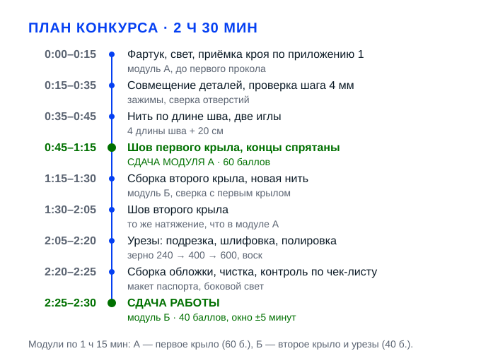
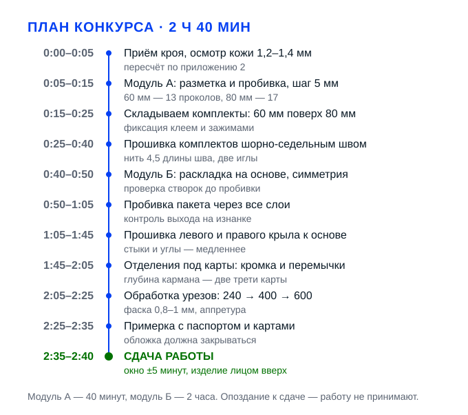
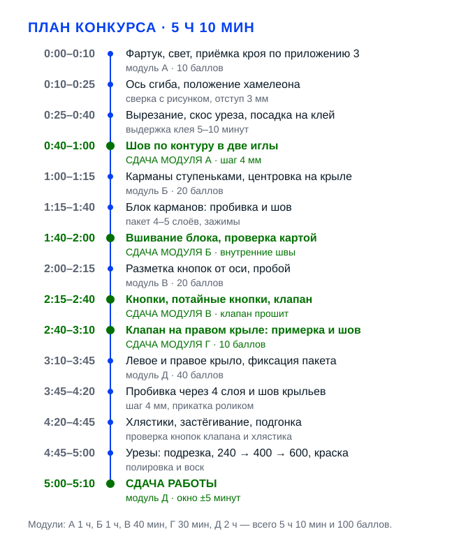

Кожевенное дело (Р)
Задания ниже — официальные файлы «Абилимпикс» (источник: abilympics-russia.ru), разложенные по категориям. Решения написаны по тексту задания, регламенту и критериям оценки; в них указано, что именно проверяет эксперт.
Школьник
14–16 лет, базовый уровень заданияВыдержка из официального конкурсного задания: страницы, относящиеся к категории «Школьник» (стр. 6–8 источника).
Пошаговое решение
Задание для школьников короткое по формулировке и очень плотное по времени: из готового кроя нужно собрать паспортную обложку из кожи растительного дубления с восковой отделкой, сорт 1,2, толщиной 1,2–1,4 мм, прошив её шорно-седельным швом с шагом четыре миллиметра. Крой уже выкроен и пробит, рисовать и подрезать ничего не надо; всё соревнование сводится к двум модулям по одному часу пятнадцати минут — в первом прошивается первое крыло и приносит 60 баллов из 100, во втором прошивается второе крыло и обрабатываются урезы, это ещё 40 баллов. Работают двумя иглами на одной нити, которую отмеряют по длине шва, а концы прячут во внутреннюю сторону отделения. Ошибок здесь почти не прощают: кожа одна, детали в единственном экземпляре, а лишний прокол остаётся навсегда. Поэтому первые пятнадцать минут разумнее потратить на приёмку комплекта и разметку, чем на первое шило, и обязательно проверить шаг, натяжение и посадку до того, как позовёте эксперта.

Задача 1. Организовать рабочее место и принять комплект крояМодуль А · 60 баллов
До первого прокола стол должен стать понятным: фартук надет, свет падает без блика, инструмент лежит по зонам, комплект деталей пересчитан по приложению 1, а кожа осмотрена на толщину и Эти минуты не оплачиваются отдельным модулем, но именно они определяют, уложитесь ли вы в 1 час 15 минут на первое крыло. Участник, который начинает шить, не найдя иглы нужного номера или не заметив залом на лицевой стороне, теряет время дважды — сначала на поиск, потом на попытку исправить то, что уже не исправляется. Здесь же решается вопрос допуска: без фартука и сменной обуви к модулю не приступают.
Действие 1.1. Войти на площадку и надеть спецодежду
Шаг 1.1.1
Надеваем фартук поверх одежды так, чтобы он закрывал грудь и колени, застёгиваем все пуговицы и подбираем волосы под головной убор полностью — и спереди, и на затылке. Обувь меняем на удобную сменную с закрытым носком и нескользящей подошвой: на площадке сорок пять квадратных метров и семь рабочих мест, между столами ходят люди, а на полу после шлифовки урезов остаётся мелкая кожаная пыль. Рукава подворачиваем выше запястий, чтобы манжета не цеплялась за шило и не смахивала разложенные детали кроя.
Фартук и сменная обувь названы в задании как то, что участник привозит с собой, а охрана труда требует застегнуть спецодежду и убрать волосы до начала работы. Это входной допуск: без спецодежды к модулю не приступают, а переодевание после старта съедает время из тех 1 часа 15 минут, что отведены на первое крыло. Практическая причина проще: кожа тянет жир и пыль, а пятно на лицевой стороне не убрать.
Отойдите к соседнему столу и попросите волонтёра или соседа посмотреть на вас со спины: волос не видно ни спереди, ни сзади, фартук застёгнут и не топорщится, обувь закрытая и сухая. Проверьте, что рукав не спускается на ладонь — при проколе шилом он поедет вместе с рукой.
Самая частая ошибка — надеть косынку «на макушку», оставив затылок открытым: спереди всё аккуратно, а сзади волосы выбиваются и попадают на рабочую поверхность. Вторая — остаться в привычной открытой обуви, рассчитывая, что «никто не заметит»: эксперт фиксирует это на входе, и спор уже проигран до первого стежка.
Эксперт осматривает участников до старта, отмечая полноту комплекта спецодежды, а дальше следит, остаётся ли фартук чистым по ходу работы. Он же сверяет, не мешает ли одежда работать двумя иглами.
Шаг 1.1.2
Проверяем рабочее место до того, как разложить инструмент: свет должен падать слева или спереди и не давать блика на кожу, потому что восковая отделка отражает свет и при косом освещении линия шва кажется ровнее, чем есть. Садимся так, чтобы стопы стояли на полу, а локти не висели: при работе двумя иглами предплечья опираются на стол, иначе натяжение нити будет прыгать. Проверяем стул — он не должен качаться, а стол не должен шататься от нажатия ладонью.
В требованиях охраны труда прямо записано: перед началом работы проверить достаточность освещённости, отсутствие слепящего эффекта и устойчивость стула. Здесь это не формальность: игла должна попасть в отверстие около миллиметра, а при плохом свете участник начинает искать его и рвать кожу вокруг. Участникам с нарушением зрения разрешены дополнительные лампы и лупы, но согласовать это нужно заранее.
Сядьте, положите ладони на стол и посмотрите на кромку детали: граница кожи и стола видна резко, без тени от руки. Стол не качается, стул устойчив, ступни на полу. Если тень от головы падает прямо на линию шва — переставьте лампу или развернитесь.
Работать в полутени «и так видно»: отверстия сливаются, игла идёт мимо и прокалывает новый прокол рядом со старым, а два прокола вместо одного на шаге четыре миллиметра — это уже брак, который виден на готовом шве.
Эксперт смотрит на организацию места в первые минуты и отдельно отмечает, воспользовался ли участник разрешёнными средствами освещения. Свет эксперт проверяет и позже, заметив, что участник щурится над деталью.
Шаг 1.1.3
Раскладываем инструмент по постоянным зонам и больше их не меняем: справа от детали — шило в подставке и киянка, слева — игольница с двумя иглами, ножницы и наперсток, перед собой — только то крыло, с которым работаем. Воск, зажимы и влажную губку для урезов убираем на край стола, чтобы они не попали под локоть. Всё лишнее — упаковку, запасные обрезки, телефон — сразу убираем в сумку под стол: на столе должно остаться ровно то, что участвует в операции.
Порядок на столе экономит минуты, которых в модуле всего 75. Когда шило лежит на своём месте остриём в подставку, вы берёте его не глядя и не тратите время на поиск; когда иглы воткнуты в игольницу, а не лежат на коже, вы не рискуете оставить на лицевой стороне царапину. Требования охраны труда запрещают класть ручной инструмент в карман и бросать иглы на пол — при таком порядке эти нарушения просто не возникают.
Проверьте себя простым тестом: закройте глаза и протяните руку — шило должно оказаться под ладонью, иглы под левой рукой, ножницы рядом с иглами. Если хотя бы один предмет приходится искать, зона выбрана неудачно.
Разложить всё «дорожкой» поперёк стола: тогда при каждом движении рука задевает иглы и воск. Вторая ошибка — держать открытую коробку с обрезками рядом с деталью: мелкие обрезки прилипают к бахтарме и потом оказываются под швом.
Эксперт оценивает организацию рабочего места как часть модуля и отмечает, был ли порядок устойчивым на протяжении всей работы. Ему важно, чтобы место оставалось таким до конца второго модуля.
Действие 1.2. Принять и сверить комплект кроя
Шаг 1.2.1
Пересчитываем детали комплекта по приложению 1 к конкурсному заданию: основа обложки и два крыла, которые предстоит прошить в модулях А и Б. Считаем вслух или отмечаем карандашом на распечатке перечня — так видно, что уже проверено. Если деталей не хватает, они отличаются по размеру или одна из них уже надорвана по отверстиям, идём к главному эксперту сразу, до старта, а не начинаем работу в расчёте «как-нибудь выкручусь».
Всем участникам выдают одинаковый набор кроя из одной и той же кожи, и замена после старта идёт только через главного эксперта, если он сочтёт причину уважительной. Приёмка — единственный момент, когда не хватающее ещё можно получить без потери баллов. Кроёны детали заранее и пробиты с шагом четыре миллиметра, поэтому каждая деталь на счету: из остатков выкройку не сделаете, а свои выкройки и схемы сборки на площадку приносить запрещено.
Все позиции отмечены, расхождений нет, либо расхождение сформулировано точно: чего нет, сколько и в каком виде. Удобно проговорить это эксперту одной фразой — «в комплекте нет второго крыла» или «на основе надорвано крайнее отверстие» — и услышать ответ.
Начать сразу с шила, не сверив комплект: в середине модуля выясняется, что второе крыло другого размера, и вся последовательность рушится. Вторая ошибка — заметить дефект и промолчать, надеясь, что «при оценке не заметят»: надрыв у отверстия разойдётся именно под натяжением нити, и это будет уже ваша вина.
Эксперт фиксирует приёмку комплекта до старта и знает, что именно было выдано участнику, — поэтому поздняя претензия выглядит как попытка переложить ответственность.
Шаг 1.2.2
Проверяем кожу по трём признакам, названным в задании: растительное дубление, восковая отделка, толщина 1,2–1,4 мм. Толщину проверяем на торце — приложите линейку к срезу и посмотрите, укладывается ли он между двумя миллиметровыми отметками с небольшим запасом; на ощупь кожа должна быть плотной, не рыхлой и не «тряпичной». Осматриваем лицевую сторону на просвет и под углом: заломы, подрезы, тёмные пятна, растянутые участки у края — всё это места, где шов ляжет волной.
Кожа растительного дубления с восковой отделкой ведёт себя иначе, чем хромовая: она жёстче держит форму, но хуже прощает лишний прокол, а от воды темнеет на тон-два. Толщина 1,2–1,4 мм выбрана не случайно: при ней шаг четыре миллиметра даёт прочный шов без «гармошки» по краю. Если участник не посмотрел на дефект заранее, он обнаружит его при обработке урезов, когда исправлять уже нечего.
Торец одинаковой толщины по всей длине, лицевая сторона без заломов и потёртостей, бахтарма матовая и однородная. Согните деталь пополам лицевой стороной внутрь: на сгибе не должно появиться белой полосы — она означает пересушенную кожу, которая треснет на угле.
Взять деталь, у которой край «повело» ещё до шва, и надеяться вытянуть её натяжением нити: перетянутая кожа даст волну по всей кромке, а волна на паспортной обложке читается сразу. Вторая ошибка — не заметить, что лицевая и бахтарма перепутаны на одной из деталей.
Эксперт осматривает кожу вместе с участником на приёмке и позже сверяет, совпадает ли качество выданного с тем, что участник предъявил к оценке. Он же смотрит, не осталось ли на деталях следов подрезки.
Шаг 1.2.3
Раскладываем детали в порядке сборки слева направо: сначала основа обложки лицевой стороной вверх, потом первое крыло, которое пойдёт в модуль А, затем второе — для модуля Б. Крой готовый, поэтому ножницы в руки не берём вообще: любые подрезы и подгонки запрещены логикой задания, детали уже выкроены и пробиты. Отдельно проверяем, что отверстия на совмещаемых деталях совпадают: приложите крыло к основе и посмотрите на свет — отверстия должны встать одно над другим без смещения.
Порядок деталей на столе — это половина успеха в работе с готовым кроем. Когда первое крыло лежит отдельно и отверстиями вверх, вы не путаете его со вторым и не начинаете шов с изнанки. Проверка совпадения отверстий до шва принципиальна: шаг четыре миллиметра не оставляет права на ошибку, и если отверстия не совпадают, значит деталь перевёрнута или взята не та.
Детали лежат в порядке модулей, отверстия совмещаются без усилия, кромки выравниваются в пределах половины миллиметра. Если отверстия не совпадают даже при правильной укладке, это вопрос к эксперту, а не повод подрезать.
Разложить детали «стопкой», чтобы освободить место: потом берёшь верхнюю, не глядя, и прошиваешь не то крыло. Вторая ошибка — начать подрезать кромку «для ровности»: крой готовый, а подрезка уменьшает деталь и открывает урезы там, где шов уже размечен.
Эксперт проверяет, что работа идёт по выданному крою, и сразу видит любые попытки подогнать детали под себя. Порядок деталей на столе он оценивает как часть подготовки к модулю А.
Действие 1.3. Подготовить инструмент к шорно-седельному шву
Шаг 1.3.1
Подбираем две одинаковые иглы: для вощёной нити толщиной около 0,8 мм подходят шорные иглы с крупным ушком, а обычная швейная игла с мелким ушком просто не пропустит воск. Проверяем острие на ногте — игла должна легко оставлять точку, а не скользить; погнутую или с заусенцем на острие сразу откладываем в сторону, потому что такой иглой вы порвёте кожу вокруг отверстия. Иглы втыкаем в игольницу или в подушечку, а не кладём на стол.
Шорно-седельный шов выполняется двумя иглами на одной нити, и обе иглы должны быть одинаковыми: разная длина или толщина меняет ход стежка, и шов начинает «косить» в одну сторону. Тупое острие — самая незаметная причина брака: игла проходит с усилием, отверстие раздаётся, и на лицевой стороне вокруг стежка появляется тёмный ореол от раздавленного края.
Игла входит в кожу с лёгким нажимом, без хруста и без сопротивления, ушко не цепляет нить. Обе иглы одинаковой длины, если положить их рядом. Проколите ненужный обрезок — отверстие должно быть чистым, без рваной кромки.
Взять иглы «какие нашлись», одну подлиннее и одну покороче: стежки получатся разного наклона, и это видно на готовом шве при боковом свете. Вторая ошибка — работать без наперстка: через двадцать проколов палец саднится, нажим слабеет, и последняя треть шва идёт хуже первой.
Эксперт смотрит на инструмент в начале работы и на равномерность стежков в конце — эти две вещи связаны напрямую. Отдельно он отмечает, работал ли участник в наперстке все два модуля.
Шаг 1.3.2
Проверяем шило и пробойник: шаг между зубьями или расстояние между отверстиями должно быть четыре миллиметра — именно этот шаг задан в задании для категории школьников. Острие шила должно быть прямым, без борозды: борозда расширяет отверстие и рвёт кожу. Под деталь кладём пробойную доску или плотный кусок пластика, чтобы острие не уходило в стол и не тупилось о столешницу.
Шаг четыре миллиметра — не рекомендация, а параметр задания: по нему считают и количество стежков, и длину нити, и общее впечатление от шва. Если отверстия уже пробиты, ваша задача — не добавить лишних; если предстоит пробивать самому, ошибка в шаге на полмиллиметра на десяти стежках даёт заметный перекос всей линии. Работа без подложки портит и острие, и стол, а это уже нарушение правил эксплуатации оборудования.
Приложите пробойник к линии шва и пересчитайте зубья: на сорок миллиметров должно приходиться десять интервалов. Острие шила при вертикальном взгляде не даёт двойного отражения — значит, оно прямое. Шаг не должен гулять.
Бить киянкой по пробойнику, держа его на весу: отверстия встанут с наклоном, и с изнанки они выйдут не там, где вошли. Вторая ошибка — пробивать без подложки и затупить инструмент к середине работы. Затупленное острие рвёт кожу, а не пробивает её.
Эксперт может пересчитать шаг на любом участке шва, и расхождение с четырьмя миллиметрами трактуется как нарушение технологии. Шаг он может пересчитать на готовом шве и сравнить с пробитым рядом.
Шаг 1.3.3
Собираем остальной инструмент и проверяем его состояние: ножницы должны резать нить одним движением, не зажёвывая её, лезвие — без зазубрин; наперсток садится на средний палец плотно, не спадает; зажимы для фиксации деталей мягкие, без острых зубцов, чтобы не оставить следов на лицевой стороне. Рядом кладём влажную губку и кусок воска или крема для урезов — они понадобятся в модуле Б, но искать их в конце будет некогда.
Требования охраны труда отдельно говорят о проверке режущей части ножниц и о том, что обрезку нитей производят только ножницами — обрывать нить лезвием или зубами запрещено. Тупые ножницы оставляют на конце нити «кисточку» из волокон: такой кончик не пройдёт в ушко и не спрячется между слоями, а будет торчать из шва. Зажимы с зубцами оставляют на коже вмятины, которые на восковой отделке не расправляются.
Ножницы режут нить под углом без усилия, наперсток держится на пальце при встряхивании руки, зажимы закрываются плавно. Пробуйте на обрезке нити: конец должен быть ровным, а не рваным. Конец нити после разреза ровный, без «кисточки».
Оставить ножницы «на потом» и рвать нить руками: волокна расходятся, конец пушится и не входит в отверстие. Вторая ошибка — фиксировать детали канцелярскими скрепками: они оставляют борозды на лицевой стороне.
Эксперт отмечает соблюдение требований охраны труда в течение всей работы, а не только на старте. По ножницам и наперстку он судит, готовился ли участник к работе с кожей.
Задача 2. Совместить детали и проверить шаг шва 4 ммМодуль А · 60 баллов
Крыло — это пакет из двух деталей, и вся его геометрия задаётся до первого стежка: отверстия должны совпасть, кромки встать заподлицо, линия шва пройти на одинаковом расстоянии от края, а шаг остаться тем самым — четыре миллиметра. Переделать эту часть потом нельзя: распороть шорно-седельный шов на коже означает оставить ряд проколов, а детали кроя выданы в единственном экземпляре. Спокойная проверка занимает пять-семь минут и страхует и 60 баллов модуля А, и все 40 баллов модуля Б, потому что второе крыло собирается по тем же правилам.
Действие 2.1. Совместить детали крыла и проверить линию шва
Шаг 2.1.1
Берём деталь первого крыла и совмещаем её с ответной деталью по пробитым отверстиям: сначала попадаем в два крайних отверстия, потом проверяем середину. Кромки выравниваем заподлицо — допустимая ступенька не больше половины миллиметра, потому что при обработке урезов она станет видимой полкой. Фиксируем пакет двумя зажимами у самых углов, отступив от линии шва на пятнадцать-двадцать миллиметров, и не сжимаем кожу до вмятины.
Крыло — это пакет из двух деталей, и если их совместить не по отверстиям, а «на глаз», шов пойдёт с перекосом: с одной стороны кромки останется два миллиметра, с другой — пять, и обложка получится кривой. Полмиллиметра ступеньки на глаз почти не видно, но после шлифовки урезов она превращается в уступ, а на паспортной обложке урез открыт и его рассматривают отдельно. Зажимы ставят у углов: между ними удобно прошивать без перестановок.
Отверстия совпадают по всей длине, кромки идут одной линией, пакет не «пружинит» при нажатии ладонью. Проведите ногтем вдоль кромки: не должно быть места, где ноготь цепляется за уступ. Ноготь скользит по кромке, нигде не задерживаясь.
Совместить детали по одному углу и сразу зажать: к противоположному углу набегает смещение в один-два миллиметра, и выправить его уже нельзя. Вторая ошибка — зажать пакет посередине шва: зажим перекрывает отверстия, и его приходится снимать в самый неудобный момент.
Эксперт проверяет посадку пакета до начала шва и отдельно смотрит кромку после обработки урезов — там ступенька видна без инструмента. После обработки урезов ступенька становится главной придиркой к работе.
Шаг 2.1.2
Проверяем геометрию линии шва: отступ от кромки три-четыре миллиметра, шаг между отверстиями четыре миллиметра, первый и последний прокол на одинаковом расстоянии от торца. Пересчитываем отверстия по длине: на сто миллиметров приходится двадцать пять интервалов, и это число нетрудно сверить с пробитым рядом. Если отверстия не пробиты, размечаем линию шилом по металлической линейке, ставя точки легким нажатием, а не прорезая кожу.
Шаг четыре миллиметра задан в задании, и он же определяет расход нити и плотность шва. Ровный отступ от кромки — это то, что эксперт видит первым: линия, которая то приближается к краю, то отходит, читается как небрежность даже при идеальном натяжении. Симметрия первого и последнего прокола важна для углов: если крайний стежок стоит в двух миллиметрах от торца с одной стороны и в пяти с другой, обложка будет казаться перекошенной.
Отступ одинаков по всей длине, шаг проверен пересчётом, крайние стежки стоят зеркально. Приложите линейку вдоль линии шва: просвет между линейкой и стежками должен быть одинаковым. Просвет между линейкой и стежками одинаковый по всей длине.
Размечать «на глаз» и надеяться, что разница в полмиллиметра не видна: на прямом шве она заметна, потому что глаз ловит ритм. Вторая ошибка — процарапывать линию шилом: борозда на лицевой стороне восковой кожи не расправляется и остаётся светлой полосой.
Эксперт прикладывает линейку к линии шва при оценке модуля, и отступ входит в число измеримых показателей. Он проверяет отступ на двух участках — в начале шва и у второго угла.
Шаг 2.1.3
Определяем, какой стороной вверх лежит пакет: шов идёт по лицевой стороне, карман или отделение смотрит внутрь, к паспорту. Чтобы не ошибиться, положите деталь так, как она будет выглядеть в готовой обложке, и мысленно вложите между крыльями книжечку паспорта — открытая сторона отделения должна смотреть на неё. Проверяем, что нить не перекручена и оба конца выходят с нужной стороны пакета.
Перевёрнутый пакет — ошибка, которую невозможно исправить: распарывать шорно-седельный шов на коже нельзя, следы проколов останутся навсегда, а детали кроя в единственном экземпляре. Внутренняя сторона отделения должна быть чистой: именно туда вы спрячете концы нити, и именно её будет видеть владелец обложки, открывая паспорт. Перекрученная нить даёт «жгутики» между стежками, которые выглядят как узелки.
Пакет лежит лицевой стороной вверх, отделение смотрит внутрь, нить лежит ровно без спирали. Проверьте на просвет: со стороны бахтармы не должно быть видно узлов и протяжек. На просвет со стороны бахтармы не видно узлов и протяжек.
Начать шов, не определив лицо и изнанку: половина крыла прошита «внутрь», и работа обнуляется вместе с 60 баллами модуля А. Вторая ошибка — крутить пакет в руках во время шитья: направление шва меняется, и стежки ложатся с разным наклоном.
Эксперт на первом же осмотре смотрит, какой стороной вверх идёт шов, — это самый быстрый способ понять, владеет ли участник сборкой. Ошибку с лицом и изнанкой он замечает по наклону стежков на крыле.
Действие 2.2. Подготовить и проконтролировать отверстия
Шаг 2.2.1
Берём шило так, чтобы острие выходило из ладони на пятнадцать-двадцать миллиметров, и прокалываем строго вертикально: локоть над деталью, кисть не завалена, взгляд на острие сверху. Под пакет подложена пробойная доска. Если отверстия уже пробиты организаторами, шило нужно не для прокола, а для прочистки: забившиеся после пробоя отверстия проходим насквозь, не расширяя их.
Вертикальный прокол — условие ровного шва. При наклонном шиле отверстие с лицевой стороны выходит в одном месте, а с бахтармы — в другом, и игла с обратной стороны идёт мимо, раздвигая кожу. На коже толщиной 1,2–1,4 мм этот сдвиг особенно заметен: чем толще пакет, тем сильнее уводит острие. Прочистка готовых отверстий нужна потому, что после пробоя в них остаются кожаные пробочки, и игла с вощёной нитью в них просто не проходит.
Острие входит и выходит по одной линии, отверстие круглое, одинаковое с двух сторон. Проколите обрезок и посмотрите на свет: точка на лицевой и точка на бахтарме должны совпадать. Отверстие круглое, одинаковое с двух сторон.
Держать шило как карандаш и колоть под углом сорок пять градусов: с изнанки отверстия уходят к краю, и последние стежки выходят за линию шва. Вторая ошибка — колоть с усилием и разрывать кожу вокруг отверстия, оставляя тёмный ореол.
Эксперт осматривает отверстия и бахтарму до шва: рваные, раздавленные отверстия — прямой путь к снижению оценки за качество. Отдельно он смотрит, не раздавлены ли отверстия у кромки.
Шаг 2.2.2
Переворачиваем пакет и проверяем выходы отверстий с бахтармы: они должны идти ровной линией, параллельной кромке, на том же расстоянии, что и с лицевой стороны. Если какой-то выход «убежал» к краю или к середине, отметьте это место карандашом на обрезке и при шитье ведите иглу аккуратнее именно здесь. Заусенцы и волокна по краю отверстий снимаем ногтем, а не ножом.
Бахтарма — это то, что видит эксперт, когда поднимает крыло, и то, что видит владелец обложки каждый раз, открывая паспорт. Неровный ряд выходов с изнанки читается как небрежность, даже если лицевая сторона идеальна. Кроме того, по выходам легко поймать наклон шила до того, как он превратится в перекошенный шов: исправить разметку до первого стежка гораздо дешевле, чем переделывать крыло.
Ряд выходов с изнанки параллелен кромке, расстояние до края совпадает с лицевой стороной в пределах полумиллиметра. Осмотрите пакет при боковом свете: тени от отверстий должны идти ровным пунктиром. Ряд выходов не «гуляет» к краю.
Проверить только лицевую сторону и не перевернуть пакет: с изнанки обнаруживается, что половина отверстий вышла на три миллиметра ближе к краю, а это уже другой шаг шва. Вторая ошибка — срезать заусенцы ножом и расширить отверстия.
Эксперт переворачивает изделие при оценке, и состояние бахтармы входит в общую оценку модуля наравне с лицевой стороной. Бахтарму он осматривает, поднимая крыло к свету на уровне глаз.
Шаг 2.2.3
Проверяем шаг по всей длине: приложите линейку к ряду отверстий и пересчитайте интервалы на участке в сорок миллиметров — их должно быть десять. Отдельно смотрим углы: на повороте отверстие одно, а не два подряд, иначе на угле получится утолщение из четырёх стежков и кожа разъедется. Если на угле пробито два отверстия слишком близко, ведите шов через одно, сохраняя ритм.
Ритм стежков — первое, что бросается в глаза на кожаном изделии, и единственный параметр, который в задании задан числом: четыре миллиметра. Сбитый шаг на угле даёт «шишку» — место, где пакет раздут и не поддаётся шлифовке. Эксперт может пересчитать шаг на любом участке, и расхождение будет зафиксировано как нарушение технологии, а не как «мелкая неровность».
На каждом участке в сорок миллиметров ровно десять интервалов, на углах по одному отверстию, ряд не ветвится и не сдваивается. Пройдите глазами по всей длине, не пропуская середину: именно там сбивается ритм.
Пробить дополнительные отверстия «для красоты» между готовыми: шаг превращается в два миллиметра на участке, и шов выглядит заплаткой. Вторая ошибка — не заметить сдвоенное отверстие на угле и прошить оба.
Эксперт проверяет шаг выборочно на двух-трёх участках и на угле, где ошибки проявляются чаще всего. Пересчёт шага на двух участках — обычная процедура при оценке модуля.
Задача 3. Прошить первое крыло шорно-седельным швомМодуль А · 60 баллов
Сердце конкурса: одна нить, две иглы и семьдесят пять минут. Нить отмеряется по длине шва с расчётом на двойной расход, вощится и заправляется в две иглы, после чего каждый стежок выполняется перекрёстом внутри отверстия и затягивается под углом сорок пять градусов. Оценивают ровность линии, соблюдение шага, одинаковое натяжение, аккуратность углов, закрепление и спрятанные концы — то есть весь модуль целиком, 60 баллов из 100. Здесь важно не ускоряться: перетянутая нить даёт волну по кромке, а недотянутая оставляет петли, и то и другое уже не исправить обработкой урезов.
Действие 3.1. Отмерить нить по коже и заправить две иглы
Шаг 3.1.1
Отмеряем нить по длине шва, как этого требует задание: кладём конец нити на кромку крыла и откладываем её вдоль линии шва четыре раза, затем добавляем запас двадцать сантиметров на перехваты и на концы. Считать удобно и в стежках: при шаге четыре миллиметра на сантиметр приходится два с половиной стежка, и каждый стежок забирает две длины — свою и обратную. Отрезаем ножницами под углом, а не рвём: ровный срез легче вдеть в ушко.
Шорно-седельный шов идёт одной нитью с двумя иглами, поэтому расход двойной: если отмерить нить «на глазок» и не хватит последних десяти стежков, нарастить её в середине шва нельзя — узел останется внутри и его будет видно с изнанки. Правило четырёх длин проверено практикой: при шаге четыре миллиметра на пакете из двух деталей кожи 1,2–1,4 мм этого хватает с запасом, а лишние полметра нити только путаются и цепляются за зажимы.
Нить отмерена и отрезана, её длина примерно равна четырём длинам шва плюс двадцать сантиметров. Проверьте просто: сложите нить пополам — её половина должна быть чуть длиннее самого шва. Сложенная пополам нить чуть длиннее самого шва.
Отмерить нить ровно по длине шва: к последней трети шва нить заканчивается, и приходится делать узел, который виден с бахтармы. Вторая ошибка — отмерить с трёхкратным запасом: длинная нить при каждом перехвате перекручивается и путается.
Эксперт смотрит, есть ли на шве узлы и утолщения, — это первый признак, что нить была отмерена неверно. По узлам и утолщениям он быстро понимает, как отмерялась нить.
Шаг 3.1.2
Протягиваем нить через воск два-три раза, прижимая её большим пальцем к бруску, и потом разглаживаем между пальцами, чтобы воск лёг тонким слоем, а не комками. Если нить уже вощёная заводским способом, достаточно одного прохода. Концы нити оплавляем коротким касанием на металлической подложке или подклеиваем, чтобы они не пушились: опалённый кончик проходит в ушко и в отверстие без разлохмачивания.
Вощёная нить скользит в отверстии и ложится в стежок ровно, а не ворсится, цепляясь за край кожи. На коже растительного дубления это особенно важно: ворсинки, вытянутые из нити, слипаются с дубильными веществами и оставляют на лицевой стороне тёмные волоски, которые потом не убрать. Воск заодно защищает нить от влаги и делает шов прочнее на истирание, что для паспортной обложки, которую носят в кармане, имеет прямое значение.
Нить на ощупь слегка липкая и гладкая, без комков воска, концы ровные и не распушены. Проведите нитю между пальцами: она должна идти с лёгким сопротивлением, а не скользить как сухая. Комков воска на нити нет, концы не распушены.
Натереть нить толстым слоем воска: комочки забьют отверстия, и игла пойдёт туго, разрывая кожу. Вторая ошибка — оставить концы необработанными: при вдевании в ушко нить разлохматится, и этот пух пойдёт в шов.
Эксперт осматривает нить в стежках: комки воска, торчащие волокна и «махры» между стежками заметны при боковом свете и снижают оценку за аккуратность. Ворс и комки воска он замечает при осмотре шва под углом к свету.
Шаг 3.1.3
Вставляем один конец нити в ушко первой иглы и протягиваем примерно на семь сантиметров, затем второй конец — во вторую иглу, тоже на семь сантиметров. Обе иглы оказываются на одной нити, посередине — рабочий участок. Короткие хвосты нужны для того, чтобы иглы не соскакивали при перехвате; если хвост длиннее, он болтается и цепляет зажимы. Иглы втыкаем в игольницу до первого стежка, чтобы не потерять.
Это и есть «вставить нить в две иглы» из последовательности задания: без второй иглы шов получится односторонним, стежки будут ложиться с наклоном в одну сторону и шов разойдётся при первом же натяжении. Симметричный перекрёст двух игл — то, что делает шорно-седельный шов прочным: каждая нить идёт навстречу другой, и при обрыве одной шов держится. Хвост в семь сантиметров нужен, чтобы удержать иглу пальцами, и при этом он не мешает.
Обе иглы сидят на одной нити, хвосты одинаковой длины, нить между иглами не перекручена. Поднимите иглы за нить: они должны висеть на одинаковой высоте, не съезжая по нити. Обе иглы висят на одной высоте, хвосты равные.
Вдеть один конец в две иглы подряд — распространённая ошибка новичка: тогда обе иглы тянут одну и ту же сторону нити, и шов получается односторонним. Вторая — оставить хвост в два сантиметра: игла слетает с нити на середине шва.
Эксперт наблюдает за началом шитья: правильно заправленные две иглы видны сразу, и по ним понятно, что участник знаком с техникой. По началу шва он понимает, знакома ли участнику техника двух игл.
Действие 3.2. Выполнить шорно-седельный шов первого крыла
Шаг 3.2.1
Начинаем с крайнего отверстия: вводим первую иглу с лицевой стороны и вытягиваем нить до середины, чтобы концы уравнялись. Затем проходим это же отверстие второй иглой с бахтармы и затягиваем — получается первый перекрёст. Чтобы шов не распустился, первый стежок проходим дважды: возвращаемся во второе отверстие и снова в первое, а не завязываем узел. После закрепления расправляем пакет и проверяем, что нить легла по линии шва, а не поверх кромки.
Закрепление двойным проходом — производственный способ, который не оставляет узлов: узел на коже 1,2–1,4 мм даёт бугорок, а бугорок на паспортной обложке виден и на лицевой стороне, и в отделении. Первый стежок задаёт направление всему шву: если он встал косо, дальше вы будете выправлять линию каждым следующим проколом и в итоге получите волну. Выравнивание концов именно в начале важно потому, что потом нить уже не перераспределить.
Первый стежок стоит точно в отверстии, оба конца нити одинаковой длины, пакет не стянут. Потяните за оба конца в стороны: они должны идти с одинаковым усилием, без перекоса. Концы нити одинаковой длины, пакет не стянут.
Завязать узел на первом стежке: он проступит на лицевой стороне и в отделении, а при обработке урезов может попасть под шлифовку. Вторая ошибка — начать шов со второго отверстия, оставив край незакреплённым: угол разойдётся первым.
Эксперт осматривает начало и конец шва отдельно: именно там чаще всего видны узлы, «борода» из нити и распущенные стежки. Начало шва он проверяет на прочность, потянув за концы нити.
Шаг 3.2.2
Работаем перекрёстом: игла с лицевой стороны уходит в отверстие и выходит на бахтарме, игла с бахтармы в это же отверстие входит с другой стороны. Нить при этом образует петлю, и прежде чем затягивать, иглы нужно провести одна мимо другой внутри пакета, а не развести в стороны снаружи. Затягиваем, потянув обе иглы в противоположные стороны под углом около сорока пяти градусов к линии шва, и только после этого отпускаем.
Перекрёст внутри отверстия — суть шорно-седельного шва: нити проходят друг мимо друга между слоями кожи, поэтому стежок держится даже при обрыве одной нити. Если развести иглы снаружи, получится простой двусторонний стежок, который расходится при натяжении и выглядит как перекрученная восьмёрка. Угол сорок пять градусов нужен, чтобы нить ложилась в стежок по кратчайшему пути, а не перетиралась о кромку отверстия.
Стежок на лицевой стороне лежит с наклоном в одну сторону, на бахтарме — с наклоном в противоположную, и рисунок повторяется по всей длине. Раздвиньте два стежка: между ними должна быть видна целая нить без петли и узелка.
Протягивать обе иглы в одном направлении, не делая перекрёста: шов становится односторонним и при натяжении расходится лесенкой. Вторая ошибка — затягивать стежок, не проверив, что иглы разошлись внутри, и получать петлю на бахтарме.
Эксперт смотрит на рисунок стежков с двух сторон: правильный перекрёст даёт характерный «ёлочный» наклон, и его ни с чем не спутать. Рисунок он сверяет с лицевой и с изнаночной стороны одновременно.
Шаг 3.2.3
Держим одинаковое натяжение от первого до последнего стежка: тянем за обе иглы с тем же усилием, с каким затягивали первый, и после каждого перекрёста проверяем пальцем, не провисла ли нить. Кожа при правильном натяжении не морщится по кромке, а стежок лежит плотно, чуть утопая в отверстии. Каждые десять-пятнадцать стежков останавливаемся на секунду, расправляем пакет и проверяем линию.
Натяжение — главный источник брака на этом шве: перетянутая нить стягивает пакет, кромка идёт волной, и никакая обработка урезов этого не исправит; недотянутая — оставляет петли, за которые цепляется паспорт. Остановки каждые десять-пятнадцать стежков нужны не для отдыха, а для контроля: на длинном шве глаз «замыливается», и отклонение в один миллиметр накапливается к середине крыла в заметную дугу.
Кромка остаётся прямой, если положить деталь на стол и посмотреть вдоль неё; стежки одинаковой высоты, нить не блестит от перетяга. Приложите ладонь: пакет не должен выгибаться лодочкой. Приложите ладонь: пакет не выгибается лодочкой.
Тянуть изо всех сил «чтобы держалось»: кожа вокруг отверстий собирается в мелкие складки, кромка идёт волной, и это минус в оценке сразу по двум показателям — ровности шва и качеству урезов. Вторая ошибка — тянуть вяло, оставляя петли между слоями.
Эксперт проверяет натяжение тактильно — проводит пальцем по шву: петли и «горбики» чувствуются сразу, даже если глаз их не поймал. Проводит пальцем вдоль шва и отмечает места, где нить провисла.
Шаг 3.2.4
На углу и на повороте порядок меняется: сначала проходим угловое отверстие с одной стороны, затем, не пропуская, вводим иглы в следующее отверстие новой линии, и только после этого затягиваем. Пакет на повороте разворачиваем в руках, а не выкручиваем нить. Если отверстие пропущено, возвращаемся и проходим его в обе стороны, не «дотягивая» нить через одно отверстие.
Угол — место, где пакет толще всего и где ошибки видны сильнее: два стежка в одно отверстие дают утолщение, которое не шлифуется заподлицо, а пропущенное отверстие — разрыв в ритме, который читается как дыра. Возврат обязателен: протяжка через одно отверстие оставляет стежок вдвое больше шага, и он бросается в глаза. Пакет на повороте разворачивают в руках: перекрученная нить ложится неровно и быстро перетирается.
На угле стежки образуют аккуратный поворот без утолщения, шаг сохраняется, пропусков нет. Проведите пальцем по углу: он не должен выделяться высотой над остальным швом. Пальцем по углу: он не выделяется высотой над швом.
Прошить угол «наискосок», перескочив угловое отверстие: на готовом изделии угол провисает, и крыло разворачивается с перекосом. Вторая ошибка — стянуть угол, вытягивая нить через силу, и получить складку на лицевой стороне.
Эксперт осматривает углы в первую очередь, потому что на них проверяется и техника, и аккуратность одновременно. Углы он осматривает на просвет и сравнивает левый с правым.
Действие 3.3. Завершить шов и спрятать концы нити
Шаг 3.3.1
Заканчиваем шов закреплением: проходим последнее отверстие в обратном направлении, затем предыдущее — тоже в обратном, и только после этого выводим иглы на бахтарму. Нить не обрезаем под корень: оставляем концы по сорок-пятьдесят миллиметров, чтобы их хватило завести между слоями. Ножницы держим под углом к нити, режем одним движением, не перекусывая по частям.
Обратный проход в двух последних отверстиях — это замок, который держит шов без узла. По нему видно, что шов не распустится: обложку открывают каждый день, и конец шва всё время нагружен. Длинные концы нужны для следующей операции — их предстоит спрятать между слоями, а из обрезка в пять миллиметров этого не сделать. Охрана труда запрещает рвать нить зубами или лезвием — режем только ножницами.
Последние два стежка идут в обратном направлении, шов не распускается при потягивании за конец. Концы нити одинаковой длины, обрезаны ровно, без «кисточки». Концы одинаковой длины, обрезаны ровно, без «кисточки».
Обрезать нить под самое отверстие: прятать будет нечего, и кончик вылезет из шва через неделю носки. Вторая ошибка — завязать узел на бахтарме: он останется жёстким бугорком, который натирает паспорт.
Эксперт проверяет конец шва на прочность и на отсутствие узлов — это один из измеримых показателей качества. Конец шва он проверяет потягиванием, а не на глаз.
Шаг 3.3.2
Прячем концы во внутреннюю сторону отделения, как сказано в последовательности задания: раздвигаем слои крыла большим и указательным пальцем, вводим между ними шило и заводим кончик нити на десять-пятнадцать миллиметров внутрь, ведя его вдоль слоя, а не поперёк. Второй конец уводим в другую сторону, чтобы они не легли друг на друга. Место выхода прижимаем большим пальцем и разглаживаем, при необходимости фиксируя каплей клея у самого входа в отверстие.
Спрятанные концы — требование задания, и одновременно самый заметный признак аккуратной работы: торчащая из шва нить видна сразу и на лицевой стороне, и в отделении. Заводить конец вдоль слоя нужно потому, что поперёк он упрётся в шов и выйдет наружу в другом месте. Разные направления для двух концов дают симметрию: если оба уйдут в одну сторону, на этом участке образуется утолщение, которое проступит на лицевой стороне.
Концов не видно ни с лицевой стороны, ни в отделении, при нажатии пальцем они не выходят обратно. Посмотрите на шов при боковом свете: нигде не должно быть торчащих волосков. При нажатии пальцем концы не выходят обратно.
Обрезать концы «под шов» и не прятать: через несколько открываний паспорта они вылезут, и изделие будет выглядеть недоделанным. Вторая ошибка — завести конец поперёк слоя и получить бугорок на лицевой стороне.
Эксперт открывает крыло и смотрит внутрь отделения: спрятанные концы — прямой критерий качества обработки, названный в задании. Он раздвигает слои и смотрит, не выходит ли нить обратно.
Шаг 3.3.3
Осматриваем изнанку целиком: узлов нет, протяжек между стежками нет, концы не выглядывают, нить не перетянута. Проходим пальцем по бахтарме вдоль шва — поверхность должна быть гладкой, без бугорков. Отмечаем на обрезке, если где-то осталась петля, и решаем сразу: подтянуть её можно только до обработки урезов, дальше доступа к внутренним слоям не будет.
Изнанка — та сторона, которую не видно на фотографии, но которую эксперт обязательно проверит, а владелец обложки будет видеть каждый день. Петля между слоями — это не только некрасиво: за неё цепляется край паспорта, и через месяц она превращается в затяжку. Проверка пальцем надёжнее взгляда, потому что мелкие бугорки глаз пропускает, а рука чувствует.
Бахтарма гладкая, стежки одинаковой высоты, узлов и петель нет, концы спрятаны. Наклоните крыло к свету: тени от стежков должны идти ровным ритмом. Тени от стежков идут ровным ритмом, бугорков под пальцем нет.
Проверить только тот участок, который виден, и не развернуть крыло: петля остаётся на дальнем конце, и её обнаружат при оценке. Вторая ошибка — пытаться подтянуть петлю после того, как шов закреплён: нить пойдёт волной по всей длине.
Эксперт разворачивает изделие и осматривает бахтарму при оценке модуля — состояние изнанки входит в 60 баллов модуля А наравне с лицевой стороной. Особенно внимательно он смотрит на участок у закрепления.
Действие 3.4. Проконтролировать первое крыло и сдать модуль А
Шаг 3.4.1
Проверяем шов по измеримым признакам: отступ от кромки одинаковый по всей длине, шаг четыре миллиметра сохраняется, наклон стежков повторяется. Кладём линейку вдоль линии шва и смотрим просвет; затем переворачиваем крыло и повторяем проверку с бахтармы. Отдельно считаем пропуски: их быть не должно ни одного, потому что пропуск — это стежок двойной длины, который виден на фоне остальных.
Модуль А стоит 60 баллов из 100, и оценивают его по измеримым и оценочным показателям одновременно: ровность линии, ритм шага и качество стежка можно проверить линейкой, а аккуратность — глазом. Проверка по линейке нужна до того, как вы позовёте эксперта: если обнаружится отклонение, у вас ещё есть время в рамках модуля, а после сдачи работы его уже не переделать. Пропуски ищут пересчётом, потому что на глаз они маскируются общим ритмом.
Линия шва параллельна кромке на всей длине, шаг пересчитан и совпадает, пропусков нет, высота стежков одинаковая. Пройдите вдоль шва ногтем: каждый стежок должен ощущаться одинаково. Пройдите вдоль шва ногтем: стежки ощущаются одинаково.
Ограничиться беглым взглядом на изделие целиком: волна в середине крыла видна только при взгляде вдоль кромки. Вторая ошибка — проверять только лицевую сторону и не смотреть на бахтарму, где пропуск заметнее.
Эксперт оценивает модуль А по чек-листу, где отдельными строками идут ровность шва, соблюдение шага и качество закрепления концов. Чек-лист он заполняет по каждому крылу отдельно.
Шаг 3.4.2
Проверяем посадку крыла: кромки совпадают заподлицо, пакет не выгнут лодочкой, отделение открывается свободно. Вкладываем между крылом и основой макет паспорта или сложенный вдвое лист того же формата и смотрим, не зажимает ли шов край. Кладём крыло на стол и смотрим вдоль кромки одним глазом — так видны малейшие изгибы и перекос. Если отделение зажато, проверьте симметрию ещё раз до сдачи.
Крыло, стянутое швом, перестаёт быть плоским, и обложка встаёт косо — это замечают и эксперты, и потом владелец. Проверка с макетом паспорта показывает практический результат: отделение должно вмещать документ и не деформировать его. Взгляд вдоль кромки — самый чувствительный способ поймать волну: то, что не видно фронтально, на просвет читается как линия горизонта.
Кромка прямая при взгляде вдоль неё, макет входит и выходит свободно, отделение не зажато. Положите крыло на ровную поверхность: оно не должно качаться. Положите крыло на ровную поверхность: оно не качается.
Проверять посадку на весу, держа крыло в руке: пальцы маскируют изгиб. Вторая ошибка — вложить паспорт силой и решить, что «потом разработается»: кожа растительного дубления почти не растягивается. Ошибку видно на макете паспорта — он входит с трудом.
Эксперт проверяет геометрию изделия и работу отделения — посадка входит в оценочную часть модуля. Косой сгиб он отмечает как ошибку сборки, а не как свойство кожи.
Шаг 3.4.3
Приводим рабочее место в порядок, но не убираем инструмент: модуль Б идёт сразу за модулем А и начинается с той же операции — отмерить нить и вдеть её в две иглы. Обрезки и восковую стружку смахиваем в контейнер, иглы возвращаем в игольницу, готовое крыло кладём на чистое место лицевой стороной вверх. Затем поднимаем руку или подходим к эксперту и коротко докладываем: «Модуль А готов, первое крыло прошито, концы спрятаны».
Порядок перед вторым модулем экономит время и снижает риск: если инструмент уже разложен, вы начинаете шить через минуту после старта модуля Б, а в нём всего 1 час 15 минут на крыло и обработку урезов. Доклад о готовности нужен потому, что эксперты фиксируют момент окончания модуля: без этого работа может быть оценена как незавершённая, даже если фактически она сделана.
Рабочее место убрано, крыло лежит отдельно и не мешает, инструмент на местах, доклад сделан и услышан. Убедитесь, что готовое крыло не придавлено инструментом и не лежит на обрезках. Крыло не придавлено инструментом и не лежит на обрезках.
Убрать всё «до конца», включая иглы, и потом искать их на старте модуля Б: две-три минуты простоя в модуле с жёстким временем дороже, чем кажется. Вторая ошибка — не доложить о готовности и продолжать работу молча.
Эксперт отмечает время сдачи модуля и состояние рабочего места — организация входит в общую оценку работы участника. По докладу он понимает, в каком темпе участник идёт по модулям.
Задача 4. Прошить второе крыло и обработать урезыМодуль Б · 40 баллов
Второй модуль повторяет технику первого, но добавляет операцию, которой не было раньше: обработку урезов. Сначала второе крыло собирается и прошивается так же, как первое, причём с тем же натяжением — крылья оценивают в паре, и разница между ними видна сразу. Затем торцы выравниваются заподлицо, шлифуются по возрастанию зерна, увлажняются, полируются и запечатываются воском. На всё отведено 1 час 15 минут, и разумное распределение здесь такое: сорок-пятьдесят минут на шов, двадцать — на урезы, остальное на сборку и чистку. Модуль стоит 40 баллов.
Действие 4.1. Собрать и прошить второе крыло
Шаг 4.1.1
Берём второе крыло и повторяем сборку, но уже быстрее и внимательнее: совмещаем детали по крайним отверстиям, выравниваем кромки заподлицо, зажимаем углы. Обязательно сверяем второе крыло с первым: положите их рядом лицевой стороной вверх — рисунок отверстий, ширина и расстояние до кромки должны совпадать. Если второе крыло отличается от первого на миллиметр, это надо увидеть сейчас, а не после шва.
Обложка паспорта — изделие, где два крыла стоят рядом, и любая разница между ними читается как ошибка: одно крыло шире, рисунок стежков сдвинут, урезы на разной высоте. Модуль Б стоит 40 баллов из 100, и в нём оценивают в том числе совпадение сборки с уже готовой частью. Сверка с первым крылом — единственный способ удержать одинаковость: глаз сам по себе не сравнивает две детали, если их не положить рядом.
Оба крыла одинаковой ширины, отверстия идут на одном расстоянии от кромки, рисунок шага совпадает. Сложите крылья друг на друга и посмотрите на свет: контуры должны совместиться без ступеньки. Ступеньки на кромке быть не должно.
Собрать второе крыло «по памяти», не сравнивая с первым: разница в полмиллиметра не видна на отдельной детали, но видна в паре. Вторая ошибка — зажать пакет так, что кромка одного слоя уходит внутрь, и получить урез с уступом.
Эксперт оценивает обложку целиком, и совпадение крыльев — одна из первых вещей, которую он проверяет, разложив изделие на столе. Разницу в ширине крыльев он измеряет линейкой на столе.
Шаг 4.1.2
Отмеряем нить заново, не используя остаток от первого крыла: правило то же — четыре длины шва плюс двадцать сантиметров, вощение два-три прохода, два конца в две иглы с хвостами по семь сантиметров. Остаток от модуля А для второго крыла не годится: он уже помят, перекручен и частично потерял воск, а его длина может оказаться недостаточной — и тогда на последних стежках придётся наращивать нить.
Расход нити считается от длины конкретного шва, а не от предыдущего: швы на крыльях могут отличаться по длине. Работа с заново отмеренной нитью даёт ровное натяжение с первого стежка — мятая нить идёт рывками, и стежки получаются разной высоты. Второй комплект игл при этом не нужен: те же две иглы освобождаются после закрепления концов первого крыла.
Нить отмерена по длине второго шва, навощена, обе иглы на одной нити с равными хвостами. Проверьте длину, сложив нить пополам: половина должна быть чуть длиннее шва. Половина сложенной нити чуть длиннее второго шва.
Использовать остаток от первого крыла «чтобы не переводить материал»: в лучшем случае его хватит в притык, в худшем — придётся наращивать, а узел внутри шва не спрятать. Вторая ошибка — не навощить нить заново и получить ворс в стежках.
Эксперт обращает внимание на однородность стежков по всей обложке: разное натяжение на крыльях заметно именно в паре. Он сравнивает стежки на обоих крыльях, положив их рядом.
Шаг 4.1.3
Прошиваем второе крыло тем же способом, что и первое: старт с двойного прохода первого отверстия, перекрёст внутри пакета, натяжение сорок пять градусов, контроль линии каждые десять-пятнадцать стежков. Держим тот же ритм и то же усилие, что в модуле А: если первое крыло вы шили чуть слабее, второе нужно вести так же, а не «правильнее» — одинаковая пара важнее абсолютного идеала на одной детали.
Два крыла оценивают вместе, и разное натяжение на них видно сразу: одно крыло плотное, второе чуть раздутое, стежки лежат глубже или мельче. Сохранять одинаковый ритм нужно ещё и физиологически: рука уже набита после первого крыла, и именно на втором участники начинают торопиться и перетягивать нить. В модуле Б на всё про всё 75 минут, из которых 20–25 уйдут на обработку урезов, поэтому темп ровный, но без ускорения в ущерб натяжению.
Рисунок стежков повторяет первое крыло, кромка прямая, пакет не стянут. Положите оба крыла рядом и сравните при боковом свете: высота и наклон стежков должны совпадать. Высота и наклон стежков на крыльях совпадают.
Ускориться и перетянуть нить на второй половине шва: кромка пойдёт волной именно там, где рука устала, и обработка урезов это не скроет. Вторая ошибка — торопиться и пропустить отверстие, оставив стежок двойной длины.
Эксперт сравнивает крылья между собой, а не с эталоном: одинаковость пары для него важнее абсолютной плотности шва. Разное натяжение он ловит на ощупь, проводя пальцем по шву.
Шаг 4.1.4
Завершаем шов так же, как в модуле А: обратный проход в двух последних отверстиях, обрезка ножницами с концами по сорок-пятьдесят миллиметров, затем раздвигаем слои шилом и заводим концы во внутреннюю сторону отделения вдоль слоя, в разные стороны. Прижимаем место выхода пальцем, разглаживаем и проверяем, что концы не выходят наружу при нажатии. Готовое крыло кладём лицевой стороной вверх, чтобы не посадить пыль на шов.
Последовательность задания для модуля Б прямо требует завершить шов и спрятать концы нити во внутреннюю сторону отделения — это отдельный проверяемый пункт, а не мелочь. На втором крыле концы прятать сложнее: отделение уже частично закрыто, и завести нить нужно аккуратнее, чтобы не поставить лишний прокол на лицевой стороне. Разные направления концов дают симметрию и не создают утолщения в одном месте.
Концы не видны ни с лицевой стороны, ни внутри отделения, шов закреплён и не распускается. Проведите пальцем по месту выхода нити: бугорка быть не должно. Проведите пальцем по месту выхода нити: бугорка нет.
Обрезать концы короче, чем нужно, и оставить их торчать внутри отделения: это видно при открывании. Вторая ошибка — завести конец шилом с лицевой стороны, оставив дополнительный прокол рядом со швом. Второй прокол рядом со швом на лицевой стороне не убрать.
Эксперт открывает обложку и осматривает внутренние отделения — спрятанные концы относятся к критериям качества обработки. Внутренние отделения он открывает на обоих крыльях.
Действие 4.2. Обработать урезы обложки
Шаг 4.2.1
Выравниваем торцы заподлицо: находим места, где один слой выступает над другим, и подрезаем выступающую часть острым ножом или ножницами, держа лезвие под углом пятнадцать-двадцать градусов к плоскости торца и ведя его от себя. Режем короткими движениями по одному миллиметру, постоянно проверяя пальцем, исчезла ли ступенька. Лицевую сторону при этом прикрываем пальцем или картонкой, чтобы не поставить царапину.
Обработка урезов названа в модуле Б отдельной операцией, и начинается она с выравнивания: пока торец ступенчатый, никакая шлифовка не даст ровной полосы — более твёрдый слой будет стачиваться медленнее, и урез получится волнистым. Кожа растительного дубления режется чисто только острым инструментом: тупое лезвие мнёт волокна, и торец становится лохматым. Угол пятнадцать-двадцать градусов не даёт лезвию «нырнуть» в пакет и срезать лишнее.
Торец ровный по всей длине, ноготь не цепляется за уступ, толщина пакета одинаковая. Проведите подушечкой пальца вдоль уреза с закрытыми глазами — ступеньки чувствуются сразу. Толщина пакета одинаковая по всей длине уреза.
Срезать «побольше, чтобы точно ровно»: урез уходит в сторону, ширина крыла уменьшается, и обложка перестаёт быть симметричной. Вторая ошибка — резать тупым ножом и получить лохматый торец, который потом не шлифуется.
Эксперт смотрит на урез с расстояния вытянутой руки: ступеньки и срезы видны как светлые и тёмные полосы. Ступеньку он ищет ногтем: на светлом урезе её видно хуже, чем на ощупь.
Шаг 4.2.2
Шлифуем торец шкуркой последовательно: сначала зерном 240, затем 400 и в конце 600. Движения делаем вдоль уреза, в одном направлении, придерживая пакет так, чтобы он не разъезжался. Между номерами шкурки смахиваем пыль сухой тряпкой и смотрим на просвет: полоса должна становиться ровнее и однороднее, а не «полироваться пятнами». Шкурку держим на бруске или пальцем, без нажима на кромку.
Последовательность зерна — это не формальность: крупная шкурка оставляет борозды, которые мелкая не уберёт, а только отполирует, и урез будет выглядеть полосатым. Кожа растительного дубления с восковой отделкой шлифуется хорошо, но требует терпения: три коротких прохода дают ровную поверхность, а один длинный крупным зерном — глубокие царапины. Движение в одном направлении нужно, чтобы волокна легли единообразно и торец не «встал дыбом».
Урез матовый и ровный, без поперечных царапин и без светлых пятен. Проведите ногтем поперёк: поверхность должна быть гладкой, без задиров. Поверхность матовая, без поперечных царапин и задиров, ноготь идёт гладко.
Начинать сразу с зерна 600: грубые неровности не уходят, и урез остаётся волнистым при гладкой поверхности. Вторая ошибка — шлифовать поперёк уреза и заваливать кромку, срезая угол на лицевой стороне.
Эксперт проводит пальцем по урезу и смотрит на него под углом к свету: полосы от шкурки и заваленная кромка видны отчётливо. Заваленную кромку он видит по сужению полосы уреза у самого края.
Шаг 4.2.3
Увлажняем урез слегка влажной губкой или пальцем, смоченным водой, и даём впитаться полминуты, чтобы поверхность потемнела, но не стала мокрой. Затем полируем торцом деревянной палочки, кантом или плотной тканью, прижимая и водя вдоль уреза быстро, пока полоса не начнёт темнеть и лосниться. Нажим средний: сильное давление заваливает кромку, слабое не даёт эффекта.
Полировка урезов после увлажнения — то, что превращает шлифованный торец в аккуратную глянцевую полосу: волокна приглаживаются, пыль связывается, цвет становится глубоким. В конкурсном задании это часть операции «обрабатывают урезы», и эксперты отличают полированный урез от просто зачищенного с первого взгляда. Влажное сглаживание особенно заметно на коже растительного дубления — она темнеет и лоснится именно так, как нужно.
Урез потемнел, стал гладким и слегка блестящим, кромка не завалена, цвет ровный по всей длине. Пройдите вдоль уреза ногтем: зацепок нет, поверхность как отполированное дерево. Поверхность гладкая, как отполированное дерево.
Намочить урез «до лужи»: кожа разбухнет, пакет разойдётся, и урез после высыхания станет рыхлым. Вторая ошибка — полировать сухой торец: пыль не связывается, и урез остаётся светлым и шершавым. Сухой торец не темнеет и остаётся шершавым на ощупь.
Эксперт оценивает урезы отдельно: ровность, цвет и отсутствие завалов — три признака, которые он проверяет у каждой обложки. Разницу между шлифованным и полированным урезом он показывает на свет.
Шаг 4.2.4
Наносим воск или крем для урезов тонким слоем — ватной палочкой или пальцем, строго по торцу, не заходя на лицевую сторону больше чем на полмиллиметра. Даём впитаться две-три минуты, затем убираем излишки сухой тканью и полируем короткими быстрыми движениями вдоль уреза. Если воск лёг комками, снимаем их ногтем и повторяем нанесение тоньше. Кисть ведём от себя, чтобы не размазать воск по лицевой стороне.
Воск запечатывает срез: кожа не впитывает влагу с руки и не темнеет от прикосновений, а урез дольше остаётся ровным. На паспортной обложке это практическая необходимость — её берут пальцами за край каждый день. Излишки воска, оставленные на лицевой стороне, собирают пыль и образуют липкие пятна, которые впоследствии темнеют, поэтому наносить нужно точно по торцу и сразу убирать лишнее.
Урез ровный, слегка блестящий, не липнет к пальцу, на лицевой стороне нет восковых следов. Прижмите урез к светлой бумаге: следа остаться не должно. Прижмите урез к светлой бумаге: следа остаться не должно.
Намазать воск «на всякий случай» толстым слоем и не убрать излишки: через час работы на урезе соберётся пыль и стружка, и он станет тёмным и грязным. Вторая ошибка — заехать воском на лицевую сторону и оставить пятно.
Эксперт смотрит на урез в конце работы: свежий воск даёт ровный мягкий блеск, излишки — липкость и грязь по краю. Липкость уреза он проверяет, прижимая палец к торцу.
Действие 4.3. Собрать обложку и подготовить её к сдаче
Шаг 4.3.1
Складываем обложку так, как она будет работать: основа снаружи, крылья внутри, отделения обращены к паспорту. Вкладываем макет паспорта, закрываем обложку и проверяем, что крылья встают симметрично, зазоры слева и справа одинаковые, сгиб не топорщится. Затем вынимаем макет, раскладываем изделие на столе и смотрим на него сверху: обложка должна лежать ровно, без перекоса.
Сборка — это проверка всей предыдущей работы: если крылья прошиты с разным натяжением или разной шириной, при складывании обложка перекосится, и это видно сразу. Модуль Б оценивают по готовой обложке, а не по отдельным крыльям, поэтому проверка в собранном виде обязательна. Макет паспорта даёт реальную проверку посадки: слишком тугую обложку потом никто не сможет использовать по назначению.
Обложка складывается ровно, зазоры симметричны, макет входит и выходит свободно, сгиб не заломлен. Положите изделие на стол и посмотрите вдоль сгиба — линия должна быть прямой. Вдоль сгиба линия должна быть прямой.
Проверять крылья по отдельности и не складывать изделие: перекос проявляется только в паре. Вторая ошибка — вложить паспорт с усилием и растянуть отделение. Смещение крыльев на два миллиметра заметно сразу.
Эксперт складывает обложку и проверяет симметрию — это первый осмотр готового изделия в модуле Б. Перекос он ищет, положив обложку на стол и глядя вдоль сгиба.
Шаг 4.3.2
Проверяем урезы по всему периметру, а не только там, где они видны: пройдите пальцем по каждому торцу и убедитесь, что они одинаковой толщины, одинаково отшлифованы и обработаны воском. Отдельно смотрим места, где урез переходит в сгиб: там чаще всего остаётся необработанный участок в пять-семь миллиметров. Сравниваем цвет урезов на левом и правом крыле — он должен быть одинаковым.
Урезы обрабатывают целиком, потому что их осматривают по всему периметру, и один необработанный участок портит впечатление от всей работы. Переход в сгиб — самая частая «слепая зона»: к нему неудобно подобраться шкуркой, и участники пропускают его, а он виден при раскрытой обложке. Разный цвет урезов на крыльях означает, что одно из них шлифовали дольше или сильнее увлажняли.
Все урезы одинаковой толщины и цвета, заусенцев и ступенек нет, переходы в сгиб обработаны. Обведите изделие пальцем по контуру — нигде не должно быть участка, отличающегося на ощупь. Пройдите пальцем по всему контуру изделия.
Обработать только наружные урезы, которые видны в сложенном виде: при раскрытии обнаруживаются необработанные торцы крыльев. Вторая ошибка — перешлифовать одно крыло и получить разницу в цвете. Разница в цвете урезов читается как недоделанная работа.
Эксперт раскрывает обложку и проверяет урезы по всему контуру, включая внутренние торцы. Он обводит изделие пальцем по контуру и отмечает разницу на ощупь.
Шаг 4.3.3
Убираем следы работы: стираем остатки разметки мягким ластиком, снимаем пыль от шлифовки сухой тряпкой, убираем воск с лицевой стороны. Если на коже остались тёмные пятна от пальцев, протираем их слегка влажной тканью и сразу вытираем насухо, не растирая по площади. Проверяем, что на изделии нет волосков нити и кожаной стружки, прилипшей к бахтарме.
Чистота изделия оценивается визуально, и пыль от шлифовки на восковой коже выглядит как серый налёт — её видно на фотографии и на столе эксперта. Пятна от пальцев на светлой коже растительного дубления темнеют со временем, поэтому их убирают сразу. Стружка, прилипшая к бахтарме, при раскрытии обложки осыпается на паспорт, и это тоже замечают.
Лицевая сторона чистая и без разводов, бахтарма без стружки, разметка не видна. Посмотрите на изделие под лампой под углом: при боковом свете видны все разводы и пыль. При боковом свете видны все разводы и пыль.
Протереть кожу мокрой тряпкой «для чистоты»: на растительном дублении остаются тёмные разводы, которые не убрать. Вторая ошибка — оставить пыль от шлифовки, решив, что «сама сойдёт». Развод от воды остаётся навсегда и темнеет со временем.
Эксперт осматривает изделие при боковом освещении, и чистота поверхности входит в оценочную часть. Пятна от пальцев и пыль он замечает даже при ровном верхнем свете.
Задача 5. Проверить изделие и сдать работуМодули А и Б · 100 баллов
Финальная часть не добавляет новых операций, но сохраняет уже набранные баллы. Обложку проверяют по шести пунктам — шаг, отступ, пропуски, концы нити, урезы, симметрия, — затем вкладывают макет паспорта и смотрят, как изделие работает: входит ли документ, ложится ли сгиб по середине. Последний осмотр делают при боковом свете, потому что именно он показывает волну по кромке и разную высоту стежков. Дальше работа выставляется на стол сдачи в пределах двух с половиной часов, инструмент убирается по правилам охраны труда, а рабочее место сдаётся эксперту.
Действие 5.1. Проверить обложку по чек-листу
Шаг 5.1.1
Проходим по изделию по порядку, как по чек-листу, и каждый пункт проверяем отдельно, не перескакивая. Первое — шаг четыре миллиметра на обоих крыльях, пересчитанный на участке в сорок миллиметров. Второе — отступ от кромки, одинаковый по всей длине. Третье — отсутствие пропусков и сдвоенных стежков. Четвёртое — спрятанные концы в обоих отделениях. Пятое — качество урезов по всему периметру. Шестое — симметрия крыльев.
Модуль А и модуль Б вместе дают 100 баллов, и почти все эти баллы снимаются по конкретным пунктам, а не «за общее впечатление». Проверка по чек-листу нужна потому, что после двух с половиной часов работы глаз перестаёт видеть собственное изделие: вы смотрите на него и видите замысел, а не результат. Порядок пунктов выстроен от самого заметного к самому скрытому, поэтому даже при нехватке времени успеваете проверить главное.
Все шесть пунктов пройдены, и по каждому есть однозначный ответ «да». Если хотя бы один пункт вызывает сомнение — вернитесь к нему и посмотрите при другом освещении, прежде чем сдавать. Если пункт вызывает сомнение, вернитесь к нему.
Проверять «в целом» и решать, что «выглядит нормально»: часть дефектов — пропуск в середине шва, непрошитый участок у сгиба — не видна фронтально. Вторая ошибка — проверять только то, что делали последним, то есть урезы, и забыть про концы нити.
Эксперт оценивает изделие по чек-листу критериев, и участник, который сам прошёл по тем же пунктам, обычно теряет меньше баллов. По этому же списку он ставит баллы за оба модуля.
Шаг 5.1.2
Проверяем работу изделия, а не только внешний вид: вкладываем макет паспорта, закрываем и открываем обложку три-четыре раза, смотрим, не заминается ли край документа, не зажимает ли его шов, держат ли отделения форму. Проверяем сгиб: он должен складываться мягко, без хруста и без залома по линии. Если крылья стоят слишком близко друг к другу, паспорт входит туго — это повод проверить симметрию ещё раз.
Изделие должно работать по назначению: паспортная обложка, в которую документ не входит или входит с усилием, формально сделана, но задачу не выполняет. Сгиб — самое нагруженное место: на нём кожа 1,2–1,4 мм должна гнуться, а не ломаться, и если крылья пришиты с перекосом, изгиб уходит в сторону от середины. Проверка на макете занимает минуту и выявляет ошибки сборки, которые на глаз не видны.
Макет входит и выходит без усилия, обложка закрывается ровно, сгиб ложится посередине, отделения не деформируются. Откройте обложку на столе — она должна лежать раскрытой, не складываясь сама. Обложка лежит раскрытой, не складываясь сама.
Проверять посадку на пустой обложке: без паспорта зазоры кажутся больше, и слишком тесное отделение не выявляется. Вторая ошибка — растянуть отделение пальцами и считать, что «теперь нормально». Тугое отделение портит и документ, и впечатление от работы.
Эксперт вкладывает в обложку макет документа при оценке — практическая пригодность входит в оценочную часть модуля Б. Макет он вкладывает сам и смотрит, как ведёт себя край.
Шаг 5.1.3
Делаем последний осмотр «глазами эксперта»: кладём изделие на чистый лист бумаги, включаем лампу сбоку и смотрим на обложку под углом двадцать-тридцать градусов. При таком свете проступают волна по кромке, разная высота стежков, пятна воска и пыль. Затем смотрим фронтально с расстояния вытянутой руки: общее впечатление должно быть спокойным и симметричным, без деталей, которые «тянут» взгляд.
Боковой свет — самый честный способ проверки: он даёт тени, и всё, что кажется ровным при прямом освещении, проявляется как рельеф. Именно так смотрят изделие эксперты, когда оценивают ровность шва и качество урезов. Фронтальный взгляд с расстояния нужен для композиционной оценки: единичные мелкие дефекты на общем виде почти не читаются, а вот перекос или несимметричный угол виден сразу.
При боковом свете тени от стежков идут ровным рядом, кромка не даёт «ряби», пятен нет. Фронтально обложка выглядит симметричной, левое и правое крыло одинаковой ширины. Фронтально обложка симметрична, крылья равной ширины.
Смотреть только сверху и при ярком ровном свете: волна по кромке и разная высота стежков остаются незамеченными. Вторая ошибка — поправлять руками то, что уже не исправить, и оставлять на коже свежие отпечатки.
Эксперт осматривает изделие при боковом освещении на демонстрационном столе — это стандартный приём оценки кожаных изделий. Тень от кромки — его главный инструмент при этой оценке.
Действие 5.2. Сдать работу и привести рабочее место в порядок
Шаг 5.2.1
Сдаём работу в отведённое время: к моменту окончания модуля Б обложка должна лежать на демонстрационном столе лицевой стороной вверх, рядом — если требуется — бирка с номером участника. Кладём изделие и больше его не трогаем: поправлять, разглаживать и «улучшать» на глазах эксперта нельзя, это выглядит как суета и может сместить оценку. Перед выходом коротко называем, что сдаём: паспортная обложка, оба крыла прошиты, урезы обработаны.
Время сдачи — жёсткое условие регламента: работа, не выставленная к моменту окончания, оценивается иначе, а опоздание может означать, что её вообще не примут. Порядок на столе сдачи тоже важен: семь рабочих мест и два стола жюри на сорока пяти квадратных метрах, и изделия не должны перепутаться. Спокойная короткая фраза о готовности помогает эксперту быстро зафиксировать работу за вашим номером.
Изделие на столе, лицевой стороной вверх, не придавлено посторонними предметами, номер участника виден. Время сдачи уложилось в отведённые 2 часа 30 минут на оба модуля. Номер участника виден, изделие не придавлено.
Доделывать последний угол, когда время модуля уже вышло: работу зафиксируют в том состоянии, в котором она была на момент окончания, а не в том, в котором вы её доделали. Вторая ошибка — оставить изделие на своём рабочем месте, а не на столе сдачи.
Эксперт фиксирует время и состояние работы на момент сдачи — дальше изделие оценивают без участия участника. Состояние работы на момент сдачи он фиксирует без обсуждений.
Шаг 5.2.2
Убираем инструмент по правилам охраны труда: иглы вкалываем в игольницу, ножницы закрываем и убираем в чехол, шило ставим острием в подставку, обрезки кожи и восковую стружку смахиваем в контейнер, а не на пол. Отдельно проверяем стол и пол вокруг: упавшая игла находится только магнитом или фонариком, а не руками, и об этом нужно сообщить, если игла потерялась.
В разделе охраны труда прямо записано: по окончании работы убрать инструмент в специально выделенные места хранения, привести в порядок рабочее место и территорию вокруг него, а бросать на пол иглы и ножи запрещено. Это не формальность: на площадке работают следующие участники, и потерянная игла в полу или на столе — прямая опасность для них и для экспертов. Кроме того, порядок после работы входит в оценку организационных навыков.
Иглы в игольнице, ножницы в чехле, шило в подставке, обрезки в контейнере, стол и пол свободны от инструмента. Пройдите по своему месту, глядя сверху вниз: на полу не должно блестеть ничего металлического.
Смести обрезки рукой на пол «пусть подметут»: это нарушение, которое эксперт зафиксирует. Вторая ошибка — убрать инструмент в сумку, не проверив, все ли иглы на месте. Обрезки на полу — нарушение, которое фиксируют сразу.
Эксперт проверяет соблюдение требований охраны труда на протяжении всей работы, включая завершение. Упавшую иглу ищут магнитом, и об этом сообщают эксперту.
Шаг 5.2.3
Протираем стол, убираем влажную губку и воск, снимаем фартук и складываем его, моем руки с мылом. Если рядом стоят участники следующей смены, освобождаем проход и не оставляем на столе своих вещей. Затем подходим к эксперту и сообщаем об окончании работы — это фиксирует, что рабочее место сдано. Стол протираем сухой тканью, а не мокрой: восковая кожа не любит воды.
Чистое рабочее место — последнее, что остаётся после участника, и по нему тоже судят о культуре работы; в критериях это идёт как организация и соблюдение норм. Снятый фартук и вымытые руки нужны не для оценки, а по правилам: кожа и воск остаются на пальцах, а с ними легко испортить чужую работу, если вы пройдёте между столами. Доклад об окончании замыкает сдачу: до него работа считается незавершённой.
Стол чистый и сухой, вещи собраны, фартук снят, руки вымыты, эксперт уведомлён. Проход между рабочими местами свободен — по нему можно пройти, не задевая чужих деталей. Проход между рабочими местами свободен.
Уйти, не сообщив об окончании: организаторы не знают, освободилось ли место, и следующий участник теряет время. Вторая ошибка — оставить на столе обрезки и сломанные иглы, рассчитывая, что «уборка не входит в конкурс».
Эксперт отмечает завершение работы участника и состояние места — это последняя точка в оценке организации. Освобождённое место он отмечает в протоколе как сданное.
Студент
учащиеся колледжей и техникумовВыдержка из официального конкурсного задания: страницы, относящиеся к категории «Студент» (стр. 6–8 источника).
Пошаговое решение
Категория «Студенты» — это паспортная обложка с отделениями под карты и документы, собранная из готового кроя по выкройке приложения 2. Кожа одна на всех: растительного дубления, восковой отделки, сорт 1,2, толщиной 1,2–1,4 мм, шаг шва — 5 мм, шов только шорно-седельный, в две иглы. Работа разбита на два модуля: за 40 минут нужно собрать и прошить два комплекта крыльев — 60 мм поверх 80 мм, а за 2 часа пришить их к основе, оформить карманы и обработать урезы. Всего 2 часа 40 минут и 100 баллов: по 50 за каждый модуль. Главный эксперт может изменить до 30% задания — добавить детали кроя, фурнитуру или дополнительную обработку аппретурами, поэтому первым делом читайте выданное задание целиком. Свои выкройки и схемы сборки приносить запрещено, инструмент и материалы — только те, что выданы на площадке.

Задача 1. Подготовить рабочее место и принять кройМодуль А · 50 баллов
До старта у вас есть несколько минут, и они решают больше, чем кажется: на площадке вы получаете одинаковый с другими участниками набор деталей кроя из одной и той же кожи растительного дубления восковой отделки, толщиной 1,2–1,4 мм, и одинаковый инструмент. Всё, что отличает вас от соседа дальше, — это порядок на столе и точность руки. Поэтому первая задача — не шить, а осмотреть кожу, пересчитать детали по приложению 2, разложить инструмент по зонам и убрать всё, что может помешать: длинные рукава, украшения, инструмент в кармане фартука. Пять минут, потраченные здесь, обычно экономят десять минут в модуле Б, когда время уже поджимает.
Действие 1.1. Оснастить рабочее место
Шаг 1.1.1
Надеваем фартук и закрытую сменную обувь, волосы убираем под резинку или косынку так, чтобы они не падали на лицо и не касались стола, рукава подворачиваем до локтя или плотно застёгиваем манжетой. Снимаем часы, кольца, браслеты: они цепляются за нить и оставляют следы на лицевой стороне кожи. Садимся и проверяем стул — он не должен качаться, а его высота должна быть такой, чтобы локти лежали на столе, а не висели над ним.
В особых указаниях конкурсного задания сказано: каждому участнику необходимо иметь фартук и удобную сменную обувь, а охрана труда требует убрать волосы до начала работы. Свежая кожа растительного дубления впитывает жир с рук и краситель с украшений, и пятно на лицевой стороне уже не убрать — деталь уйдёт в брак. Посадка влияет на всё: при висящих локтях кисть теряет опору, шаг пробойника сбивается, и линия шва уходит от кромки.
Смотрим на себя как на соседа: волосы не выбиваются, фартук застёгнут, обувь закрытая и сухая, украшений на руках нет. Руки свободно лежат на столе, спина не завалена, стопы стоят на полу целиком. Если стул качается или низок, меняем его сразу, до старта, а не через полчаса.
Самая частая ошибка — прийти в открытой обуви и футболке, рассчитывая надеть фартук «потом»: старт объявляют, и первые минуты модуля А уходят на переодевание. Вторая ошибка — оставить кольцо: оно царапает лицо кожи и цепляет вощёную нить так, что та распушается и рвётся у иглы.
Эксперт осматривает участников до старта и фиксирует спецодежду и посадку в общем чек-листе. Отдельно он смотрит на руки: нет ли украшений, коротко ли подстрижены ногти, потому что кожу нельзя мять и царапать — все следы остаются навсегда.
Шаг 1.1.2
Раскладываем инструмент и проверяем каждый предмет по очереди: ножницы и нож-резак должны резать кожу, а не мять её; шило разметочное — быть острым и сидеть в рукояти без люфта; пробойники на 5 мм (двухзубый и четырёхзубый) — без зазубрин на трубке; кромкорез — с целой режущей кромкой; молоток или киянка — с плотно насаженной головкой. Иглы берём шорные, две штуки, вставляем в подушечку, нить отрезаем позже, перед шитьём. Наперсток надеваем на средний палец правой руки.
Тупые ножницы сминают кромку, и после подрезки она становится волнистой — это видно на готовом изделии и снимает баллы в измеримой части модуля. Зазубренный пробойник рвёт кожу, оставляя бахрому в отверстии: нить ложится неровно, и стежки начинают «гулять». Наперсток — требование охраны труда при работе с иглой, и его отсутствие эксперт отмечает отдельно: прокол пальца шорной иглой останавливает работу всего модуля.
Проверяем ножницы на обрезке кожи: если лезвие скользит и оставляет рваный след, инструмент меняем до старта. Пробойник проверяем на ненужном обрезке: отверстие круглое, края чистые, трубка выходит без усилия. Игла должна входить в отверстие пробойника свободно, но без болтанки.
Работать тем, что дали, и молчать, если инструмент испорчен. Если ножницы не режут, а жуют кожу, вы получите рваные торцы на всех деталях, и никакая аккуратность шва это не спасёт: урез — это то, что эксперт трогает пальцем. Замена инструмента возможна только до старта, через главного эксперта.
Эксперт проходит вдоль рабочих мест перед стартом и смотрит, разложен ли инструмент и в каком он состоянии. Отдельно фиксируется, пользуется ли участник наперстком во время шитья — это пункт охраны труда, а не пожелание.
Шаг 1.1.3
Организуем свет и опору. Лампу ставим слева и чуть впереди, если работаете правой рукой, чтобы тень от кисти не падала на линию шва. Проверяем, что свет равномерный, без блёсткого пятна на восковой поверхности кожи: на глянце блик скрывает проколы. Стойку-зажим или шорные тиски крепим к краю стола так, чтобы деталь висела вертикально, а не лежала на столе: так обе руки свободны, а вторая игла не цепляется за столешницу.
Кожа растительного дубления восковой отделки даёт мягкий блеск, и при косом свете разметка почти не читается — вы будете пробивать «на память» и сбивать шаг. Норма освещённости рабочего места на площадке — не менее 300 люкс, и это тот параметр, который проверяют до старта. Вертикальное крепление в зажиме — не удобство, а техника шва: обе иглы идут в отверстие под одинаковым углом, и шов получается одинаковым с обеих сторон.
Кладём на стол обрезок кожи и смотрим на линию разметки: она видна без напряжения, блика на рабочей зоне нет. Деталь, зажатая в стойке, не провисает и не тянет зажим на себя, а её кромка находится на уровне груди — так кисть не устаёт за два часа модуля Б.
Типичная ошибка — шить на столе, придерживая деталь левой рукой: тогда вторая игла идёт под другим углом, натяжение с изнанки слабее, и шов получается «однобоким» — с лица плотно, с изнанки петлями. Вторая ошибка — поставить лампу сзади: рука даёт тень ровно на линию прокола, шаг сбивается к середине шва.
Эксперт смотрит организацию места в первые минуты и повторно — в середине модуля Б, когда на столе появляется стружка, обрезки нити и инструмент. Порядок на столе он читает как признак того, что участник контролирует процесс, а не догоняет его.
Шаг 1.1.4
Разбиваем стол на три зоны и держим их до конца конкурса. Слева — крой: детали лежат лицевой стороной вверх, комплекты 60 мм и 80 мм в отдельных стопках, левый и правый отдельно. По центру — рабочая зона с доской для пробивания и зажимом. Справа — готовые узлы и инструмент для уреза: кромкорез, брусок, шкурка, воск. Обрезки кожи и нити складываем не на пол и не под деталь, а в отдельную плошку, иначе стружка прилипает к лицевой стороне и оставляет вмятины под прессом руки.
Детали кроя в категории «Студенты» парные и почти одинаковы на вид: перепутать левый и правый комплект — значит получить перекошенную обложку, которую уже не исправить, потому что отверстия просверлены. Раздельные зоны дают выигрыш во времени: в модуле Б за 2 часа нужно прошить основу с двумя комплектами и оформить карманы, и каждый поиск детали — это минус стежок в конце. Стружка под ладонью оставляет на лицевой стороне неудаляемые вмятины.
Через десять минут работы смотрим на стол: детали не смешались, левый и правый комплект лежат по своим местам, стружка в плошке, а не под ладонью. Если приходится искать шило или линейку — зона организована неправильно, перекладываем сразу.
Складывать всё в одну кучу «пока работаю, потом разберу». К середине модуля Б на столе оказываются перемешаны левый и правый комплекты, обрезки и готовая основа, и участник пришивает зеркальную деталь не на ту сторону. Исправить это невозможно: срезать шов с кожи растительного дубления без следа нельзя, останутся проколы.
Порядок на столе эксперт видит без всяких измерений и учитывает в оценке организации работы. Особенно внимательно он смотрит на момент перехода от модуля А к модулю Б: успел ли участник убрать стружку и разложить комплекты по сторонам.
Действие 1.2. Принять и проверить крой
Шаг 1.2.1
Пересчитываем детали по приложению 2, не полагаясь на память. Раскладываем на столе основу, два комплекта крыльев — по 60 мм и по 80 мм — и детали отделений под карты, каждую позицию отмечаем вслух или карандашом на листке. Отдельно проверяем, что комплектов именно два: левый и правый, и что в каждом есть и короткое крыло 60 мм, и длинное 80 мм. Недостачу фиксируем сразу и не начинаем работу, пока не убедились, что деталей ровно столько, сколько на схеме.
Задание категории «Студенты» — собрать паспортную обложку с отделениями под карты и документы по выкройке приложения 2, и весь набор участнику выдают готовым. Если детали не хватает, обнаружить это в середине модуля Б означает остановить работу и ждать решения эксперта, а время конкурса при этом не останавливается. Пересчёт занимает две минуты и закрывает самый дорогой риск дня — потерю времени в самом конце, когда исправлять уже нечем.
На столе лежат: основа, четыре крыла (два по 60 мм, два по 80 мм) и детали карманов. Сверяем количество с приложением 2 построчно. Если сомневаетесь в размере крыла, измеряем линейкой по короткой стороне: 60 и 80 мм различаются на глаз, но при тусклом свете их легко перепутать.
Принять набор «на веру» и начать шить первое, что попалось под руку. Тогда недостача вскрывается на этапе сборки основы, когда половина швов уже проложена, а замена детали требует переделки всей геометрии. Вторая ошибка — сразу отложить длинные крылья «на потом» и потерять их под основой.
Приёмку крой не оценивают отдельным баллом, но эксперт видит, сверялся ли участник со схемой: спокойная работа по перечню и паника с поиском детали в середине модуля выглядят очень по-разному.
Шаг 1.2.2
Проверяем кожу: она должна быть растительного дубления, восковой отделки, сорта 1,2, толщиной от 1,2 до 1,4 мм. Толщину щупаем руками по всей площади детали — не только у кромки: на восковой коже разница в 0,2 мм между участками ощущается как «жёсткое ребро» под пальцем. Смотрим лицевую сторону на свет под углом: восковой налёт должен лежать ровно, без проплешин и затёков. Изнанку проверяем на мягкость: бахтарма не должна осыпаться при растирании пальцем.
Толщина 1,2–1,4 мм задана не случайно: при шаге 5 мм стежок держит кромку и не вырывается при раскрывании обложки. Более толстый участок не даст зажать пакет ровно — деталь поведёт винтом, и после прошивки обложка перестанет закрываться. Более тонкий на сгибе даст залом при первой примерке паспорта, а проплешина в восковом покрытии превратится в пятно, которое на площадке уже не устранить.
Толщину проверяем на пяти точках каждой детали — по углам и в центре; расхождение не должно выходить за 1,2–1,4 мм. Лицевую сторону осматриваем под углом к свету: поверхность ровная, без наплывов и царапин. Бахтарма при растирании не оставляет на пальце ворса.
Самая частая ошибка — не проверять толщину вообще, потому что «кожа одна на всех». Разница действительно есть: кожа натуральная, и участок у хребта толще участка у брюха. Если такой участок попал на сгиб обложки, изделие после прошивки встанет «домиком», и на оценке геометрии это увидят сразу.
Эксперт осматривает изделие после сдачи и обращает внимание на поведение кромки и сгиба. Если обложка стоит криво или кромка волнистая, он ищет причину — и чаще всего это непроверенная толщина, а не плохой шов.
Шаг 1.2.3
Раскладываем детали лицевой стороной вверх и проверяем парность: левый и правый комплект должны быть зеркальны, а не одинаковы. Прикладываем короткое крыло 60 мм к длинному 80 мм той стороной, которой оно будет лежать поверх, и смотрим, совпадают ли линии прокола и торцы. Отдельно проверяем направление ворса и оттенок: две детали из разных участков кожи могут отличаться на полтона, и на готовом изделии это будет видно как граница.
По заданию крылья 60 мм укладываются поверх 80 мм, и этот порядок создаёт ступеньку, из которой выходят отделения под карты. Если зеркальность нарушить, отверстия одного комплекта не совпадут с другим, и прошить пакет по одной линии станет невозможно — новые проколы рядом со старыми на лицевой стороне это уже брак. Разница в оттенке тоже видна: обложка должна читаться как одно изделие.
Кладём левый и правый комплект рядом, зеркально: линии прокола на них должны быть симметричны относительно оси обложки. Совмещаем кромки деталей 60 и 80 мм — торцы совпадают с точностью до полумиллиметра. Оттенок проверяем, отойдя на шаг и посмотрев на детали вместе: границы быть не должно.
Собрать два одинаковых комплекта вместо зеркальных — ошибка, которая стоит всего модуля Б: пришить такой комплект к основе можно только с перекосом, и обложка закроется с перекосом створок. Не менее обидна ошибка с оттенком: деталь формально подходит, но на изделии выглядит заплатой.
Эксперт смотрит на симметрию створок и на совпадение урезов, когда изделие уже собрано. Несовпадение линий шва слева и справа он замечает мгновенно, потому что обложка лежит раскрытой на столе.
Шаг 1.2.4
Если деталь с дефектом — царапина на лицевой стороне, залом, пятно, расслоение, неверный размер — не пытаемся её «обыграть» и не начинаем работу. Идём к главному эксперту или его заместителю и говорим коротко и предметно: какая деталь, что именно с ней, где дефект. Показываем деталь на свету, чтобы было видно. Свои выкройки и схемы сборки на площадку приносить нельзя, поэтому все вопросы решаются только через эксперта и только до старта модуля.
Конкурсное задание прямо запрещает приносить собственные выкройки и схемы сборки, а равенство условий обеспечивается тем, что всем выдан одинаковый набор из одной кожи. Скрытый дефект, о котором участник промолчал, при оценке будет прочитан как собственный брак: эксперт не может знать, что царапина была в крое. Обращение до старта — единственная возможность получить замену, после старта её не будет.
После разговора у вас есть ясность: деталь заменили, или эксперт объяснил, что дефект допустим и входит в лицевую сторону по замыслу раскроя. Если дефект на месте, попросите зафиксировать обращение — так вопрос закрыт документально и не всплывёт при оценке.
Промолчать и поставить дефектную деталь на видное место, рассчитывая, что «не заметят». Заметят именно там: лицевая сторона обложки — первое, что эксперт берёт в руки. Вторая ошибка — начать спорить и доказывать, что дефект критичен, вместо того чтобы показать его и дать эксперту решение.
Эксперт фиксирует обращения участников и оценивает, насколько спокойно и точно участник формулирует проблему. Разговор по делу с конкретной деталью в руках читается как профессиональное поведение, общие жалобы — нет.
Задача 2. Собрать и прошить комплекты крыльев 60 и 80 ммМодуль А · 50 баллов · 40 минут
Модуль А — это два одинаковых по трудоёмкости комплекта: короткое крыло 60 мм ложится поверх длинного 80 мм, и каждый комплект прошивается отдельно шорно-седельным швом с шагом 5 мм. Сорок минут на четыре крыла означают, что разметка и пробивка должны быть безупречны с первого раза: времени на переделку здесь физически нет, а каждый лишний прокол рядом с нужным останется на лицевой стороне. Поэтому работаем в жёстком порядке — сначала разметили и пробили оба комплекта, потом сложили и зафиксировали, и только затем взяли нить в две иглы.
Действие 2.1. Разметить и пробить отверстия с шагом 5 мм
Шаг 2.1.1
Берём деталь, кладём лицевой стороной вверх на доску и находим линию шва: она должна идти параллельно кромке на расстоянии, заданном кроем. Если линия на детали не размечена, отступаем от торца 3,5–4 мм — при толщине кожи 1,2–1,4 мм и шаге 5 мм этого достаточно, чтобы стежок держал кромку и не вырывался при раскрывании отделения. Первую точку ставим шилом, отступив от угла те же 3,5–4 мм, а не вплотную к срезу.
Шаг 5 мм задан выкройкой приложения 2, и от него зависит вся геометрия: отверстия на всех слоях должны совпасть, иначе игла пойдёт с усилием и разобьёт прокол в неровную дыру. Слишком близкая к краю линия шва — самая частая причина того, что кромка потом отрывается: остаётся перемычка в полтора миллиметра, и кожа рвётся по ней при первом же раскрывании. Слишком далёкая линия съедает ширину отделения под карту.
Прикладываем линейку к линии шва: расстояние до кромки одинаковое по всей длине, первая точка стоит на 3,5–4 мм от торца. Проверяем на просвет у лампы — на восковой коже линия видна как тонкая борозда, она не должна уходить волной.
Разметить «на глаз», без шила, продавливая кожу ногтем: борозда получается широкой и неровной, пробойник встаёт криво, и отверстия уходят в сторону кромки. На изделии это читается как волнистый шов, а исправить его нельзя — проколы уже есть.
Ровность линии и постоянный шаг — то, что эксперт измеряет линейкой на готовом комплекте. Он смотрит на просвет: линия шва должна быть параллельна кромке на всей длине.
Шаг 2.1.2
Размечаем шаг: от первой точки откладываем 5 мм и ставим вторую, дальше двигаемся двухзубым пробойником, вставляя один зуб в последнее готовое отверстие. Так шаг держится сам, без линейки. Считаем заранее: на 100 мм кромки при шаге 5 мм получается 21 отверстие, если первое стоит ровно на краю. На коротком крыле 60 мм укладывается 13 проколов по 5 мм, на длинном 80 мм — 17.
Пробивание «по линейке» каждый раз заново даёт накопление ошибки: к концу кромки отверстия уезжают на 2–3 мм, и стежки становятся заметно шире или уже, чем в начале. Двухзубый пробойник переносит шаг механически, поэтому шов остаётся равномерным на всей длине, а равномерность шага — главный измеримый признак в оценке модуля А на 50 баллов.
Считаем проколы и сверяем с расчётом: 13 на коротком крыле, 17 на длинном. Проверяем три произвольных промежутка линейкой — каждый должен быть 5 мм, отклонение не больше 0,3 мм. Если сбились, дальше не идём: исправляем на этом участке.
Считать шаг «примерно» и пробивать с ускорением к концу кромки: последние стежки выходят на 4 мм, шов визуально «сжимается», и общий вид изделия теряется. Вторая ошибка — начинать пробивку от двух концов навстречу друг другу: в середине неизбежно получается стежок-недомер.
Эксперт проверяет шаг в двух-трёх местах, в том числе у угла, где участники чаще всего сбиваются. Ровный шаг он отмечает как признак отработанной техники.
Шаг 2.1.3
Пробиваем отверстия: деталь на доске, пробойник держим строго вертикально, указательным пальцем нащупываем последний зуб в готовом отверстии и только потом бьём киянкой — два-три коротких удара вместо одного сильного. На прямых участках берём четырёхзубый пробойник, он ускоряет работу вдвое; на поворотах и у угла переходим на двухзубый и на одиночное шило. Трубку после каждых десяти ударов освобождаем от высечки, иначе она начинает забиваться и рвать кожу.
Наклонённый пробойник выходит на изнанке со смещением: сверху отверстие на месте, снизу — на полтора миллиметра в сторону, и при прошивке пакета игла идёт по касательной. Сильный удар деформирует кромку и оставляет вмятину на лицевой стороне вокруг прокола. Забитая высечкой трубка перестаёт резать и начинает продавливать кожу, оставляя разлохмаченный край отверстия.
Смотрим на изнанку: все отверстия на одной линии, светятся ровными кружками одинакового диаметра. Проверяем пальцем — вокруг прокола нет вмятины и залома. Пробойник выходит из кожи без стука и без проворота.
Бить одним сильным ударом «чтобы наверняка»: кожа вокруг прокола садится, на лицевой стороне появляется тёмное кольцо, а на тонком участке деталь может пробиться насквозь вместе с подложкой. Вторая ошибка — не чистить трубку: к середине работы она забивается и начинает рвать отверстия бахромой.
Эксперт смотрит на состояние отверстий с изнанки — там видно всё, что скрыто с лица. Разлохмаченные или смещённые проколы означают, что шов будет лежать неровно, независимо от аккуратности стежков.
Шаг 2.1.4
Повторяем разметку и пробивку на втором комплекте, но не копируем первый, а размечаем его как зеркальное отражение. Проще всего положить готовый комплект лицевой стороной вверх, накрыть вторым и проверить, что линии прокола совпадут при зеркальном переносе. Затем пробиваем второй комплект по собственной разметке и сразу подписываем оба: «левый» и «правый» — карандашом на изнанке, у кромки, которая уйдёт в шов.
В модуле Б комплекты пришиваются к основе с двух сторон, и обложка должна закрываться ровно. Если один комплект пробит не зеркально, а «как первый», отверстия на основе не совпадут с отверстиями крыла, и прошить пакет по одной линии не получится — придётся бить новые проколы рядом со старыми. Подпись на изнанке стоит пять секунд и снимает риск перепутать детали, которые на вид одинаковы.
Кладём комплекты зеркально друг к другу: линии прокола симметричны, число отверстий одинаковое, первые и последние точки стоят на одном расстоянии от торцов. Подпись на изнанке читается, но не выходит на лицевую сторону.
Пробить второй комплект «по первому», приложив его той же стороной: получаются две одинаковые детали вместо зеркальных. Обнаруживается это только при сборке основы, когда половина швов уже проложена, и исправление означает новые проколы на видном месте.
Симметрия створок — отдельный пункт оценки готового изделия. Эксперт складывает обложку и смотрит на совпадение швов слева и справа: несовпадение видно без линейки.
Действие 2.2. Сложить комплект: крыло 60 мм поверх крыла 80 мм
Шаг 2.2.1
Кладём длинное крыло 80 мм лицевой стороной вниз, на него — короткое 60 мм, тоже лицевой стороной вниз, совмещая кромки, которые пойдут в шов. Короткое крыло оказывается сверху, как требует задание. Выравниваем торцы так, чтобы отверстия обоих слоёв совпали все до одного: удобно вставить в два крайних отверстия по штифту или обрезку зубочистки — пакет перестаёт «ездить» и вы видите реальное совпадение.
Порядок «60 поверх 80» задан в последовательности выполнения задания, и он определяет, какое отделение окажется ближе к паспорту, а какое — под карты. Если перевернуть слои, ступенька карманов выйдет на другую сторону: изделие формально будет целым, но пользоваться им станет неудобно, а на оценке сборки это увидят по глубине отделений. Совпадение отверстий — единственное условие, при котором шов ложится без натяга.
Смотрим на пакет с торца и на просвет: отверстия совпадают по всей длине, крайние тоже. Толщина пакета одинаковая по длине, ступеньки между слоями нет. Все четыре угла проверяем отдельно: штифт должен входить в них без нажима.
Совместить «примерно» и сразу прошивать: игла входит в верхнее отверстие, а в нижнем слое попадает в перемычку, кожа проминается, и стежок получается стянутым. На готовом изделии это выглядит как «сосборенный» шов, а распустить его без следов уже невозможно.
Эксперт разбирает готовое изделие глазами: смотрит, какой слой лежит сверху и как ведёт себя край пакета. Нарушение порядка укладки он видит по направлению ступеньки.
Шаг 2.2.2
Фиксируем пакет, не сдвигая отверстия: наносим тонкую полоску клея по кромке, отступив от линии прокола 2 мм внутрь, прижимаем и даём схватиться под грузом, либо прокладываем полоску узкого двустороннего скотча между отверстиями. Клей наносим кистью или зубочисткой, а не тюбиком: капля, выдавленная под кромку, выйдет на лицевую сторону при сжатии и оставит жёсткое пятно.
Клей нужен не для прочности — держит шов, — а чтобы пакет не разъехался во время шитья. При шаге 5 мм и двух иглах любое смещение на полмиллиметра заметно: стежок натягивается, кожа под ним морщится. Тонкий слой клея по кромке не мешает игле и не пачкает лицевую сторону, а жёсткая капля внутри пакета потом проступит бугром.
Через минуту после прижима пробуем сдвинуть слои пальцем: не двигаются. Отверстия на просвет по-прежнему совпадают. На лицевой стороне нет потёков и тёмных пятен от клея. Смотрим на просвет с торца пакета: между слоями нет клеевой полосы.
Намазать клей полосой через линию прокола: игла идёт через клеевой слой, цепляет его и выносит на лицо шва тёмные комочки. Вторая ошибка — клеить щедро, «чтобы держалось»: пакет становится жёстким, и при прошивке игла уходит в сторону от прокола.
Эксперт осматривает шов с лица и с изнанки на просвет. Следы клея в шве он отмечает как загрязнение, а это отдельный минус в оценочной части. Следы клея в шве он отмечает как загрязнение.
Шаг 2.2.3
Проверяем пакет до шитья: зажимаем его в стойку и смотрим, как ведёт себя кромка. Если на сгибе слои «расходятся» или кромка встаёт волной, пакет переклеиваем, а не пытаемся вытянуть руками. Отдельно проверяем, что верхнее крыло 60 мм перекрывает нижнее 80 мм по всей длине и что ступенька, из которой потом выйдет отделение, находится с нужной стороны. Только после этого берём нить.
Прошитый пакет уже не исправить: шов садится навсегда, и все заломы кромки останутся в изделии. Кромка волной — признак того, что слои склеены с натягом или толщина пакета неоднородна; такой шов при раскрывании начнёт тянуть и деформирует обложку. Проверка занимает минуту и стоит дешевле, чем переделка всего комплекта.
Кромка пакета прямая, без волны и залома; при сжатии пальцами слои не ползут. Ступенька видна с той стороны, где будет вход в отделение. Пакет в зажиме держится сам, без поддержки рукой. Кромка на просвет даёт одну ровную линию, без двойного контура.
Спешить и брать нить сразу после склейки, не дождавшись схватывания: пакет смещается под иглой, и к концу шва расхождение достигает двух миллиметров. На готовом изделии это перекос, который видно и на створках, и на урезах.
Эксперт проверяет кромку пальцем — она должна быть ровной и плотной. Волна или расхождение слоёв означают, что пакет собран с натягом, и это снимает баллы за качество сборки.
Действие 2.3. Прошить комплект шорно-седельным швом
Шаг 2.3.1
Отмеряем нить: длина шва умножается на 4,5, потому что шорно-седельный шов идёт в две иглы и нить проходит каждое отверстие дважды. Для комплекта с обводом около 300 мм это 1350–1400 мм нити. Отрезаем под углом, продеваем в две шорные иглы и вощим: протягиваем нить через брусок воска, прижимая пальцем, чтобы она стала слегка липкой и не распушалась. Узлы не завязываем — шов держится за счёт переплетения.
Короткая нить не даст закончить шов, а наращивать её в середине нельзя: узел или перехлёст останутся на лицевой стороне и будут видны как утолщение. Слишком длинная нить путается, цепляется за инструмент и рвётся от постоянного перетирания. Вощёная нить ложится в прокол ровно и не разлохмачивается о край кожи — а невощёная после десяти стежков превращается в рыхлую кисточку.
Считаем длину по факту: приложили нить к линии шва четыре с половиной раза — значит, хватит. Нить скользит между пальцами с лёгким сопротивлением, не липнет комком. Обе иглы сидят на нити плотно, не проворачиваются.
Отмерить нить «на глаз, с запасом побольше»: она путается, завязывается в узел, и участник тратит минуты на распутывание вместо шитья. Обратная ошибка — обрезать ровно в три длины: нити не хватает на последние пять стежков, и шов приходится заканчивать надставкой.
Эксперт смотрит, вощит ли участник нить и как обращается с двумя иглами. Работа одной иглой через отверстие туда-обратно вместо седельного шва видна сразу: шов получается односторонним.
Шаг 2.3.2
Начинаем шов: вводим первую иглу с изнанки в первое отверстие, вытягиваем нить до середины, чтобы оба конца были равны, и выравниваем их. Вторую иглу вводим с лицевой стороны в то же отверстие — она проходит в тот же прокол и уходит на изнанку. Так получается «замок», который держит первый стежок без узла. Дальше работаем по кругу: игла с изнанки идёт в следующее отверстие, игла с лица — в то же самое, и обе тянутся в противоположные стороны.
Шорно-седельный шов держится не узлами, а переплетением нитей внутри прокола. Если первый стежок начать без замка, край шва распустится при первом же натяжении, и это будет видно на кромке готового изделия. Переплетение в одном отверстии даёт двусторонний шов: с лица и с изнанки стежки выглядят одинаково — именно это отличает шорную работу от машинной строчки.
После третьего-четвёртого стежка тянем шов в стороны: он не расходится, нити держат друг друга. С лица и с изнанки стежки одинаковой длины и наклона, переплетение видно внутри прокола. Проверяем на четырёх подряд стежках — именно там ошибка старта и проявляется.
Прошивать каждое отверстие одной иглой, протягивая нить туда-обратно: получается «намёточный» шов, который расходится при натяжении, и с изнанки он выглядит совершенно иначе. Вторая ошибка — завязать узел на конце: узел не проходит в прокол, кожа под ним проминается, и на лице остаётся вмятина.
Эксперт поворачивает изделие и смотрит изнанку шва. Именно там видно, седельный шов или имитация: у настоящего шва изнанка повторяет лицо. С лица шов выглядит так же, как с изнанки, — это и есть признак настоящего седельного шва.
Шаг 2.3.3
Ведём шов ровным ритмом: иглу держим под углом 30–40 градусов к плоскости кожи, вводим в прокол без проворота, вытягиваем нить до конца и только потом берём вторую иглу. Натяжение одинаковое на каждом стежке — тянем в противоположные стороны, придерживая пакет у прокола большим пальцем. Не «подтягиваем» уже пройденные стежки: подтяжка всегда заметна как утолщение в середине шва.
Неравномерное натяжение — главный дефект шва: где-то нить лежит свободно и топорщится, где-то стянута и морщит кожу. При шаге 5 мм и толщине 1,2–1,4 мм шов состоит из плотно уложенных стежков, и любой сбой натяжения читается на расстоянии. Постоянный угол ввода иглы нужен, чтобы не разбивать прокол: разбитый прокол уже не держит нить, стежок «садится» в него и выпадает.
Проводим пальцем по шву: поверхность ровная, стежки лежат с одинаковым наклоном, нет ни вмятин, ни бугров. Смотрим вдоль шва на свет — линия стежков прямая, без «ступенек» по высоте. Стежки проверяем на трёх участках: у старта, в середине и у финиша.
Тянуть нить изо всех сил «чтобы крепче»: кожа под швом собирается в мелкие морщины, и на лицевой стороне появляется полоса деформации, которую нельзя убрать. Вторая ошибка — расслабиться к концу и вести стежки вполнакала: последняя треть шва выглядит рыхлой.
Эксперт оценивает шов именно на ощупь и на просвет вдоль линии. Ровная высота стежков и одинаковый наклон — то, что он отмечает первым. Провалы в натяжении он находит, проводя пальцем вдоль линии шва.
Шаг 2.3.4
На последнем отверстии делаем возврат: проходим предпоследний и последний прокол ещё раз в обратном порядке, чтобы шов закрылся «замком» с двух концов. Иглы выводим на изнанку, нить не обрезаем сразу — оставляем хвосты по 25–30 мм. Если шов идёт по углу, на повороте последний стежок делаем в угловое отверстие дважды: угол — самое слабое место, и он не должен разъезжаться при раскрывании.
Без возврата конец шва распускается от первой же нагрузки: обложку открывают и закрывают постоянно, и именно торцы шва принимают это усилие. Возврат на один прокол даёт переплетение, аналогичное начальному замку, и шов держится без узла. Угловое отверстие получает двойную нагрузку — на нём сходятся два направления шва.
Тянем за концы нити у последнего стежка: шов не подаётся. Угловые стежки при сгибании пакета не расходятся, кромка угла держит форму. Хвосты нити одинаковой длины и выведены на изнанку. Считаем стежки на возврате: их должно быть ровно два, не больше.
Обрезать нить сразу после последнего стежка, не сделав возврат: через десять минут носки шов начнёт расходиться от торца, и это уже не исправить без распарывания. Вторая ошибка — сделать возврат на два-три стежка и получить утолщение на кромке.
Эксперт проверяет торцы шва, слегка оттягивая кромку. Распущенный конец — частая находка при оценке, и он сразу снижает балл за качество шва. Отдельно он оттягивает кромку у самых торцов шва.
Шаг 2.3.5
Прячем концы нити во внутреннюю сторону отделения, как требует задание. Хвосты выводим на изнанку пакета, разводим в разные стороны и пропускаем под два-три последних стежка с изнанки, затем обрезаем ножницами заподлицо с кожей. Если хвост не проходит под стежок, прокалываем шилом свободное место между слоями и уводим нить туда, но не в лицевую сторону.
Открытые концы нити на лицевой стороне — это не только некрасиво: вощёная нить со временем распушается и собирает пыль, превращаясь в грязную кисточку на видном месте. Задание отдельно требует, чтобы концы были спрятаны во внутреннюю сторону отделения, то есть там, где их не видно при пользовании. На оценке аккуратности изнанки это проверяется в первую очередь.
Смотрим на лицевую сторону: концов нити нет вообще. С изнанки хвосты убраны под стежки и обрезаны так, что не торчат. Проводим пальцем — ничего не цепляется. Обрезки нити убраны в плошку, а не оставлены на детали.
Обрезать нить «под корень», оставив торчащий на лице кончик в миллиметр: он сразу заметен на коже и говорит о том, что работу не довели до конца. Вторая ошибка — спрятать хвост, проткнув его на лицевую сторону: получается прокол вне линии шва, который уже не убрать.
Чистота изнанки — важная часть оценки: эксперт разворачивает изделие и смотрит именно туда. Спрятанные концы он отмечает как признак профессиональной работы.
Действие 2.4. Проконтролировать комплекты до перехода к модулю Б
Шаг 2.4.1
Укладываем оба готовых комплекта рядом и проверяем их как эксперт: шаг 5 мм по всей длине, линия шва параллельна кромке, стежки одинаковой длины с лица и с изнанки, торцы закрыты возвратом, концы спрятаны. Отдельно смотрим зеркальность: комплекты должны быть отражением друг друга, а не копией. Всё, что нашли, фиксируем словами и, если есть время модуля, исправляем сразу.
Модуль А оценивается в 50 баллов, и именно здесь набирается половина результата: сам шов, его равномерность и аккуратность. После перехода к модулю Б комплекты уже нельзя поправить — они пришиты к основе, и любая ошибка шва уходит внутрь изделия. Проверка занимает две минуты и позволяет поймать то, что в спешке не заметили.
Три измерения подряд: шаг 5 мм в начале, в середине и в конце шва; расстояние от шва до кромки одинаковое по всей длине; число стежков совпадает с числом проколов. Зеркальность проверяем наложением одного комплекта на другой.
Сразу переходить к сборке основы, считая, что «и так нормально». Ошибки, которые видны на отдельном комплекте, внутри готовой обложки уже не исправить, а баллы за модуль А при этом снимаются независимо от того, насколько хорош модуль Б.
Эксперт оценивает оба модуля по отдельности. Комплект, сданный с дефектом шва, теряет баллы в модуле А, даже если обложка в итоге собрана правильно. Отдельно он смотрит на зеркальность: комплекты должны быть отражением друг друга.
Шаг 2.4.2
Убираем рабочее место под модуль Б: стружку и обрезки кожи — в плошку, обрезки нити — тоже, пробойники и молоток — на край стола, потому что они больше не нужны. Комплекты кладём на основу так, чтобы левый был слева, правый справа, лицевой стороной вверх. Проверяем, что доска для пробивания освободилась, а зажим готов принять пакет обложки. Доску протираем сухой тряпкой от высечки.
В модуле Б рабочая зона должна быть свободна: пакет обложки крупнее комплекта, и инструмент, оставленный в центре стола, цепляется за него при каждом повороте. Стружка под основой оставит вмятины на лицевой стороне, а это неустранимый дефект. Порядок на столе перед вторым модулем — самая дешёвая страховка от брака по невнимательности.
На столе остались только нужные для модуля Б инструмент и детали, всё лишнее убрано. Основа лежит лицевой стороной вверх, комплекты по своим сторонам. Зажим свободен, доска чистая. Плошка со стружкой стоит на краю стола, а не в рабочей зоне.
Оставить пробойники, молоток и обрезки в рабочей зоне: при сборке обложки инструмент падает на лицевую сторону и оставляет вмятину или царапину. Вторая ошибка — положить комплекты друг на друга: перепутать левый и правый можно за секунду.
Уборка между модулями входит в оценку организации работы. Эксперт проходит по ряду в этот момент и видит, кто готов к следующему этапу, а кто ещё разбирается с последствиями.
Шаг 2.4.3
Сверяем время: модуль А — 40 минут, и если на комплектах осталось больше десяти минут запаса, лучше потратить их на проверку швов, чем уйти вперёд. Достаём схему приложения 2 и раскладываем основу с комплектами так, как они лягут в модуле Б: это последняя возможность увидеть ошибку до того, как она станет неисправимой. Если время уже вышло, комплекты сдаём как есть и переходим к основе без рывка.
Модуль А рассчитан ровно на 40 минут, а модуль Б — на 2 часа, и перерасход времени в первом модуле всегда оплачивается из второго, где идёт основная сборка на 50 баллов. Спокойный переход с разложенными деталями экономит пять-семь минут в начале модуля Б: не нужно искать, что где лежит, и пересчитывать комплекты. Спешка на стыке двух модулей — самая частая причина перепутанных левого и правого комплектов.
Часы показывают, что в запасе есть время или что оно вышло ровно. На столе лежит разложенная основа, комплекты по сторонам, инструмент для модуля Б на месте. Вы можете назвать, с какого шва начнёте в модуле Б.
Увлечься доводкой комплектов и войти в модуль Б с дефицитом десять минут: основная сборка делается в спешке, шаг сбивается, и на урезы времени не остаётся вовсе. Вторая ошибка — перейти к основе, не разложив детали, и потратить начало модуля на поиск.
Умение распределять время эксперт видит по тому, как участник входит во второй модуль: с разложенным столом и ровным темпом или с поиском деталей в спешке.
Задача 3. Собрать и прошить паспортную обложку с отделениями под картыМодуль Б · 50 баллов · 2 часа
Модуль Б — это переход от отдельных узлов к изделию: два готовых комплекта крыльев пришиваются к основе с левой и правой стороны, а из ступеньки между крылом 60 мм и 80 мм выходят отделения под карты. Два часа здесь тратятся не на шитьё как таковое, а на точность совмещения: пакет обложки толще комплекта, слоёв больше, и каждое отверстие должно пройти все слои строго насквозь. Порядок работы жёсткий — сначала разложили и зафиксировали, потом пробили через всё, потом прошили, и только в конце проверили, как входит паспорт и карта.
Действие 3.1. Разложить комплекты на основе и сцентрировать
Шаг 3.1.1
Кладём основу лицевой стороной вниз — внутрь будущей обложки. Сверху укладываем левый комплект крыльев так, чтобы его прошитая кромка совпала с краем основы, а ступенька отделений смотрела внутрь. Прикладываем по схеме приложения 2: сначала левый комплект, затем правый, зеркально. Проверяем, что оба комплекта лежат лицевой стороной вверх — к паспорту должна быть обращена лицевая сторона кожи, а не бахтарма.
Схема приложения 2 задаёт, в каком порядке крылья ложатся на основу и с какой стороны выходит вход в отделение под карты. Перевёрнутый комплект даёт изделие, у которого внутренняя сторона выглядит как изнанка: бахтарма впитывает влагу и пачкается от документов, а эксперт видит это сразу при раскрывании. Кроме того, порядок укладки определяет, куда пойдёт ступенька — наружу или внутрь.
Основа лежит лицевой стороной вниз, оба комплекта — лицевой стороной вверх, ступеньки смотрят в сторону центра обложки. Кромки комплектов совпадают с кромками основы по всей длине, углы не выходят за габарит.
Уложить комплект лицевой стороной вниз: внутри обложки окажется бахтарма, и все карманы будут выглядеть вывернутыми. Ошибка обнаруживается только после прошивки, а распустить шов на коже растительного дубления без следа невозможно — проколы останутся.
Эксперт открывает готовую обложку и смотрит внутрь. Направление лицевой стороны и положение ступеньки — первое, что он проверяет в модуле Б. Перевёрнутый комплект он видит по бахтарме внутри кармана.
Шаг 3.1.2
Совмещаем отверстия комплекта с разметкой основы. Если основа размечена по шагу 5 мм, вставляем в крайние отверстия по штифту, а промежуточные проверяем шилом: оно должно проходить через верхний слой в нижнее отверстие без нажима. Пакет выравниваем от середины к краям, а не от одного края к другому — так погрешность распределяется на два направления и не накапливается в конце.
Отверстия на комплекте уже пробиты и являются единственной точной базой: если они не совпадают с основой, прошить пакет можно только с усилием, разбивая проколы. Каждое разбитое отверстие теряет форму, нить в нём садится неровно, и шов начинает «гулять» по высоте. Выравнивание от середины уменьшает расхождение по краям вдвое.
Шило проходит через все слои свободно в любом отверстии — от первого до последнего. Проверяем пять точек: два угла, середину и две промежуточные. Нигде нет нажима и скрипа кожи. Расхождение хотя бы в одной из них означает, что пакет надо переложить.
Тянуть пакет за один край, чтобы «дотянуть» отверстия: кожа растягивается локально, и после прошивки на этом участке появляется волна. Вторая ошибка — начать выравнивать с угла и не заметить, что к противоположному краю расхождение выросло до двух миллиметров.
Совпадение отверстий эксперт проверяет, вставив шило в готовый шов. Если игла идёт с нажимом или кожа вокруг прокола разбита, это видно по тёмному кольцу.
Шаг 3.1.3
Проверяем симметрию, пока пакет не зафиксирован: измеряем расстояние от внешнего края основы до линии шва слева и справа — оно должно быть одинаковым. Затем складываем основу пополам по центру и смотрим, совпадают ли створки по высоте и по кромкам. Расхождение больше полумиллиметра означает, что один комплект уложен не на своё место, и его надо переложить сейчас, а не после пробивки.
Паспортная обложка работает как книжный переплёт: при разной ширине створок она закрывается с перекосом, а внутри одна сторона выступает за другую. Это сразу видно на оценке геометрии, а исправить после пробивки нельзя — новые отверстия придётся бить рядом, и на лицевой стороне останется двойной след. Полмиллиметра — тот порог, за которым перекос уже заметен на глаз.
Расстояние от края до линии шва слева и справа совпадает с точностью до полумиллиметра. Сложенная пополам обложка лежит ровно, кромки створок на одном уровне, изделие не «вертится» на столе. Замер делаем дважды — до фиксации и сразу после неё.
Пропустить этот замер, потому что «на вид ровно». Перекос в полтора миллиметра на глаз почти не виден, но обложка после прошивки закрывается с зазорами по краю, и эксперт фиксирует это как несимметричность сборки.
Эксперт складывает обложку и смотрит на кромки створок. Перекос он замечает мгновенно, и это один из самых частых минусов в модуле Б. При перекосе обложка закрывается с зазором по краю.
Шаг 3.1.4
Фиксируем пакет перед пробивкой: клей тонкой полоской по кромке, отступив 2 мм от линии прокола, или узкий двусторонний скотч между отверстиями. Прижимаем грузом на минуту, а края дополнительно закрепляем зажимами так, чтобы они не перекрывали линию прокола. Зажимы ставим через каждые 40–50 мм: пакет из четырёх-пяти слоёв при пробивке ведёт себя как единая плита, и один зажим на всю длину не удержит.
Пробивка — самая динамичная операция модуля: удары киянкой по пакету из нескольких слоёв сдвигают их даже при аккуратной работе. Сдвиг на полмиллиметра означает, что нижние слои получат отверстия со смещением, и игла пойдёт по касательной. Клей по кромке плюс зажимы через каждые 40–50 мм держат пакет жёстко и не мешают пробойнику.
Пробуем сдвинуть слои пальцем на нескольких участках — не двигаются. Отверстия на просвет совпадают по всей длине. Зажимы не перекрывают линию прокола, клей не выступил на лицевую сторону. Клей не выступил ни на лицевую сторону, ни в линию прокола.
Закрепить пакет одним зажимом посередине: края гуляют, и при пробивке у углов слои разъезжаются. Вторая ошибка — поставить зажим прямо на линию прокола: пробойник упирается в него, и участник либо смещает отверстие, либо оставляет вмятину.
Эксперт наблюдает за пробивкой пакета: держит ли участник деталь, не смещается ли она под ударом. Смещение он потом находит по шву — стежки идут с наклоном в одну сторону на участке.
Действие 3.2. Пробить отверстия через все слои
Шаг 3.2.1
Пробиваем пакет на доске, пробойник держим строго вертикально и бьём киянкой коротко, два-три раза, продвигая инструмент по отверстиям. Пакет придерживаем левой рукой у самой линии прокола, чтобы он не подпрыгивал. На участках, где слоёв больше — у основания комплекта и на стыке, — пробойник выходит туже: тут помогает не сила удара, а лёгкое проворачивание инструмента при извлечении.
Через четыре-пять слоёв кожи толщиной 1,2 мм пробойник идёт с большим сопротивлением, и любой перекос на входе превращается в смещение на выходе. Сильный удар деформирует верхний слой вокруг прокола и оставляет тёмное кольцо на лицевой стороне, которое потом видно рядом со швом. Проворот при извлечении освобождает трубку без рывка, сохраняя форму отверстия.
Отверстия с изнанки расположены по одной линии, круглые, одного диаметра. Вокруг проколов на лицевой стороне нет вмятин и потемнений. Пакет не расслоился: слои по-прежнему совпадают. Особенно у стыка, где слоёв больше всего.
Пробивать «с разбегу», не переставляя зажимы: пакет постепенно расходится, и к середине шва отверстия нижних слоёв уходят в сторону. Вторая ошибка — выдёргивать застрявший пробойник рывком: кромка отверстия рвётся, и в этом месте шов будет провален.
Состояние отверстий с изнанки эксперт осматривает на готовом изделии. Рваные или смещённые проколы означают, что шов ляжет неровно, даже если с лица он выглядит прилично.
Шаг 3.2.2
Ведём пробивку от одного угла к другому, не перескакивая через участки: сначала весь нижний край, потом боковые, потом верхний. В углу последнее отверстие делаем одиночным шилом, а не зубом пробойника, чтобы точно попасть в вершину угла — иначе угол получится «срезанным». После каждого участка пробойник очищаем от высечки и проверяем, что пакет не сдвинулся относительно зажима.
Последовательная пробивка позволяет замечать сдвиг сразу: если после участка отверстия не совпадают с разметкой на нижнем слое, остановиться дешевле, чем переделывать весь пакет. Угловое отверстие задаёт направление обоим швам, и при смещении в углу на два миллиметра сходятся две линии шва с разным шагом — в этом месте обязательно получится дефект.
Считаем отверстия по каждому краю и сверяем с расчётом по шагу 5 мм. Угловые отверстия стоят ровно в вершине, расстояние от них до обеих кромок одинаковое. Пакет в зажимах не сдвинулся. Разное число отверстий на противоположных краях недопустимо.
Пробивать «где удобно», переходя с края на край: сдвиг обнаруживается только на последнем участке, когда исправлять уже нечего. Вторая ошибка — пробить угол зубом четырёхзубого пробойника и получить два отверстия вместо одного с расстоянием меньше шага.
Углы эксперт осматривает отдельно: в шорном деле это показатель аккуратности. Срезанный или раздвоенный угол на готовом изделии виден сразу. Угол задаёт направление обоим швам, поэтому смотрят его первым.
Шаг 3.2.3
Проверяем выход отверстий на изнанке и при необходимости корректируем: вставляем шило с изнанки в каждое пятое отверстие и смотрим, выходит ли оно свободно на лицевую сторону. Если шило упирается, значит, слои разошлись — тогда пакет переклеиваем на этом участке и перебиваем отверстие, а старое маскируем внутри отделения, где его не видно. Перебиваем только с согласия эксперта и только если время модуля это позволяет.
Именно на изнанке видно реальное качество пробивки: с лица отверстия всегда выглядят аккуратно, потому что пробойник входит сверху. Смещение на нижних слоях означает, что игла при шитье пойдёт под углом, нить ляжет с перекосом, и шов с изнанки будет выглядеть хуже, чем с лица, — а изнанку в шорном деле смотрят в первую очередь.
Шило проходит через пакет в любом отверстии без нажима. На изнанке отверстия расположены по прямой, одинакового размера, без бахромы. Проверены все угловые отверстия и по два соседних с ними. Проверяем не меньше десяти отверстий по всему периметру.
Проверять только лицевую сторону и успокаиваться: на изнанке остаётся смещение, и при шитье игла идёт с усилием, разбивая прокол. В итоге шов с изнанки выглядит рыхлым, а восстановить форму прокола уже нельзя.
Эксперт разворачивает изделие и смотрит изнанку при хорошем свете. Разбитые отверстия с тёмными краями он отмечает как дефект техники пробивки. Потемнение вокруг прокола — главный признак разбитого отверстия.
Действие 3.3. Пришить левое и правое крыло к основе
Шаг 3.3.1
Отмеряем нить по той же формуле — 4,5 длины шва, — вощим и вдеваем в две иглы. Начинаем с левого крыла, от нижнего угла: первую иглу вводим с изнанки, вторую в то же отверстие с лица и делаем замок. Концы выравниваем сразу, до первого настоящего стежка, иначе один из них окажется короче и его не хватит до конца шва. Если нить путается, перевешиваем её через край зажима.
Шов по основе длиннее, чем на комплекте, и ошибка в длине нити здесь стоит дороже: наращивание в середине шва оставляет перехлёст на видном месте. Начинать с нижнего угла нужно потому, что угол — точка, где сходятся два направления, и именно от него выстраивается вся геометрия; начав с середины, вы получите два разных натяжения на одной линии.
Нить покрывает шов с запасом в пол-длины. Замок держит: тянем за концы — первый стежок не расходится. Концы нити одинаковой длины, иглы сидят плотно. Замок проверяем на разрыв, а не только на вид. Замок проверяем на разрыв.
Начать шов от середины кромки, чтобы «сразу видеть результат»: натяжение на двух половинах получается разным, и в точке старта появляется утолщение. Вторая ошибка — не выровнять концы: одной иглой не хватает нити к концу, и шов заканчивается надставкой.
Ровность натяжения по всей длине шва — то, что эксперт оценивает на ощупь. Утолщение в месте старта он находит сразу. Утолщение в начале шва он читает как небрежность.
Шаг 3.3.2
Прошиваем кромку ровным ритмом, продавливая иглу через пакет из нескольких слоёв: сначала игла с изнанки входит в следующее отверстие, затем игла с лица — в то же отверстие, обе вытягиваются в противоположные стороны. На толстых участках помогаем себе, придерживая пакет у прокола и проворачивая иглу между пальцами, а не толкая её силой. Натяжение держим постоянным, каждый стежок дотягиваем до упора, но без рывка.
Пакет обложки толще комплекта, и разница в усилии на разных участках — главная причина неравномерного натяжения: где кожа толще, там стежок садится глубже, и шов выглядит стянутым. Проворот иглы снижает трение и позволяет пройти плотный участок без деформации кромки. Постоянное натяжение — то, что отличает профессиональный шов от ученического.
Через каждые 30–40 стежков останавливаемся и смотрим вдоль шва на свет: линия ровная, высота стежков одинаковая, кромка не пошла волной. С изнанки стежки такой же длины, как с лица. Стежки проверяем на просвет вдоль всей линии, а не на отдельном участке.
Толкать иглу силой, упираясь в кожу: остриё уходит в сторону от прокола, прокалывает кожу рядом и оставляет лишнюю дырку на лицевой стороне. Вторая ошибка — тянуть нить до отказа на тонком участке и расслаблять на толстом: шов получается с «провалами».
Эксперт ведёт пальцем вдоль шва и смотрит на просвет. Ровная высота стежков без провалов — главный признак качественного шва в модуле Б. Ровность он проверяет и на ощупь, и на свет.
Шаг 3.3.3
На стыках, где к шву добавляется кромка второго комплекта, толщина пакета возрастает почти вдвое. Здесь замедляемся: прокалываем по одному отверстию, придерживая пакет двумя пальцами у самого прокола, и после каждого второго стежка проверяем, не пошла ли кромка винтом. На повороте у угла последний стежок делаем в угловое отверстие дважды, чтобы угол держал форму.
Стык — место, где чаще всего рвётся кожа: толщина меняется резко, и нить, натянутая как на ровном участке, вырывает перемычку между проколами. Двойной стежок в углу распределяет нагрузку на два направления и не даёт углу разъехаться при раскрывании обложки. Проверка на винт нужна потому, что залом на толстом участке образуется незаметно.
Кромка на стыке не пошла волной, стежки той же высоты, что и рядом. Углы держат форму при сгибании обложки. Кожа вокруг проколов на стыке не побелела от натяжения. Особенно на стыке, где толщина пакета максимальна.
Пройти стык тем же темпом, что и ровный участок: кожа между проколами вырывается, и в шве появляется «пробел», который невозможно закрыть. Вторая ошибка — не сделать двойной стежок в углу: угол расходится при первом раскрывании, и это видно на готовом изделии.
Эксперт сгибает обложку в углах и смотрит, держат ли они форму. Расходящийся угол он отмечает как дефект сборки, а не шва. Затем он смотрит на стык: там чаще всего расходится кромка.
Шаг 3.3.4
Заканчиваем шов возвратом на один прокол, выводим обе иглы на изнанку и прячем концы во внутреннюю сторону отделения: разводим хвосты в разные стороны, пропускаем под два-три последних стежка с изнанки и обрезаем ножницами заподлицо. Затем повторяем всю последовательность для правого крыла — от замка до спрятанных концов — и проверяем, что правое крыло пришито зеркально левому.
Задание прямо требует завершать шов и прятать концы нити во внутреннюю сторону отделения: там они не мешают пользоваться обложкой и не собирают пыль. Возврат на один прокол закрывает торец так же, как замок закрывает начало, — без узлов, которые не проходят в отверстие. Зеркальность проверяется после второго шва, потому что именно на нём чаще всего сбиваются.
На лицевой стороне нет ни одного кончика нити. Торцы обоих швов держат при оттягивании кромки. Правый шов повторяет левый зеркально: одинаковое число стежков, одинаковая высота, симметричное положение относительно центра.
Обрезать нить на лицевой стороне или оставить хвост снаружи: он сразу заметен и портит впечатление от всей работы. Вторая ошибка — пришить второе крыло «на автомате», не сверившись с первым: несовпадение шага на створках видно при складывании.
Эксперт сравнивает створки между собой: число стежков и их высота должны совпадать. Затем смотрит изнанку — там не должно быть ни одного открытого конца.
Действие 3.4. Оформить отделения под карты и документы
Шаг 3.4.1
Формируем отделения из ступеньки между крылом 60 мм и 80 мм: короткое крыло образует передний карман, длинное — задний. Проверяем глубину: карта должна входить в карман примерно на две трети своей высоты, чтобы держаться, но не прятаться целиком, а документ — входить свободно, без натяга. Если карман получается слишком глубоким, подрезаем кромку на 2–3 мм и выравниваем её, пока пакет не прошит окончательно.
Разница между крыльями 60 и 80 мм и есть конструктивная основа отделений: она задана выкройкой, но реальная глубина зависит от того, как точно совмещены кромки при укладке. Слишком глубокий карман неудобен — карту не вытащить одной рукой; слишком мелкий — карта выпадает. Оценка модуля Б включает рабочие качества изделия, и проверяются они практикой, а не на глаз.
Вставляем карту: она входит с лёгким сопротивлением, держится сама и выступает над кромкой примерно на треть. Паспорт входит в отделение документов свободно, обложка при этом закрывается без натяга. Отдельно проверяем задний карман — он глубже переднего.
Оставить карман глубиной «как получилось»: при разнице в 3–4 мм карта либо выпадает при раскрывании, либо застревает. Обнаруживается это на примерке в самом конце, когда подрезать уже нечего. Проверять глубину нужно до шва по нижней кромке, а не после.
Эксперт проверяет изделие в работе: вставляет карту и паспорт, закрывает обложку. Неудобные отделения он отмечает в оценочной части, даже если шов безупречен.
Шаг 3.4.2
Прошиваем нижнюю кромку карманов, если она не вошла в основной шов: нить 4,5 длины этого участка, две иглы, замок с внутренней стороны, ровный шаг 5 мм по уже пробитым отверстиям. Ведём шов от одного бокового шва к другому, на концах делаем возврат и прячем хвосты внутрь кармана, чтобы они не выходили на лицевую сторону при вставке карты. Нить внутри кармана не должна перекрещиваться.
Нижняя кромка кармана принимает на себя вес карт при каждом открывании: если она держится только на клею, через месяц работы карман отойдёт. Шов по этой кромке — часть конструкции отделения, а не декор, и его равномерность оценивается так же, как остальные швы изделия. Хвосты, спрятанные внутрь кармана, не будут видны даже при полном раскрытии.
Тянем кромку кармана вниз — она держит, нитки не расходятся. Шаг 5 мм равномерный, стежки одинаковой высоты. Внутри кармана нет торчащих концов нити, карта входит, не цепляясь. Карта входит, не цепляясь за нить под кромкой.
Пропустить шов по кромке кармана, положившись на клей: при первом же натяжении кромка отходит, и карман превращается в щель. Вторая ошибка — спрятать хвост на лицевую сторону кармана: он цепляет карту и виден при раскрывании.
Эксперт оттягивает кромку кармана и смотрит, как она держится. Клеевой шов без нити он определяет сразу и отмечает как незавершённую операцию. Кромку он смотрит с обеих сторон кармана.
Шаг 3.4.3
Ставим вертикальные перемычки между отделениями, если они предусмотрены схемой приложения 2: размечаем положение по шагу 5 мм, пробиваем через все слои кармана и прошиваем коротким швом сверху вниз, от кромки кармана к его нижнему шву. Перемычку начинаем и заканчиваем возвратом на один прокол, потому что она работает на разрыв при каждой вставке карты.
Перемычки делят отделение на секции под отдельные карты и не дают им сбиваться в кучу. Именно они принимают на разрыв самое частое усилие в изделии — вставку и вытаскивание карты, поэтому торец перемычки без возврата распускается первым. Разметка по шагу 5 мм сохраняет единый ритм шва со всем изделием, и это видно при оценке.
Перемычки стоят вертикально, без наклона, расстояние между ними одинаковое. Карты в соседних секциях не мешают друг другу, каждая сидит отдельно. Торцы перемычек держат при оттягивании. Перемычки проверяем на разрыв, потянув карман в стороны.
Прошить перемычку без разметки, «по центру на глаз»: секции получаются разной ширины, и в узкую карта не входит. Вторая ошибка — не сделать возврат на торце: перемычка распускается сверху вниз после нескольких дней использования.
Эксперт вставляет карты в секции и смотрит, одинаково ли они сидят. Наклонные или разной ширины перемычки видны сразу и снимают баллы за сборку. Секции он проверяет с вложенными картами.
Шаг 3.4.4
Проверяем изделие в работе: вставляем паспорт в отделение документов, две-три карты — в карманы, закрываем обложку и смотрим, как она лежит. Створки должны сходиться без натяга, корешок не должен тянуть, карты — не выпадать при раскрывании. Если обложка «не закрывается» или стоит домиком, ищем причину в толщине пакета на сгибе, а не в шве. Толщину пакета на сгибе проверяем пальцем.
Паспортная обложка оценивается не как плоскость, а как работающее изделие: у неё должны открываться створки, держаться документы и не деформироваться корешок. Именно примерка с документами выявляет перекос, который не виден на пустой обложке: паспорт добавляет толщину, и все погрешности сборки проявляются втрое сильнее. Оценка рабочих качеств входит в 50 баллов модуля Б.
Обложка с вложенными документами закрывается полностью, без зазора сверху и снизу. Створки лежат параллельно, корешок не заломан. Карты не выпадают при переворачивании обложки вверх ногами. Обложка лежит на столе плоско, без качания.
Проверять только пустую обложку: с документами она перестаёт закрываться, и на защите это выглядит как брак конструкции. Вторая ошибка — силой разглаживать залом на корешке: кожа растительного дубления запоминает залом навсегда.
Эксперт проверяет изделие с вложенным паспортом — это финальный тест модуля Б. Обложка, которая не закрывается с документами, теряет значительную часть баллов за функциональность.
Задача 4. Обработать урезы и сдать работуМодуль Б · 50 баллов · финал
Последний этап — урезы и сдача. Урез в кожевенном деле открыт взгляду постоянно: обложку берут в руки именно за кромку, и по ней судят о всей работе раньше, чем по шву. Ещё сорок минут модуля Б уходят на то, чтобы выровнять торец пакета, снять фаску, прошлифовать в три номера шкурки, увлажнить и заполировать аппретурой. Затем — короткий контроль по всем критериям, уборка инструмента по требованиям охраны труда и сдача работы в срок.
Действие 4.1. Обработать урезы по периметру
Шаг 4.1.1
Выравниваем урез: держим изделие на весу или в зажиме и проходим по периметру ножом-резаком короткими движениями от себя, снимая расслоившиеся волокна и выступы клея. Затем снимаем фаску кромкорезом № 1 или № 2: инструмент ведём одной стороной по лицевой поверхности, другой — по изнанке, под углом около 45 градусов, с одинаковым нажимом на всю длину. Углы проходим отдельно, короткими проходами в обе стороны от вершины.
Пакет из нескольких слоёв после прошивки всегда даёт небольшой уступ: слои разной толщины, и клей выступает на торце. Если не снять фаску, шлифовка пойдёт по ступеньке и урез останется волнистым — а ровный урез это главный визуальный признак качества обработки в модуле Б. Фаска 0,8–1 мм закругляет кромку, и она перестаёт расслаиваться при трении о карман или сумку.
Проводим пальцем по урезу по всему периметру: ступенек и заусенцев нет, кромка равномерно скруглена. Смотрим на просвет вдоль кромки — линия ровная, без «пилы». Углы не срезаны и не завалены. Фаску проверяем на всех четырёх сторонах и отдельно на углах.
Пройти кромкорезом с сильным нажимом на одном участке и слабым на другом: фаска получается разной ширины, и после шлифовки это видно как полоса разной толщины по периметру. Вторая ошибка — вести инструмент на себя: лезвие зарывается в кожу и оставляет глубокую борозду.
Эксперт проводит по урезу пальцем и смотрит на него сбоку. Ровность фаски и отсутствие ступенек он проверяет в первую очередь, потому что это самая заметная часть отделки.
Шаг 4.1.2
Шлифуем урез в три номера: сначала шкуркой 240 на деревянном бруске, движениями вдоль кромки в одну сторону, затем 400 и в конце 600. Брусок держим под углом 45 градусов к кромке и ведём равномерно по всей длине, поворачивая изделие, а не инструмент. После каждого номера снимаем пыль сухой тряпкой: остатки крупного абразива на коже дают царапины на следующем проходе.
Последовательность 240 → 400 → 600 нужна для того, чтобы каждый следующий номер убирал риски предыдущего, а не создавал новые. Пропуск номера — самая частая причина «мутного» уреза: он выглядит ровным, но на свету даёт серую полосу. Пыль от крупного абразива, оставшаяся на коже, работает как наждак и царапает уже отшлифованную поверхность, а эти царапины потом видны под аппретурой.
Смотрим на урез под лампой под углом: поверхность матовая и однородная, отдельных рисок нет. Проводим ногтем поперёк — не цепляется. Цвет одинаковый по всей длине, без светлых и тёмных участков. Особенно на тёмных участках кожи, где риски видны сильнее.
Шлифовать только одним номером, обычно 240, «чтобы быстрее»: урез остаётся с продольными рисками, и после аппретуры они проступают ещё сильнее. Вторая ошибка — тереть поперёк кромки и закруглить её до того, что шов окажется у самого края.
Эксперт смотрит урез на свету сбоку — именно так видны риски. Мутный или полосатый урез он отмечает как небрежную отделку, даже если шов идеален. Полосатость он находит при косом свете.
Шаг 4.1.3
Увлажняем урез водой из губки или пальцем, не задевая лицевую сторону: кожа должна стать слегка тёмной, но не мокрой. Затем полируем кромку деревянной палочкой или куском плотной ткани быстрыми движениями вдоль уреза, пока волокна не «сядут» и поверхность не станет гладкой. Если волокна всё равно поднимаются, повторяем: увлажнили, дали впитаться полминуты, отполировали.
При шлифовке волокна кожи распушаются, и без увлажнения они торчат, как ворс. Вода размягчает волокна, а трение укладывает их в одном направлении — именно так урез становится гладким и плотным, а не ворсистым. Растительное дубление реагирует на воду хорошо, в отличие от хромового: волокна набухают и после высыхания держат форму. Переувлажнение опасно тем, что вода уходит на лицевую сторону и оставляет разводы.
Урез на ощупь гладкий, как вощёная бумага, волокон не чувствуется. Тёмное пятно от воды высохло и не осталось развода на лицевой стороне. Кромка стала плотнее и не пушится при трении пальцем. После высыхания кромка не должна снова стать шершавой.
Намочить урез обильно, «чтобы лучше легло»: вода просачивается между слоями, клей размокает, и пакет начинает расходиться прямо в руках. Вторая ошибка — полировать мокрую кромку сразу: волокна рвутся, и урез становится лохматым.
Эксперт проверяет урез пальцем: он должен быть гладким и плотным, без ворса. Ворсистый урез он считает незавершённой обработкой. Ворс на кромке он проверяет пальцем, а не глазами.
Шаг 4.1.4
Наносим аппретуру: воск для уреза или кромочный состав на водной основе, тонким слоем, кистью или пальцем, строго по торцу. Даём впитаться минуту и заполировываем тканью до лёгкого блеска. Если состав на водной основе — после высыхания проходим ещё раз, потому что первый слой уходит в поры. Воск наносим в один слой и полируем до исчезновения белых следов.
Аппретура закрывает поры, защищает урез от влаги и грязи и даёт тот ровный тон, по которому судят об отделке. Для категории «Студенты» конкурсное задание прямо допускает дополнительную обработку кожи аппретурами в рамках вариативной части, поэтому аккуратно обработанный урез — это ещё и способ показать владение материалом. Слой должен быть тонким: толстый слой трескается при сгибании обложки.
Урез ровного тёмного тона, без белых разводов и наплывов, блеск мягкий и одинаковый по периметру. Через пять минут после нанесения состав не липнет к пальцу. При сгибании кромки слой не трескается. Тон проверяем на углах — там состав скапливается больше всего.
Нанести состав на лицевую сторону у края: остаётся тёмная полоса, которую нельзя убрать, потому что кожа растительного дубления впитывает мгновенно. Вторая ошибка — наложить толстый слой: он сохнет неровно, липнет и в итоге отслаивается плёнкой.
Тон и ровность уреза эксперт оценивает визуально при хорошем свете. Наплывы и разводы он отмечает отдельно, потому что они сразу выдают спешку в финале.
Шаг 4.1.5
Проходим периметр второй раз, теперь уже целиком и начисто: проверяем, что фаска одинаковая на всех четырёх сторонах, тон аппретуры совпадает, а на углах нет пропусков. Проблемные точки — стыки, где сходятся два шва, — полируем отдельно кусочком ткани, намотанным на палочку. Обложку кладём на чистый лист и даём окончательно просохнуть, пока готовим рабочее место к сдаче.
Первый проход всегда оставляет участки, до которых не дошла рука: углы, стыки, внутренняя сторона кромки. Именно там скапливается больше всего волокон и пыли. Второй проход выравнивает тон и закрывает эти места, и на защите изделие читается как цельное, а не как обработанное наспех. Просушка на чистом листе нужна, чтобы к обложке не прилипла стружка.
Обходим изделие по периметру и на каждом участке проверяем три вещи: фаска, тон, отсутствие ворса. Углы и стыки не выделяются по цвету. На лицевой стороне нет ни одного следа аппретуры или воды. Второй проход закончен, когда разницы между участками не осталось.
Сдать работу сразу после первого прохода: углы остаются матовыми и шершавыми на фоне общих кромок, и это первое, что берёт в руки эксперт. Вторая ошибка — положить непросохшее изделие на стружку или на обрезки кожи.
Повторный осмотр периметра — то, что отличает опытного участника. Эксперт обходит изделие по кругу и смотрит именно на углы, где отделка чаще всего пропущена.
Действие 4.2. Проверить работу и сдать её
Шаг 4.2.1
Проходим по изделию чек-листом, повторяющим критерии оценки: шаг шва 5 мм по всей длине, линия шва параллельна кромке, натяжение одинаковое, торцы закрыты возвратом, концы нити спрятаны, створки симметричны, карманы держат карту, урезы ровные и обработанные, лицевая сторона без царапин и пятен. Каждый пункт отмечаем про себя вслух, а найденный дефект записываем — чтобы не забыть при сдаче.
Модули А и Б оцениваются по 50 баллов каждый, и в измеримой части баллы снимаются за конкретные признаки: шаг, ровность, симметрию, качество урезов. Спокойный проход по списку перед сдачей находит то, что взгляд «замылился» за два с половиной часа. Это же даёт вам готовый ответ на вопросы эксперта при защите.
Все пункты списка закрыты или осознанно приняты как мелкий недочёт. Изделие лежит на столе целиком, ни одна деталь не осталась в стороне. Вы можете назвать по памяти число стежков на створке и порядок сборки.
Сдать сразу, «пока не отобрали»: необработанный участок уреза или забытый конец нити находят на оценке, и исправить уже нельзя — работа сдана. Вторая ошибка — проверять изделие в руках, не разложив его: перекос створок виден только на плоскости.
Эксперт оценивает изделие по тем же признакам, что и ваш чек-лист, только с линейкой и на свету. Он же задаёт вопросы о последовательности сборки — здесь видно, понимаете ли вы, что делали.
Шаг 4.2.2
Убираем рабочее место по требованиям охраны труда: иглы втыкаем в подушечку и убираем в отведённое место, ножницы и резак — в чехол, кромкорез — с закрытым лезвием, пробойники и молоток — в инструментальный ящик. Стружку и обрезки ссыпаем в контейнер, а не смахиваем на пол: игла, упавшая на пол, на площадке опаснее, чем кажется. Стол протираем, доску для пробивания очищаем.
Раздел охраны труда требует по окончании работы убрать инструмент в специально выделенные места, привести в порядок рабочее место и не бросать на пол отработанные иглы. На площадке работают семь участников, и потерянная игла — это травма у соседа, а не просто беспорядок. Кроме того, порядок на месте после сдачи видит эксперт, и он входит в оценку организации работы.
На столе нет ни одного инструмента, кроме тех, что предусмотрены, пол под рабочим местом чистый, иглы пересчитаны и убраны. Рабочая зона выглядит так, будто за ней сейчас начнут работать с нуля. Инструментальный ящик закрыт, чехлы на месте.
Смахнуть обрезки на пол и уйти: игла или обломок лезвия остаются лежать, и это фиксируется как нарушение охраны труда. Вторая ошибка — оставить резак с открытым лезвием на столе во время сдачи. Оба нарушения фиксируются в протоколе площадки.
Эксперт оценивает состояние рабочего места после сдачи отдельно от изделия. Чистое место он учитывает в организации работы, грязное — отмечает как нарушение.
Шаг 4.2.3
Сдаём работу в отведённое время: изделие кладём на стол экспертов лицевой стороной вверх, рядом — если требуется — все детали, которые остались. Поднимаем руку и ждём, пока эксперт подойдёт, не оставляя изделие без присмотра и не дорабатывая его на столе жюри. На вопросы отвечаем коротко и по делу: с чего начинали, в каком порядке собирали, почему выбрали такой шаг натяжения.
Время всех модулей категории «Студенты» — 2 часа 40 минут, из них 40 минут на модуль А и 2 часа на модуль Б, и сдача позже срока означает, что работу не принимают. Сдавать нужно лицевой стороной вверх: эксперт должен увидеть изделие в том виде, в котором вы его сделали, а не искать, где у него лицо. Спокойные ответы на вопросы входят в оценку понимания технологии.
Работа сдана в срок, изделие лежит лицевой стороной вверх, все детали на месте. Вы можете объяснить последовательность сборки и назвать ключевые параметры: шаг 5 мм, толщина кожи 1,2–1,4 мм, шорно-седельный шов в две иглы.
Дорабатывать изделие после объявления сдачи: эксперт фиксирует нарушение, и работа может быть не принята вовсе. Вторая ошибка — сдать изделие изнанкой вверх или в закрытом виде, не показав отделения, которые оцениваются отдельно.
Эксперт принимает работу, осматривает её и задаёт два-три вопроса по технологии. Уверенные ответы с конкретными числами он отличает от заученных фраз сразу.
Шаг 4.2.4
После сдачи снимаем фартук, складываем его, убираем в пакет, моем руки и приводим в порядок одежду. Забираем с площадки только свои вещи; чужой инструмент и материалы не трогаем, даже если они лежат на вашем столе. Если эксперты задают дополнительные вопросы по ходу осмотра, отвечаем стоя и спокойно, не заслоняя изделие. Фартук складываем лицевой стороной внутрь.
Требования охраны труда по окончании работ включают снятие рабочей одежды и уборку её в установленное место, а также мытьё рук с моющим средством. Кроме того, кожа растительного дубления и аппретуры оставляют на руках следы, и уносить их на одежду или на другие рабочие места не нужно. Уважительное отношение к чужому инструменту на площадке — часть профессиональной культуры, которую эксперты отмечают.
Фартук снят и убран, руки вымыты, стол свободен от ваших вещей. Рабочее место осталось в том состоянии, в котором его можно передавать следующему участнику. Проверяем стол ещё раз, уже с вещами в руках.
Уйти, оставив фартук на стуле и инструмент на столе: на площадке семь рабочих мест, и следующий участник получает чужой беспорядок. Вторая ошибка — взять с собой «свой» инструмент, который на самом деле выдан организаторами.
Эксперт наблюдает за завершением работы: как участник уходит с площадки, не менее показательно, чем то, как он работал. Аккуратность в финале он отмечает отдельно.
Специалист
работающие профессионалыВыдержка из официального конкурсного задания: страницы, относящиеся к категории «Специалист» (стр. 6–11 источника).
Пошаговое решение
Категория «Специалисты» — бифолд-лонгер двойного сложения: удлинённый кошелёк с аппликацией «Хамелеон» на лицевой стороне, на кнопках, с отделениями под карты, купюры и монеты, причём одно из них закрывается потайными кнопками. Кожа одна на всех: растительного дубления, восковой отделки, толщиной 1,2–1,4 мм; крой готовый по выкройке приложения 3, шаг шва 4 мм, шов только шорно-седельный в две иглы. Работа разбита на пять модулей: аппликация (1 час, 10 баллов), отделение для карт с внутренними швами (1 час, 20 баллов), кнопки и клапан (40 минут, 20 баллов), клапан на правом крыле (30 минут, 10 баллов) и сборка с хлястиками (2 часа, 40 баллов). Всего 5 часов 10 минут и 100 баллов. Порядок жёсткий: каждый модуль пришивается к предыдущему, и переделка стоит двойного времени. Свои выкройки приносить запрещено, инструмент — только выданный; главный эксперт может изменить до 30% задания.

Задача 1. Пришить аппликацию «Хамелеон» к лицевой стороне лонгераМодуль А · 10 баллов · 1 час
В первом модуле на лицевую сторону лонгера нужно посадить фигурную аппликацию «Хамелеон» и пришить её шорно-седельным швом с шагом 4 мм. Деталь одна, но ошибка на ней видна всегда: лонгер в закрытом виде показывает именно эту сторону, и любой перекос фигуры читается как небрежность всей сборки. За час нужно успеть принять крой, разметить положение фигуры по приложению 3, снять фаску с уреза, посадить деталь на клей и пройти контур нитью в две иглы. Модуль стоит 10 баллов из 100, и теряются они быстро: за сдвиг относительно оси, за шаг «на глаз» и за хвостики нити на лице.
Действие 1.1. Принять крой и оснастить рабочее место
Шаг 1.1.1
Надеваем фартук и завязываем его так, чтобы он закрывал грудь и колени, и только после этого раскладываем инструмент. Стол осматриваем на просвет: подкладываем лист белой бумаги, чтобы на его фоне был виден каждый прокол и каждая обрезка нити. Лампу ставим слева и чуть сзади, если вы правша — тогда тень от рук не падает на линию шва. Если по медицинским показаниям нужна лупа с подсветкой или дополнительный источник света, согласовываем это с экспертами до старта, а не в середине модуля.
Модуль А — это час и 10 баллов из 100, и почти всё время глаза работают на пределе: шаг 4 мм, тёмная восковая кожа, тонкая нить. Боковой свет даёт рельеф прокола, при верхнем свете отверстия сливаются, и шаг начинают держать на ощупь, а это прямой путь к сбою ритма. Фартук и сменная обувь — требование охраны труда по компетенции, а аппретуры и воск для нити с одежды не отстирываются.
Свет падает так, что прокол виден точкой, а не тенью; на столе нет ничего, кроме кроя, шила, пробойника на 4 мм, нити, ножниц и линейки. Проверяем посадку: локоть стоит на столе, а не висит, кромка стола не давит на предплечье. Если работаете стоя, высота стола должна быть на уровне согнутого локтя.
Начинать без фартука «пока не испачкался»: к моменту склейки клей уже на рукавах, а замечание по спецодежде идёт в протокол отдельной строкой. Вторая ошибка — работать при верхнем свете и не заметить, что отверстия сливаются: шаг плывёт уже на третьем сантиметре контура.
Эксперт проходит по площадке в первые минуты модуля и отмечает готовность места: свет, инструмент, фартук. К вашей работе он вернётся позже, но стартовое впечатление уже сложилось.
Шаг 1.1.2
Раскладываем детали кроя и сверяем с приложением 3: лицевая основа лонгера, два внутренних крыла, карманы под карты, клапан, хлястики, детали фигуры «Хамелеон». Считаем вслух и каждую совпавшую деталь откладываем в сторону, чтобы не считать дважды. Толщину проверяем на срезе: у выданной кожи она 1,2–1,4 мм, растительного дубления, восковой отделки, сорт 1,2 — на лице виден лёгкий восковой налёт, а не глянец, изнанка ворсистая и светлее.
Крой выдаётся одинаковый всем участникам, и замена деталей после старта возможна только через главного эксперта. Толщина 1,2–1,4 мм — не справочная цифра, а расчётная: под неё подобраны пробойник на 4 мм и нить, и если в наборе окажется деталь тоньше, шов поведёт себя иначе и баллы за аккуратность уйдут без явной причины.
Список деталей закрыт полностью, ни одна не осталась неопознанной. Срез ровный, без рыхлости, лицо без заломов и царапин. Если на детали есть след пальца, восковая полоса или залом, показываем эксперту до первого прокола, а не после.
Начать с самой заметной детали, не пересчитав крой: через час выясняется, что не хватает хлястика, а время модуля Д уже расписано по минутам. Вторая ошибка — не посмотреть на срез и не заметить, что одна из деталей заметно тоньше остальных.
Внимание к крою и толщине эксперт читает по готовой работе: на тонкой детали шов продавливает кожу, и это видно на урезах. Отдельно он отмечает, сообщили ли вы о дефекте до старта или промолчали.
Шаг 1.1.3
Сверяем выкройку с шагом: в приложении 3 отверстия стоят через 4 мм. Прикладываем детали к рисунку и проверяем, что линия прокола идёт параллельно кромке на расстоянии 3 мм — при шаге 4 мм это рабочий отступ, кромка держит стежок и не рвётся. Определяем лицевую сторону: у кожи растительного дубления лицо плотнее и темнее, изнанка ворсистая, и аппликация ложится только на лицо, иначе клей уходит в ворс.
Шаг 4 мм задан выкройкой, и отверстия на слоях должны совпасть: игла идёт в уже пробитое отверстие, а не пробивает кожу заново. Если отступить от кромки больше, шов уедет в тело детали и отделение под карты станет уже; если меньше — останется перемычка в миллиметр, и кожа порвётся по ней при первом раскрывании.
Линейку прикладываем к линии прокола в трёх местах: расстояние до кромки одинаковое, шаг между точками 4 мм. На изнанке нет следов чужой разметки, лицо совпадает с рисунком приложения 3 без зеркального переворота.
Перепутать лицо и изнанку и посадить хамелеона на ворс: клей держит хуже, шов идёт с провалом, а на лицевой стороне остаётся матовое пятно. Вторая ошибка — размечать по памяти, не сверившись с приложением 3, и получить фигуру, развёрнутую в другую сторону.
Совпадение с приложением 3 эксперт проверяет на готовом изделии: он кладёт лонгер рядом с рисунком. Ошибку в стороне кожи видно сразу — изнанка отличается по фактуре.
Действие 1.2. Разметить положение фигуры на лицевой стороне
Шаг 1.2.1
Складываем лицевую основу пополам, совмещаем углы и прижимаем сгиб, чтобы получить ось. Разгибаем и проводим ось шилом по линейке — тонкая борозда останется ориентиром до конца работы. Положение фигуры берём из приложения 3: хамелеон смещён от оси, и смещение отмеряем от сгиба, а не от кромки, потому что кромка после сборки уйдёт в шов. Разметку оси полезно продублировать вторым уколом шила в двух точках — у верхнего и нижнего среза: тогда ось видна и после того, как часть детали закроет аппликация.
Аппликация — единственный декоративный элемент на лицевой стороне, и её перекос виден на закрытом лонгере сразу: фигура оказывается ближе к одному краю, чем к другому. Ось, снятая со сгиба, устойчива: сгиб — это линия, по которой лонгер складывается, и она не зависит от того, насколько ровно вы обрежете кромку.
Расстояния от крайних точек фигуры до оси равны с точностью до миллиметра, верх и низ симметричны относительно горизонтали. Отойдите на шаг и посмотрите сверху: хамелеон должен читаться как цельная фигура, а не как пятно у края.
Размечать от кромки: на выкройке кромка с припуском, после шва фигура съезжает в сторону на 2–3 мм, и это уже заметно. Вторая ошибка — наметить по центру «для симметрии», не сверившись с приложением 3, где фигура сознательно смещена.
Симметрию и совпадение с приложением 3 эксперт оценивает при сдаче модуля А: он смотрит на лицевую сторону при боковом свете и сверяет с рисунком. Отдельно он отмечает, видна ли ось на детали: разметка, сделанная заранее, читается как культура работы, а не как импровизация.
Шаг 1.2.2
Обводим контур детали шилом, держа его почти вертикально и с минимальным нажимом: нужна борозда, а не порез. Ведём от широкой части фигуры к хвосту, одним движением на участок, чтобы линия не дрожала. Проверяем зеркальность: деталь кладём лицом вверх и обводим по внешнему контуру, а не по изнанке, иначе хамелеон окажется развёрнутым в другую сторону.
Борозда по контуру — будущая линия прокола, и она должна быть одна: две параллельные царапины дают вилку, и половина проколов уходит мимо. Зеркальность — типичная ошибка именно на фигурных аппликациях: габарит симметричен, но хвост и лапы развёрнуты, и на изделии фигура смотрит не туда, куда на рисунке.
Контур читается как одна непрерывная линия, без двойных царапин и разрывов на изгибах. Накладываем деталь на разметку и проверяем по трём точкам — голова, спина, хвост: они должны совпасть без смещения.
Давить шилом так, что получается надрез: по нему кожа разойдётся при натяжении нити, и на лице появится разрыв, который уже не спрятать. Вторая ошибка — обвести деталь по изнанке и получить зеркальную фигуру.
Качество разметки эксперт видит по шву: после двойной линии стежки идут вразнобой. Разворот фигуры он сверяет с приложением 3 на сдаче модуля. Если контур обведён с сильным нажимом, эксперт увидит по шву узкую канавку рядом с проколами.
Шаг 1.2.3
По контуру ставим точки прокола с шагом 4 мм, отступив от края детали 3 мм. Идти лучше не шилом, а разметочным колесом с шагом 4 мм или пробойником на 4 мм с двумя зубьями, приставляя его по борозде: тогда шаг держится сам и рука не устаёт. На крутых изгибах — у лап и хвоста — шаг слегка уменьшаем, до 3,5 мм, чтобы стежок не срезал угол. Перед первой точкой пройдите весь контур шилом без нажима: так видно, где линия подходит к краю ближе всего, и вы заранее решаете, на каком участке уменьшить шаг.
Шаг 4 мм — требование выкройки приложения 3, и он же определяет расход нити: при большем шаге стежок не держит кожу 1,2–1,4 мм, при меньшем на изгибах кожу просто разбивает. Уменьшение шага на радиусах — единственное допустимое отклонение: на малом радиусе стежок 4 мм встаёт по хорде и отходит от края.
Считаем точки на прямом участке: на 40 мм их должно быть десять. Расстояние от крайней точки до края детали — 3 мм по всей длине, без сбегания на углах. На просвет точки не сливаются в сплошную линию.
Размечать на глаз и получить шаг 5–6 мм на прямых и 2 мм на изгибах: шов выглядит неровным, а на изгибе кожа рвётся между проколами. Вторая ошибка — ставить точки вплотную к краю, тогда стежок выходит за габарит фигуры и урез оголяется.
Шаг и отступ эксперт измеряет линейкой при сдаче, а ровность шага оценивает глазом при боковом свете. В модуле А это измеримая часть критерия. Разметку он проверяет в трёх местах контура: на прямом участке, на изгибе и на хвосте.
Действие 1.3. Подготовить деталь и посадить её на клей
Шаг 1.3.1
Вырезаем деталь по внешней стороне борозды, держа нож вертикально и ведя его от себя одним движением на участок, без пиления. Затем снимаем скос уреза под 30–45 градусов по всему контуру, чтобы край не топорщился под нитью. Торец обрабатываем: тонкий слой краски, даём подсохнуть, проводим сложенной тканью до блеска — аппретуры и дополнительная обработка кожи вариативным модулем разрешены.
Скос уреза отличает аппликацию от наклейки: без фаски край лежит на коже ступенькой, нить ложится на неё и стирается первой. Краска на торце держится именно на скошенной поверхности, а с вертикального среза сходит полосами уже к концу работы. Вариативный модуль разрешает дополнительную обработку кожи аппретурами, и обработанный торец как раз попадает в эту категорию: он выглядит частью изделия, а не срезом.
Проводим пальцем по контуру: ступеньки нет, край мягко переходит в лицо. Торец ровного цвета, без светлых волокон и потёртостей. Фигура не разбухла и не потеряла форму после среза. Проведите по контуру ногтем с нажимом: на правильно снятой фаске остаётся светлая полоска, а не тёмная вмятина.
Вырезать с наклоном ножа и получить конусный край: аппликация садится на лицо неровно, на изгибах появляется волна. Вторая ошибка — не обработать торец: под нитью остаётся светлая полоса волокон, и работа читается как черновик.
Обработку урезов эксперт смотрит с близкого расстояния и на просвет: ровный торец и снятая фаска видны сразу. Это отдельная позиция оценочного критерия модуля А.
Шаг 1.3.2
Наносим контактный клей тонким слоем на изнанку аппликации и на размеченное место основы, даём отойти до состояния, когда слой не липнет к пальцу, но схватывает — обычно 5–10 минут. Прикладываем фигуру по трём контрольным точкам, начиная с головы, и прижимаем от середины к краям, выгоняя воздух. Прокатываем роликом или кладём груз на 10 минут. Клей наносим кистью в один тонкий слой, без подтёков: излишек выступит по краю и оставит на лице тёмный контур, который уже не убрать.
Контактный клей не требует сильного давления и не размягчает восковую отделку, в отличие от универсального. Выдержка важна: на мокром клее деталь ездит, и совпадение с разметкой поймать невозможно. Прижим от середины к краям выгоняет воздух — под пузырём кожа при шве проваливается, и прокол уходит в пустоту.
Край лежит на коже без зазора: ноготь не входит под кромку. Разметка под шов видна из-под фигуры или перенесена на её край, три контрольные точки совпадают. Пузырей на просвет нет. Углы проверяем отдельно: именно там чаще всего остаётся неприклеенный лепесток, который поднимается при шве.
Приклеить сразу, не выждав выдержку: деталь сдвигается на миллиметр, и часть точек оказывается под краем. Вторая ошибка — прижимать от края к центру, тогда воздух остаётся в середине и шов идёт по пузырю.
Плотность прилегания эксперт проверяет пальцем по контуру и на просвет, а совпадение с разметкой — по шву. Сдвиг на 1–2 мм на фигурной аппликации заметен.
Действие 1.4. Проложить шов по контуру в две иглы
Шаг 1.4.1
Отмеряем нить: четыре длины шва плюс 20 см запаса. Контур хамелеона с шагом 4 мм — это примерно 60–70 стежков, и на каждый уходит около 8 мм нити в обе стороны. Вощим нить, вставляем её в две иглы с двух концов и выравниваем концы так, чтобы иглы висели на одной высоте. Если нить в бобине, отматываем сразу на всю нужную длину и только потом отрезаем: нить, отмеренная по частям, даёт разную толщину стежка.
Шорно-седельный шов выполняется в две иглы: каждая проходит в своё отверстие, и нить затягивается навстречу, давая замок, который не распускается при обрыве. Запас в 20 см — не роскошь: на узел и на неудобный последний сантиметр уходит 3–4 см, и без запаса вы бросите шов на середине контура.
Нить вощёная на ощупь, не скользит, концы не махрятся. Иглы держатся в нити без узла на конце — на шорно-седельном шве узел не нужен и мешает. Разложенная вдоль контура нить ложится на него примерно четыре раза.
Отмерить на глаз две длины и упереться в середину: закрепка посреди контура — видимая утолщённая точка, за неё снимают баллы за аккуратность. Вторая ошибка — взять нить без воска: она расслаивается, и стежки выходят рыхлыми.
Расход нити и её подготовку эксперт видит по шву: ровный вощёный стежок лежит одинаково по всей длине. Обрыв и лишняя закрепка читаются как потеря ритма.
Шаг 1.4.2
Начинаем с первой точки у головы: вводим иглу с изнанки на лицо, выравниваем концы и идём игла в иглу — одна входит в отверстие, вторая выходит из него навстречу. Каждый стежок затягиваем умеренно, до касания кожи, и укладываем нить в одном направлении, чтобы шов читался косой линией. На изгибах придерживаем стежок пальцем, не давая ему сползти с края.
Натяжение — главный параметр: слабый стежок гуляет и цепляется за карту, сильный режет кожу по линии прокола, и на лице остаётся борозда. Односторонняя укладка нити нужна, чтобы шов выглядел единой линией: при разном направлении стежки смотрят вразнобой, и работа кажется небрежной даже при ровном шаге.
Через каждые десять стежков смотрим на изнанку: нить идёт по одной линии, без петель, узелков и пропусков. Стежки одинаковой длины, 4 мм, лежат под одним углом. Палец по шву проходит без зацепов. Особенно внимательно смотрим изгибы: на малом радиусе стежок так и норовит встать под углом к краю.
Тянуть до упора «чтобы крепче»: кожа между проколами поднимается валиком, и аппликация идёт волной. Вторая ошибка — пропустить отверстие и вернуться назад: на шорно-седельном шве это даёт двойной стежок и видимый узел.
Эксперт смотрит на шов при боковом свете: натяжение и укладка видны без увеличительных приборов. Модуль А сдаётся именно швом, а не самой фигурой. Ровность шага на изгибах он проверяет отдельно: там стежки либо ложатся по хорде, либо срезают угол.
Шаг 1.4.3
Заканчиваем в последней точке: выводим обе иглы на изнанку, завязываем двойной узел в толще кожи между слоями и обрезаем нить, отступив 2 мм. Хвостик подклеиваем или прячем под край аппликации, чтобы он не выходил на лицо. Последний стежок делаем чуть короче остальных, чтобы контур замкнулся без наплыва. Если контур замыкается неровно, лучше сделать последний стежок в первую точку, а не рядом с ней: тогда стык уходит в общий ритм шва.
Концы нити на лице — первое, что видит эксперт и первое, что цепляется за карту при эксплуатации. Узел в толще кожи не даёт шву распуститься и не создаёт бугра на лице. Укороченный последний стежок нужен потому, что первая точка уже занята: два полных стежка в одну точку дают утолщение.
На лице ни одного хвостика и ни одного узла; на изнанке узел утоплен, нить обрезана коротко. Контур замкнут, стык не виден. Обрезки нити убраны со стола, а не сметены на пол. Проведите пальцем по шву по всей длине: нигде не должно быть уплотнения, которое чувствуется как узелок.
Завязать узел на лицевой стороне и обрезать под корень: узел развяжется при первом раскрывании, и шов пойдёт. Вторая ошибка — оставить длинный хвост внутри: он ляжет под внутреннюю деталь и создаст бугор, видный на закрытом лонгере.
Концы нити и замкнутость контура эксперт проверяет при сдаче модуля А. Изнанку он тоже смотрит: лонгер раскрывают и оценивают с двух сторон. Он же смотрит, не осталось ли на изнанке длинных перемычек нити между слоями.
Задача 2. Собрать отделение для карт и выполнить внутренние швыМодуль Б · 20 баллов · 1 час
Второй модуль — самый весомый по внутренней геометрии: за час нужно разложить карманы под карты ступеньками, сшить их в блок и вшить его во внутреннее правое крыло шорно-седельным швом с шагом 4 мм. Баллы дают за то, чего не видно снаружи: ровные ступеньки, одинаковую глубину карманов, шов, который не стягивает кожу и не мешает карте входить и выходить. Почти все 20 баллов теряются на одном: блок сшивают до выравнивания нижних срезов, и после первого прокола перекос не исправить. Работаем по принципу «сначала разложить и зажать, потом пробивать».
Действие 2.1. Разложить карманы под карты
Шаг 2.1.1
Берём детали карманов из кроя и раскладываем их перед собой лицом вверх, определяя верхний и нижний срез: верхний обычно уже обработан или имеет разметку линии шва, нижний уходит под шов целиком. Сверяем количество карманов с приложением 3 — в лонгере их несколько, и все они сидят на правом внутреннем крыле одним блоком. Каждую деталь промаркируем карандашом на изнанке: первая, вторая, третья от низа.
Карманы в этом изделии разной высоты, и перепутать порядок — значит получить ступеньки разной глубины: карта в одном отделении уходит до конца, в другом торчит наполовину. Маркировка на изнанке нужна потому, что кожа с двух сторон выглядит почти одинаково, а после склейки разложить блок заново уже нельзя.
Карманы разложены по порядку, маркировка читается, верхние срезы обработаны и смотрят в одну сторону. Проверяем ширину: все детали одинаковой ширины, иначе блок не сойдётся с крылом по боковым срезам.
Разложить карманы по высоте «как лучше смотрится»: верхний срез одного оказывается ниже другого, и на готовом изделии карты сидят на разной глубине. Вторая ошибка — не маркировать детали: к середине сборки порядок забыт, и блок идёт с перекосом.
Порядок и глубину карманов эксперт проверяет на готовом лонгере, вставляя карту в каждое отделение. Это часть оценочного критерия модуля Б. Отдельно он смотрит, нет ли на верхнем кармане следов клея: они остаются, если фиксировать пакет неаккуратно.
Шаг 2.1.2
Укладываем карманы друг на друга ступеньками: каждый следующий ложится поверх предыдущего со сдвигом вверх, чтобы открывалась полоса верхнего края примерно в 10 мм — столько нужно, чтобы взяться за карту пальцем. Сдвиг отмеряем линейкой от верхнего среза к верхнему срезу, а не на глаз, и выравниваем боковые срезы по одной линии. Нижние срезы при этом ложатся лестницей.
Ступенька в 10 мм — это эргономика: при меньшем сдвиге карту не вытащить, при большем блок вырастает по высоте и не садится в крыло. Ровные боковые срезы обязательны потому, что пробивать отверстия вы будете через все слои сразу, и любой выступ на боковине превратится в ступеньку шва.
Верхние края видны полосами одинаковой ширины, боковые срезы образуют прямую линию: проверяем угольником или линейкой, приложив её к боковине. Блок лежит плоско, без горба посередине. Ступеньки проверяем на просвет у лампы: полосы должны быть одинаковой ширины по всей длине блока, без сужения к одному краю.
Складывать карманы с разным шагом: один сдвиг 6 мм, другой 14 мм, и блок выглядит небрежно, а верхний карман закрывает нижний почти полностью. Вторая ошибка — выравнивать по нижним срезам, тогда ступеньки получаются перевёрнутыми.
Ровность ступенек эксперт измеряет на готовом блоке: ширина открытых полос должна быть одинаковой по всей длине. Это измеримая часть критерия модуля Б.
Шаг 2.1.3
Прикладываем собранный блок к правому внутреннему крылу и центрируем: отступ от боковых срезов крыла до блока одинаковый слева и справа, верхний край блока отстоит от верхнего среза крыла на величину, указанную в приложении 3. Прижимаем блок ладонью, чтобы он не сдвинулся, и проводим шилом линию шва по нижнему срезу и по боковинам, отступив от кромки 3 мм при шаге 4 мм.
Смещение блока на 2 мм в сторону сразу видно на готовом изделии: карманы оказываются ближе к сгибу, и карта упирается в шов. Линия шва, снятая шилом до прокола, — единственная возможность проверить геометрию до того, как она станет необратимой. Кромка крыла на выкройке имеет припуск под шов, и разметка от неё всегда даёт сдвиг на величину припуска.
Отступы слева и справа равны, линия шва параллельна нижнему срезу блока и боковинам крыла. Блок не выходит за габарит крыла ни с одной стороны. Проверьте линейкой в четырёх точках — по два с каждой стороны.
Приложить блок и сразу пробить «по краю»: сдвиг на 2–3 мм обнаруживается, когда отверстия уже есть, и блок приходится ставить заново с новыми проколами. Вторая ошибка — размечать линию шва по кромке блока, а не по крылу.
Точность посадки блока эксперт оценивает по симметрии отступов и по тому, как карта ложится в отделение. Смотрит он это на сдаче модуля Б. Он же проверяет, не выходит ли блок за габарит крыла: на готовом изделии это видно по урезу.
Действие 2.2. Сшить блок карманов в единое целое
Шаг 2.2.1
Фиксируем блок, чтобы слои не поехали: проклеиваем нижнюю зону тонкой полоской контактного клея, отступив от линии шва внутрь на 5 мм, или стягиваем зажимами по боковинам с шагом 20 мм. Клей наносим на изнанку самого нижнего кармана, прижимаем и выдерживаем до схватывания. Зажимы ставим так, чтобы они не перекрывали линию прокола. Клей наносим зубочисткой или тонкой кистью, чтобы полоска была не шире 3 мм и не выходила за линию шва.
Четыре-пять слоёв кожи толщиной 1,2–1,4 мм — это пакет почти в 7 мм, и без фиксации слои сдвигаются при первом же ударе пробойника: нижний карман уходит назад, ступеньки съезжают, и блок перекашивается. Клей наносят внутрь от линии шва, чтобы он не выступил на лицо через проколы.
Блок держит форму, слои не разъезжаются при нажатии ладонью. Зажимы не мешают пробивать: линия прокола свободна по всей длине. Клей не выступил за габарит блока и не испачкал лицо верхнего кармана. Проверяем пакет на изгиб: он не должен расслаиваться, если взять его за угол и слегка согнуть.
Пробивать незафиксированный пакет: кожа пружинит, и первые отверстия совпадают, а последние уходят на 1–2 мм в сторону, из-за чего игла идёт туго. Вторая ошибка — нанести клей по самой линии шва: он выступит на лицо через проколы.
Слоистость и совпадение отверстий эксперт видит по шву на изнанке: если пакет ехал, нить ложится с наклоном. Это заметно на сдаче модуля Б. На сдаче модуля Б он отгибает верхний карман и смотрит, не расходится ли пакет у боковины.
Шаг 2.2.2
Пробиваем отверстия через все слои пробойником на 4 мм, держа его строго вертикально, и подкладываем под пакет разделочную доску, чтобы не пробить стол. Идём по разметке от одного края к другому, без пропусков, и после каждого удара проверяем, что пробойник вышел с изнанки полностью. На углах доворачиваем пакет, а не наклоняем инструмент. Если пробойник идёт туго, не давите сильнее, а проверьте разметку: тугое движение почти всегда означает, что отверстие уже стоит рядом.
Шаг 4 мм задан выкройкой, и все отверстия должны пройти сквозь весь пакет: если нижний слой не пробит, игла при шитье раздвинет кожу и сделает рыхлый прокол, а стежок не затянется. Вертикальный удар — условие совпадения входного и выходного отверстия: наклон даёт овальную дыру и косой стежок.
Отверстия на лице и на изнанке совпадают: смотрим на просвет и проверяем шилом, оно проходит свободно под небольшим углом. Шаг между отверстиями 4 мм по всей длине, на углу — своё отверстие, а не два рядом.
Пробивать на весу или на твёрдом столе без подкладки: пробойник тупится, кожа рвётся по краю отверстия, и на лице остаются вмятины от зубьев. Вторая ошибка — наклонять пробойник на углах, из-за чего отверстие становится овальным.
Качество отверстий эксперт оценивает по шву: после наклона пробойника стежки встают под углом к кромке. Смотрит он и изнанку — там видно, пробит ли пакет насквозь.
Шаг 2.2.3
Сшиваем блок по боковым и нижнему срезу шорно-седельным швом в две иглы, нить берём длиной в четыре длины шва плюс 20 см. Идём от верхнего угла боковины вниз, проходим нижний срез и поднимаемся по второй боковине: так шов получается одним проходом, без лишних закрепок. В углах иглу вводим в угловое отверстие обеими иглами по очереди, не пропуская его.
Модуль Б — это 20 баллов, и его суть в формулировке «выполнение внутренних швов»: именно внутренние швы держат отделение и задают его форму. Один непрерывный проход даёт одинаковое натяжение по всей длине, а лишние закрепки на углах дают бугры, на которых карта цепляется.
Шов лежит ровно вдоль кромки, стежки одинаковой длины, нить не перетянута: между проколами кожа не поднимается валиком. С изнанки нить идёт по одной линии. Карта входит в отделение свободно, но не болтается.
Тянуть нить с силой: блок стягивается, карманы сходятся гармошкой, и карта входит с усилием. Вторая ошибка — прошивать каждую боковину отдельным отрезком нити: на углу получается две закрепки и заметное утолщение.
Шов модуля Б эксперт оценивает с двух сторон, включая изнанку, и отдельно проверяет, как входит карта. Ровность стежка — измеримая часть критерия. Отдельно он смотрит углы: именно там видно, прошли ли обе иглы через угловое отверстие.
Шаг 2.2.4
Проверяем блок до вшивания в крыло: вставляем в каждый карман карту или макет из того же кроя, вынимаем и вставляем снова три-четыре раза, смотрим, не цепляется ли край за шов. Проверяем, что верхний край каждого кармана лежит ровной линией и ступеньки одинаковые. Если что-то не так — правим сейчас, пока блок не пришит к крылу. Макет карты удобно вырезать из обрезка той же кожи: он ведёт себя как настоящая карта и не даёт ложного ощущения свободного хода.
Проверка на макете карты — единственный способ поймать ошибку до того, как она станет частью изделия: после вшивания в крыло переделать блок можно только выпоров шов, а на это в часовом модуле времени нет. Ступеньки, проверенные с картой, дают уверенность, что отделение работает.
Карта входит и выходит без усилия, край кармана не задирается, глубина посадки одинаковая во всех отделениях. Ступеньки ровные, шов не стянут. Нитки обрезаны, узел утоплен. Отдельно проверяем верхний карман: его край не должен отходить от блока при вынимании карты.
Проверять блок «на глаз», без карты: на изделии выясняется, что в верхнее отделение карта не входит из-за стянутого шва. Вторая ошибка — оставить проверку на финал, когда исправлять уже нечем. Проверять только верхний карман: остальные отделения остаются непроверенными, а зажимает карту чаще всего именно в них.
Функциональность блока эксперт проверяет картой на сдаче модуля Б. Он же смотрит, не осталось ли обрезанных нитей внутри отделения. Проверяя карманы, он смотрит и на глубину: во всех отделениях карта должна сидеть на одном уровне.
Действие 2.3. Вшить блок карманов в правое внутреннее крыло
Шаг 2.3.1
Укладываем блок на правое внутреннее крыло по разметке, сделанной в действии 2.1, и проверяем совпадение линии шва с кромкой блока. Зажимаем по боковинам с шагом 20 мм, ставя их так, чтобы они держали пакет, но не перекрывали линию прокола. Ещё раз проверяем отступы от боковых срезов крыла: они должны остаться такими же, как при разметке. Зажимы ставим по одному, начиная от середины: если начать с углов, между ними останется пузырь, который потом даст складку.
После зажима блок и крыло становятся одним пакетом, и любая правка возможна только до первого прокола. Симметрия отступов — это то, что эксперт измеряет линейкой: перекос блока на 2 мм читается на готовом лонгере как смещённые карманы. Под блоком не должно быть складки крыла: она даёт бугор, который чувствуется рукой через карман.
Линия шва видна по всей длине, зажимы стоят ровно, блок не сдвинут ни в одну сторону. Проверяем пальцем: под блоком нет складки крыла и нет воздушного пузыря. Проверяем линейкой расстояние от верхнего среза крыла до верхнего среза блока: оно одинаковое и совпадает с приложением 3.
Ставить зажимы прямо на линию прокола: пробойник упирается в металл, кожа под ним рвётся, и в этом месте шов расходится. Вторая ошибка — начать пробивать, не проверив отступы, и обнаружить перекос на пятом отверстии.
Посадку блока эксперт оценивает по симметрии и по тому, как лежит крыло под карманами. Смотрит он это на сдаче модуля Б, при боковом свете. Он же отмечает, ровно ли лежит крыло под карманами: перекос виден по линии уреза.
Шаг 2.3.2
Пробиваем отверстия по размеченной линии через все слои: блок, крыло и, если по выкройке крыло двойное, нижний слой тоже. Пробойник держим вертикально, шаг 4 мм, углы проходим отдельным отверстием. Затем шьём шорно-седельным швом в две иглы, начиная с нижнего угла, чтобы шов шёл в направлении, удобном для правой руки. Перед первым проколом ещё раз проверяем, что под пакетом нет обрезков кожи: они дают лишнюю толщину, и пробойник уходит в сторону.
Внутренний шов держит блок и крыло как одно целое, и именно он определяет, будет ли отделение ровным: если пробить только верхние слои, нижний останется незакреплённым, и карманы со временем отойдут от крыла. Направление шитья от угла выбирают для ровного натяжения: заканчивать удобнее на длинном прямом участке.
Шов идёт параллельно кромке с отступом 3 мм, стежки одинаковые, нить не перетянута. С изнанки крыла нить лежит по одной линии, без петель. Пакет не стянут: крыло не идёт волной. Проверяем шов на изгиб: если при сгибании блока к крылу нить натягивается как струна, шов перетянут.
Прошить только блок, не захватив крыло: шов висит в воздухе, и на готовом изделии блок отделяется от крыла. Вторая ошибка — вести шов с сильным натяжением, из-за чего крыло стягивается и карманы перекашиваются.
Совпадение слоёв и плотность шва эксперт проверяет, отгибая блок: между блоком и крылом не должно быть зазора. Это ключевая позиция критерия модуля Б.
Шаг 2.3.3
Заканчиваем шов закрепкой: проходим последнее отверстие дважды в одном направлении, выводим обе иглы на изнанку крыла, завязываем двойной узел в толще кожи и обрезаем нить через 2 мм. Концы прячем под блок или в толщу крыла, чтобы они не выходили в отделение под купюры. Проверяем, что закрепка не выходит за габарит шва. Если нить кончилась раньше, чем вы дошли до конца, выводим её между слоями и берём новый отрезок: тянуть остаток хуже, чем одна лишняя закрепка внутри.
Закрепка на конце шва — то место, с которого начинается распускание: без неё первый же стежок при натяжении пойдёт назад, и шов разойдётся на 10–15 мм. Узел в толще, а не на поверхности, нужен потому, что внутри лонгера ходит рука и лежат карты: выступающий узел стирается и цепляется.
Узел не виден ни с лица, ни с изнанки отделения, нить обрезана коротко, закрепка плотная. Потяните шов пальцами в стороны: он не должен поддаваться. Проверяем пальцем место закрепки: оно не должно ощущаться как шишка ни с лица, ни с изнанки.
Закрепить шов узлом на лице отделения: узел выступает, карта цепляется, и на готовом изделии это первое, что видит эксперт. Вторая ошибка — обрезать нить под самый узел, тогда он развязывается при эксплуатации.
Закрепки и концы нити эксперт проверяет при осмотре изнанки отделения. Это часть оценочного критерия модуля Б. Закрепку он проверяет, потянув шов в стороны: она должна держать без люфта.
Шаг 2.3.4
Финальная проверка модуля: вставляем карты во все отделения, проверяем глубину посадки, ровность ступенек и то, что блок не отходит от крыла. Смотрим на просвет при боковом свете — не осталось ли волнистого шва или залома. Приводим рабочее место в порядок и подаём сигнал о сдаче модуля Б. Если обнаружился дефект, который вы не можете решить сами, показываем его эксперту до сдачи, а не после: тогда замечание ещё можно отработать.
Модуль Б сдаётся отдельно, и его результат фиксируется до перехода к кнопкам: 20 баллов ставит эксперт по тому, что он видит в этот момент, а не в конце работы. Боковой свет выявляет заломы и волну на шве, которые при верхнем свете не видны. Оценочный критерий модуля Б включает и аккуратность изнанки, которую видно только при раскрытом отделении.
Карты входят и выходят свободно, ступеньки одинаковые, шов ровный, крыло не стянуто. Отделение выглядит так, как будто его делали на производстве, а не впервые. Сигнал о сдаче подан вовремя. Проверяем, что карманы не выходят за габарит крыла ни сверху, ни сбоку: на готовом лонгере это заметно по урезу.
Тянуть со сдачей модуля до конца конкурса: эксперты оценивают его в отведённое время, а изделие к тому моменту уже закрыто клапаном, и часть отделения просто не видна. Вторая ошибка — сдавать с непроверенными картами.
При сдаче модуля Б эксперт оценивает внутренние швы, глубину карманов и чистоту изнанки. 20 баллов — самая крупная позиция после модуля Д. Он же проверяет, ровно ли легли ступеньки относительно верхнего среза крыла.
Задача 3. Поставить кнопки и прошить клапанМодуль В · 20 баллов · 40 минут
Третий модуль — сорок минут на фурнитуру и клапан, и это самый необратимый участок работы: пробитое под кнопку отверстие уже не спрятать, а снятая кнопка оставляет след. Нужно расположить первую и вторую части кнопок на внутренней части клапана и на хлястиках, зажать их установщиком, а затем пришить внутреннюю часть клапана так, чтобы кнопки оказались скрыты. Отдельная тонкость — потайные кнопки в отделении под монеты: они работают между слоями и должны держать надёжно. Все 20 баллов чаще всего теряют на разметке от кромки вместо оси: кнопки встают с перекосом, и клапан закрывается с натягом.
Действие 3.1. Разметить и установить основные кнопки
Шаг 3.1.1
Размечаем положение кнопок по приложению 3: на хлястике и на ответной части клапана точки должны стоять на одной оси, перпендикулярной кромке. Отсчёт ведём от оси симметрии хлястика, а не от бокового среза: при ширине хлястика в два с небольшим сантиметра ошибка в 2 мм уже видна. Центр отверстия намечаем шилом крестом — так точка видна с двух сторон и не сбивается при ударе.
Кнопка — необратимая операция: отверстие под ножку делается один раз, и вторая попытка означает новую дырку рядом. Разметка от оси, а не от кромки, нужна потому, что кромку вы подрезаете по ходу работы, а ось остаётся на месте. Крестовая метка шилом даёт точку, которую видно и с лица, и с изнанки.
Точки на хлястике и на ответной части лежат на одной линии: прикладываем линейку от одной метки к другой — она проходит через обе. Расстояние от оси одинаковое. Метка не размазана, крест читается. Проверяем и то, что метка не попала на шов или на край кармана: кнопка, поставленная на шов, не защёлкнется.
Разметить от бокового среза и после подрезки кромки получить смещение кнопки: клапан закрывается с перекосом, и на готовом лонгере видно, что он «ведёт» в сторону. Вторая ошибка — наметить точку карандашом: на восковой коже грифель стирается от первого касания рукой.
Разметку под фурнитуру эксперт проверяет на готовом изделии по симметрии застёгивания и по совпадению с приложением 3. Отдельно он смотрит, одинаково ли расстояние от кнопки до кромки на хлястике и на клапане.
Шаг 3.1.2
Пробиваем отверстие под ножку кнопки пробойником того диаметра, который указан на упаковке фурнитуры — обычно это 3 мм под стандартную ножку. Пробиваем на доске, пробойник держим вертикально, под деталь подкладываем обрезок кожи, чтобы не пробить лишний слой. Отверстие делаем только в той детали, где будет стоять ножка, а не сразу во всех слоях. Под деталь подкладываем доску, а не журнал или картон: мягкая подкладка даёт рваное отверстие с бахромой по краю.
Диаметр отверстия — главное условие посадки: если оно больше ножки, кнопка болтается и вырывается при натяжении; если меньше, ножка не проходит, и при запрессовке кожа вокруг рвётся. Пробивать только одну деталь нужно потому, что вторая часть кнопки ставится с другой стороны, и её отверстие сверлится отдельно, под свою деталь.
Отверстие круглое, без рваных краёв, ножка кнопки проходит свободно, но без люфта. С изнанки отверстие не вышло за габарит детали, расстояние до кромки не меньше 3 мм. Проверяем отверстие шилом: оно должно быть круглым и ровным по всей глубине, без ступеньки с изнанки.
Пробить отверстие больше ножки: кнопка садится с люфтом, и при первом же застёгивании ножка вытягивается из кожи вместе с кусочком. Вторая ошибка — пробить сразу все слои клапана, хотя вторая часть ставится иначе.
Диаметр и чистоту отверстия эксперт проверяет, осматривая посадку кнопки: рваный край под фурнитурой виден как тёмный ореол. Кромку отверстия он осматривает на просвет: разрывы кожи под шляпкой видны как бахрома.
Шаг 3.1.3
Ставим кнопку установщиком: надеваем верхнюю часть на ножку с лицевой стороны, снизу подставляем ответную часть и сжимаем установщиком до щелчка или до упора, если инструмент винтовой. Держим инструмент строго вертикально, иначе ножка расклёпывается косо. По КЗ кнопки располагают на внутренней части клапана и на хлястиках — там, где они окажутся под слоем кожи после пришивания внутренней части.
Запрессовка — это деформация металла, и вертикальное усилие даёт ровную расклёпку. Косая расклёпка утончает одну сторону ножки, и именно там кнопка ломается при эксплуатации. Место установки задано заданием: кнопки на клапане и хлястиках должны оказаться скрытыми, иначе потайная застёжка перестаёт быть потайной.
Кнопка сидит плотно, не проворачивается пальцем, между деталями кнопки нет зазора. Кожа вокруг не поднята валиком и не потянута. С изнанки видна ровная шляпка без перекоса. Проверяем и высоту: шляпка не должна выступать над лицом больше чем на полмиллиметра.
Сжать установщик не до конца: кнопка держится на чести и разваливается при первом застёгивании. Вторая ошибка — поставить кнопку на лицевую сторону клапана вместо внутренней, тогда после пришивания внутренней части она окажется снаружи.
Правильность установки эксперт проверяет застёгиванием: кнопка должна щёлкать и держать. Косую расклёпку он видит по шляпке. Он же проверяет, что кнопка стоит именно на внутренней части клапана, а не на внешней.
Шаг 3.1.4
Проверяем каждую кнопку на застёгивание и расстёгивание пять раз подряд: должна быть слышна отчётливая защёлка, усилие одинаковое на всех кнопках. Проверяем, что кожа вокруг кнопки не пошла волной и деталь не выгнулась. Если кнопка сидит слабо — фиксируем это и показываем эксперту до сдачи модуля, а не после. Застёгиваем медленно и слушаем щелчок: у правильно расклёпанной кнопки он звонкий и короткий, у слабой — глухой, с провалом.
Пятикратное застёгивание выявляет слабую расклёпку сразу: дефектная кнопка разбалтывается на втором-третьем цикле. Ровная кожа вокруг кнопки — признак правильного диаметра отверстия; волна говорит о том, что отверстие мало и кожу затянуло под шляпку.
Все кнопки щёлкают одинаково, кожа вокруг лежит плоско, деталь не выгнута. Застёгнутый клапан держится без натяга и не расходится, если потянуть за край. Считаем усилие: все кнопки должны застёгиваться примерно одинаково, заметная разница на ощупь недопустима.
Проверить одну кнопку и считать, что все остальные в порядке: слабая обнаруживается при сдаче, когда исправить уже нельзя. Вторая ошибка — растянуть кожу первым же застёгиванием и не заметить волну. Ставить кнопку на сухую кожу без прокладки и потом удивляться вмятине: восковая отделка продавливается особенно охотно.
Работоспособность фурнитуры эксперт проверяет сам, застёгивая изделие несколько раз. Это прямая часть критерия модуля В на 20 баллов. Ему достаточно двух-трёх циклов, чтобы понять, держит ли кнопка и одинаково ли работают все точки.
Действие 3.2. Поставить потайные кнопки в отделении под монеты
Шаг 3.2.1
Находим по приложению 3 отделение, которое закрывается потайными кнопками — по заданию одно из отделений под монеты сделано именно так. Размечаем положение кнопки так, чтобы она оказалась между верхним слоем отделения и внутренней подкладкой: точка стоит на 5–7 мм внутрь от кромки, к которой будет прижиматься клапан отделения. Проверяем, что напротив этой точки на ответной детали нет шва и нет края кармана.
Потайная кнопка работает только тогда, когда её корпус полностью закрыт кожей: снаружи должно быть гладкое полотно, иначе смысл узла теряется. Отступ 5–7 мм от кромки нужен и по другой причине: ближе к краю кожа тонкая, и при расклёпке она рвётся по кромке, а это уже неисправимый дефект.
Точка разметки лежит на целом полотне, без швов и торцов карманов. Расстояние до кромки одинаковое с обеих сторон отделения. При закрывании слои совпадают без натяга. Проверяем и то, что при закрывании верхний слой ложится на нижний без складки: складка выдавит кнопку из гнезда.
Разметить кнопку прямо у кромки: при расклёпке кожа рвётся, и отделение приходится переделывать, а времени в модуле В всего сорок минут. Вторая ошибка — поставить кнопку под шов, тогда она не защёлкнется.
Скрытость и посадку потайных кнопок эксперт проверяет, закрывая отделение: снаружи не должно быть видно ни металла, ни вмятины. Он смотрит на изделие снаружи: потайная кнопка не должна выдавать себя ни блеском, ни тенью на просвет.
Шаг 3.2.2
Пробиваем отверстие под ножку только в верхнем слое отделения, ставим кнопку и подкладываем под её шляпку кожаную шайбу-прокладку того же диаметра, чтобы металл не продавил лицо. Ответную часть ставим на внутреннюю деталь с той же прокладкой и зажимаем установщиком вертикально, следя, чтобы детали не сдвинулись. Между кнопкой и лицом остаётся слой кожи 1,2–1,4 мм.
Шайба-прокладка распределяет усилие: без неё шляпка кнопки через месяц эксплуатации проступает на лице вмятиной, и это видно на закрытом изделии. Толщина 1,2–1,4 мм — это как раз тот слой, который закрывает кнопку: если поставить её глубже, она не защёлкнется, если ближе к лицу — продавит.
Кнопка не видна снаружи ни при каком освещении, на лице нет ни вмятины, ни бугорка. Отделение закрывается с отчётливым щелчком и держится закрытым. Прокладка не выходит за габарит кнопки. Проверяем и габарит прокладки: она не должна выступать за кнопку, иначе цепляется за соседний карман.
Поставить кнопку без прокладки: шляпка продавливает лицо, и на гладком полотне появляется круглый след. Вторая ошибка — сдвинуть детали при запрессовке: кнопка встаёт с перекосом и не защёлкивается совсем.
Скрытость узла эксперт проверяет на просвет и на ощупь: он проводит пальцем по лицу отделения и ищет бугорок. Это часть критерия модуля В. Он же проверяет, не проступает ли кнопка при полном раскрытии отделения.
Шаг 3.2.3
Проверяем потайную кнопку в работе: закрываем и открываем отделение пять раз, смотрим, не появляется ли на лице пятно или вмятина, не расходится ли кромка. Проверяем и обратное: при открытом отделении кнопка не должна цепляться за монету или за край кармана. Если кнопка сидит глубоко — фиксируем и показываем эксперту. Если кнопка срабатывает туго, не расширяйте отверстие: причина почти всегда в смещении слоёв, и её решает повторное совмещение деталей.
Тест пятью циклами выявляет и слабую расклёпку, и продавливание лица: дефект проявляется на втором-третьем закрывании, пока металл ещё не притёрся. Монета в отделении — это абразив: если кнопка выступает внутрь, она стирает кожу и шуршит при носке. Монеты — это ещё и вес: слабая кнопка открывается сама, и содержимое отделения рассыпается по внутренним карманам.
Лицо отделения осталось гладким, кромка не разошлась, кнопка держит и щёлкает. Внутри кнопка не выступает над поверхностью и не мешает монетам лежать ровно. Насыпаем в отделение монеты, закрываем и встряхиваем: кнопка не должна расходиться под нагрузкой.
Проверить только закрывание и не проверить внутреннюю сторону: кнопка выступает внутрь, и монеты цепляются за неё при каждом открывании. Вторая ошибка — оставить след на лице и надеяться, что его не заметят.
Эксперт проверяет потайные кнопки при сдаче модуля В: он закрывает отделение, проводит пальцем по лицу и смотрит внутрь. Отдельную позицию он отводит тому, чтобы потайная кнопка не была видна и при раскрытом клапане.
Действие 3.3. Собрать и прошить клапан
Шаг 3.3.1
Складываем детали клапана: внешняя часть лицом вниз, внутренняя — лицом вверх, между ними уже стоят кнопки. Совмещаем по кромкам, начиная с угла, и зажимаем по периметру с шагом 20 мм, не доходя до линии шва. Проверяем, что кнопки оказались между слоями и не выступают за габарит, а внутренняя часть перекрывает их целиком. Кнопки должны стоять строго между слоями, поэтому перед зажимом прощупываем пакет пальцем по всей площади.
Смысл узла в том, что внутренняя часть клапана скрывает кнопки: если она сдвинется на 3 мм, шляпка окажется у самой кромки и будет видна при раскрытом лонгере. Зажимы по периметру держат пакет из двух слоёв кожи с металлом внутри: без них детали разъезжаются при первом же проколе.
Кнопки полностью закрыты внутренней деталью, ни одна шляпка не выходит за кромку. Углы совпадают, слои не разъехались. Пакет лежит плоско, без горба на месте кнопок. Проверяем пакет на изгиб: он не должен расслаиваться, а кнопки не должны прощупываться через лицо.
Совместить детали по одной стороне и не проверить противоположную: на другом конце внутренняя часть выходит за кромку на 2–3 мм, и это видно на готовом изделии. Вторая ошибка — зажать пакет прямо по линии шва, тогда пробойник упирается в зажим.
Посадку внутренней части клапана эксперт оценивает при раскрытом изделии: кнопки должны быть скрыты, кромки совпадать. Он проверяет кромки при раскрытии: внутренняя часть не должна выступать за внешнюю ни на миллиметр.
Шаг 3.3.2
Пробиваем отверстия по контуру клапана с шагом 4 мм, отступив от кромки 3 мм, и прошиваем шорно-седельным швом в две иглы. Идём от нижнего угла по длинной стороне, проходим угол отдельным отверстием, затем короткую сторону. Нить берём в четыре длины шва плюс 20 см, чтобы хватило на весь контур без стыка. На углах пакет толще, поэтому отверстие пробиваем с двух заходов и не меняем положение пробойника между ними.
Клапан — самая нагруженная деталь: его тянут за угол каждый раз, когда открывают лонгер. Шаг 4 мм и отступ 3 мм дают плотный шов, который держит кромку. Один проход по контуру без стыка нужен потому, что стык на клапане попадает в зону постоянного натяжения и расходится первым.
Шов идёт ровно по кромке, стежки одинаковые, углы читаются как угол, а не как скругление. Пакет не стянут: клапан лежит плоско, кнопки не проступают. Нить не перетянута. Проверяем, что клапан лежит плоско на крыле: волна на нём означает перетянутый шов.
Тянуть нить на толстом пакете: кожа вокруг кнопок стягивается, и на клапане появляется вмятина. Вторая ошибка — пропустить угловое отверстие и получить срезанный угол, который невозможно исправить. Прошивать клапан нитью без воска: на толстом пакете она расслаивается, и стежки выходят лохматыми.
Ровность шва и углы эксперт оценивает при сдаче модуля В, а прочность — потянув за край клапана. Качество углов он проверяет на просвет: угол должен быть замкнут, без срезанного стежка.
Шаг 3.3.3
Завершаем контур: закрепляем последний стежок двойным проходом, выводим иглы между слоями клапана, завязываем узел в толще и обрезаем нить. Разглаживаем клапан пальцем или роликом, проверяем, что кнопки не выглядывают при раскрытии на 180 градусов. Сдаём модуль В: кнопки поставлены, клапан прошит. Перед сдачей проходим пальцем по шву и по лицу клапана: всё должно быть гладко, без зацепов и бугров от кнопок.
Узел между слоями клапана скрыт от глаз и от трения, а закрепка двойным проходом не даёт шву поползти. Проверка на раскрытие 180 градусов — это ровно то, что делает пользователь: лонгер раскрывают до конца, и если внутренняя часть мала, шляпка кнопки выходит наружу.
При полном раскрытии клапана металл не виден, шов целый, слои не разошлись. Узел не прощупывается с лица. Нить обрезана, обрезков на столе нет. Проверяем клапан в закрытом виде при боковом свете: он не должен отходить от хлястика волной.
Оставить узел на кромке клапана: он выступает и стирается о соседнюю деталь при каждом закрывании. Вторая ошибка — не проверить раскрытие: кнопка обнаруживается снаружи уже на готовом лонгере, когда деталь пришита к крылу.
Модуль В сдаётся именно в этот момент: эксперт смотрит клапан в раскрытом и закрытом виде и проверяет, скрыты ли кнопки. Это 20 баллов. Он же смотрит, не видно ли кнопок при полностью раскрытом клапане.
Задача 4. Пришить клапан к внутреннему правому крылуМодуль Г · 10 баллов · 30 минут
Четвёртый модуль короткий — тридцать минут и 10 баллов, но именно он решает, как лонгер будет закрываться. Готовый клапан с кнопками нужно расположить на внутреннем правом крыле так, как показано в приложении 3, и пришить шорно-седельным швом. Положение задаётся не на глаз: от него зависит, попадёт ли ответная кнопка на хлястик, не будет ли клапан задирать карманы и останется ли свес, за который берутся пальцами. Клапан уже прошит и кнопки в нём стоят, поэтому сначала примерка и разметка, а потом прокол.
Действие 4.1. Примерить и разметить положение клапана
Шаг 4.1.1
Кладём правое внутреннее крыло лицом вверх и накладываем на него клапан так, как показано в приложении 3: кнопочная часть смотрит внутрь лонгера, свободный край — к сгибу. Совмещаем верхний срез клапана с линией, обозначенной на крыле, и проверяем, что клапан не перекрывает карманы под карты и не заходит на шов блока, прошитого в модуле Б. Свободный край клапана не должен закрывать верхний карман больше чем на треть: иначе карту не вытащить, не отогнув клапан.
Положение клапана задано рисунком, а не удобством: сместите его на 5 мм к сгибу — и ответная кнопка не совпадёт с хлястиком, а сам клапан начнёт задирать верхний карман. Проверка на перекрытие нужна потому, что блок карманов уже пришит, и лишний слой под клапаном даст бугор на закрытом изделии.
Клапан лежит по рисунку, карманы под ним не деформированы, шов блока не перекрыт. Свободный край клапана выходит за линию сгиба на величину, указанную в приложении 3. Проверяем и ход клапана: он должен ложиться на хлястик без натяга, а не тянуть крыло за собой.
Приложить клапан «по центру крыла», не сверившись с приложением 3: он оказывается выше или ниже, и кнопка не попадает в хлястик. Вторая ошибка — не заметить, что клапан лёг на шов блока карманов: на закрытом лонгере виден бугор.
Совпадение с приложением 3 и посадку клапана эксперт проверяет при сдаче модуля Г: он прикладывает изделие к рисунку. Отдельно он смотрит, не заходит ли клапан на шов блока карманов.
Шаг 4.1.2
Обводим контур пришивной части клапана шилом по кромке, а затем ставим линию шва с отступом 3 мм внутрь от этой кромки, при шаге 4 мм. Размечаем первую и последнюю точки прокола, отступив от углов по 3 мм, чтобы шов не вышел за габарит. Контрольные точки переносим шилом на крыло через отверстия кроя, если они есть. Линию шва удобно размечать по линейке, приложенной к кромке клапана: тогда отступ 3 мм держится сам, без покачиваний шила.
Линия шва с отступом 3 мм — стандарт для шага 4 мм: ближе кожа рвётся по перемычке, дальше шов уходит в тело клапана и кромка начинает отходить. Отступ от углов нужен, чтобы стежок не вышел за габарит детали и не торчал на сгибе. Если линия разметки пойдёт волной, шаг 4 мм на ней не удержится: стежки начнут сближаться на выпуклостях.
Линия шва видна по всему контуру, отступ одинаковый в четырёх точках — по два с каждой стороны. Первая и последняя точки стоят на равном расстоянии от углов. Разметка не задваивается. Проверяем, что линия не заходит на кнопку: прокол в зоне кнопки ослабит её посадку.
Размечать по кромке клапана без отступа: прокол идёт вплотную к срезу, и при натяжении кромка разрывается. Вторая ошибка — начинать шов с самого угла, тогда первый стежок выходит за габарит и виден на сгибе.
Разметку эксперт оценивает по шву: отступ от кромки должен быть одинаковым по всей длине, это измеримая часть критерия модуля Г. Он смотрит на ровность линии по готовому шву: волна видна сразу, без измерений.
Шаг 4.1.3
Фиксируем клапан на крыле: тонкая полоска контактного клея по центру пришивной зоны, внутрь от линии шва на 5 мм, или зажимы по кромкам с шагом 20 мм. Прижимаем, выдерживаем до схватывания и проверяем ход: закрываем клапан на хлястик, смотрим, попадает ли кнопка, не тянет ли клапан крыло. Только после этого берём пробойник. Зажимы ставим по кромкам, а не по центру: середина должна остаться свободной для пробивания.
Клапан уже с кнопками и швом, поэтому сдвинуть его после прокола нельзя: зафиксировать надо до первого удара. Проверка хода до прокола — последняя возможность увидеть, что кнопка не совпадает: после прокола останется только выпарывать шов, а это потеря времени и следы на коже.
Кнопка защёлкивается без натяга, клапан не тянет крыло и не задирает карманы. Зажимы не перекрывают линию прокола, клей не выступил на лицо. Клапан держится ровно, без сдвига. Проверяем застёгивание три раза подряд: кнопка должна попадать с первого нажатия, без подправления пальцем.
Клеить по самой линии шва: клей выступит через проколы и оставит на лице тёмные точки, которые уже не убрать. Вторая ошибка — пробить, не проверив посадку кнопки, и обнаружить несовпадение на готовом изделии.
Посадку клапана эксперт проверяет застёгиванием при сдаче модуля Г: он смотрит, ровно ли ложится клапан и не тянет ли он крыло. Он отмечает, ровно ли лёг клапан относительно карманов: смещение видно по верхнему краю.
Действие 4.2. Прошить клапан по разметке
Шаг 4.2.1
Пробиваем отверстия по размеченной линии через клапан и крыло, пробойник держим вертикально, под пакет подкладываем доску. Шаг 4 мм, отступ 3 мм. На участках, где под клапаном оказывается блок карманов, пакет толще: пробиваем аккуратно, контролируя, что пробойник прошёл все слои и вышел с изнанки крыла. Если пробойник встречает заметное сопротивление, значит, под клапаном остался слой блока карманов: проверяем, не пробиваем ли лишнее.
Клапан пришивается к крылу, и шов должен захватить все слои: если нижний слой крыла не пробит, клапан держится только на верхнем, и при натяжении он отходит. На утолщённых участках пробойник ведёт себя иначе, и без контроля легко получить неполный прокол.
Все отверстия прошли насквозь: шило проходит свободно. Шаг 4 мм, отступ от кромки 3 мм по всей длине. На утолщении отверстия не разорваны и не овальные. Проверяем отверстия на утолщении: они должны быть круглыми, а не сплющенными.
Пробивать на утолщении тем же усилием, что на тонком участке: кожа под пробойником рвётся, и на лице остаётся вмятина. Вторая ошибка — не проверить выход пробойника с изнанки и прошить не все слои. Пробивать на весу, держа изделие на руке: пакет пружинит, и нижний слой остаётся непробитым.
Полноту прокола эксперт проверяет, отгибая клапан: между ним и крылом не должно быть зазора. Это ключевая позиция критерия модуля Г. Он отгибает клапан и смотрит на изнанку шва: разрывов кожи вокруг отверстий быть не должно.
Шаг 4.2.2
Шьём шорно-седельным швом в две иглы, нить — четыре длины шва плюс 20 см. Идём от нижнего угла по длинной стороне, заканчиваем на короткой. Каждый стежок затягиваем до касания кожи и укладываем нить в одну сторону. На утолщённом участке помогаем игле плоскогубцами, но не расширяем отверстие шилом. На длинной стороне через каждые десять стежков проверяем, не пошёл ли шов от кромки: на пакете это случается из-за разной толщины слоёв.
Клапан испытывает постоянное натяжение, и шов здесь должен быть плотным: при шаге 4 мм и нити в две иглы нагрузка распределяется на все стежки. Утолщённый участок проходят без расширения отверстий потому, что расширенный прокол не держит стежок, и именно там шов начинает расходиться.
Стежки одинаковой длины, шов параллелен кромке, клапан не стянут: он лежит плоско, без волны. Нить не перетянута, кожа между проколами не поднята. С изнанки крыла нить идёт одной линией. Проверяем угол: он должен быть замкнут, а стежок в углу — короче остальных.
Тянуть нить на утолщении: клапан стягивается, кнопка уходит в сторону, и застёгивание становится тугим. Вторая ошибка — прошивать по частям разными нитями: на стыке получается закрепка и утолщение. Помогать игле, расширяя отверстие шилом: прокол перестаёт держать нить, и шов расходится именно на утолщении.
Натяжение и ровность шва эксперт оценивает при боковом свете: волна на клапане видна сразу. Это оценочная часть критерия модуля Г. Он проверяет натяжение, сгибая клапан: волна на коже сразу выдаёт перетянутый шов.
Шаг 4.2.3
Завершаем шов закрепкой, выводим иглы между клапаном и крылом, завязываем узел в толще и обрезаем нить через 2 мм. Проверяем результат: клапан застёгивается, кнопка попадает, шов не стянут, кромка не отходит. Убираем обрезки и сдаём модуль Г — клапан установлен. Если закрепка легла на кромку, выводим нить между слоями на 2 мм внутрь и закрываем узел там: так его не будет видно при раскрытии.
Закрепка и узел между слоями — то, что удерживает шов от распускания и не создаёт выступа, который стирается при эксплуатации. Финальная проверка нужна потому, что модуль Г сдаётся сразу: следующий модуль ставит крылья, и исправлять что-то будет уже невозможно.
Клапан закрывается и открывается без натяга, кнопка защёлкивается, шов целый, кромка прилегает. Узел не прощупывается. Изделие можно показать эксперту. Проверяем клапан при полном раскрытии: он должен отходить от крыла свободно, без сопротивления.
Оставить узел на кромке: он выступает и стирается о карман при каждом закрывании. Вторая ошибка — сдать модуль, не проверив застёгивание, и услышать замечание уже на финале. Сдавать модуль, не открыв клапан до конца: несовпадение кнопки обнаруживается позже, когда деталь уже вшита в изделие.
Модуль Г сдаётся эксперту сразу после шва: он проверяет посадку клапана, застёгивание и качество шва. Это 10 баллов. Он проверяет шов на просвет и смотрит, не топорщится ли кромка клапана.
Задача 5. Собрать лонгер, поставить крылья и пришить хлястики с кнопкамиМодуль Д · 40 баллов · 2 часа
Последний и самый дорогой модуль: два часа и 40 баллов из 100. Нужно установить левое и правое крылья, пришить хлястики с основными кнопками и собрать лонгер в одно изделие двойного сложения. К этому моменту готовы аппликация, карманы и клапан, и любая ошибка сборки тянет за собой всё: перекошенное крыло разворачивает внутренние швы, а хлястик, пришитый выше, не даёт кнопке защёлкнуться. Работа идёт пакетами по три-четыре слоя кожи 1,2–1,4 мм, шов тот же — шорно-седельный, шаг 4 мм. Оставьте последние 15 минут на урезы и контроль.
Действие 5.1. Установить левое и правое крылья
Шаг 5.1.1
Раскладываем на столе лицевую сторону лонгера и оба внутренних крыла так, как показано в приложении 3: крылья ложатся на изнанку лицевой стороны, верхними срезами к сгибу. Сверяем перекрытия: по выкройке крыло заходит на основу на величину, указанную на рисунке, и это одинаково для левого и правого. Проверяем, что правое крыло уже несёт блок карманов и клапан, а левое — только карманы под купюры.
Лонгер двойного сложения собирается так, что крылья образуют внутренние отделения, и их взаимное положение задано выкройкой: сдвиг на 2 мм даёт перекос, при котором изделие не складывается ровно по сгибу. Сверка перекрытий до прокола — единственный способ убедиться, что габарит сойдётся.
Оба крыла лежат по рисунку, перекрытия одинаковые слева и справа, верхние срезы параллельны сгибу. Внешний габарит собранного пакета совпадает с приложением 3. Сверяем и то, что крылья не перекрывают друг друга там, где по выкройке должен остаться зазор: иначе изделие не сложится.
Начать сборку, не разложив детали по рисунку: левое и правое крыло меняются местами, и отделения оказываются не с той стороны. Вторая ошибка — не заметить, что перекрытия разные, и получить перекошенный габарит.
Соответствие приложению 3 и симметрию перекрытий эксперт проверяет на сдаче модуля Д: он прикладывает изделие к рисунку и смотрит на габарит. Он отмечает и то, как легли внутренние швы: после установки крыльев они должны остаться параллельны кромкам.
Шаг 5.1.2
Совмещаем крылья с основой по размеченным линиям и зажимаем по периметру с шагом 20 мм, ставя зажимы в 5 мм от линии шва, чтобы не мешать пробойнику. Прижимаем ладонью от середины к краям, выгоняя воздух. Проверяем габарит линейкой: длина и ширина пакета должны совпасть с выкройкой, а сгиб лечь ровно, без залома. Проверяем сгиб пальцем: он должен быть мягким, без хруста, иначе на коже останется залом, который уже не разгладится.
Пакет из четырёх слоёв кожи не фиксируется сам: при первом ударе пробойника слои расходятся, и отверстия перестают совпадать. Зажимы в 5 мм от линии шва держат пакет и не мешают инструменту. Проверка габарита до прокола — последняя возможность увидеть, что детали сели неверно.
Пакет лежит плоско, без пузырей и складок, габарит совпадает с выкройкой, сгиб ровный. Зажимы стоят по всему периметру, линия прокола свободна. Проверяем пакет на перекос: диагонали собранного изделия должны быть равны.
Ставить зажимы на линию прокола: пробойник упирается в металл, кожа под ним рвётся, и в этом месте шов расходится. Вторая ошибка — не выгнать воздух и получить складку, которая после шва превратится в залом.
Плотность пакета и отсутствие складок эксперт видит при боковом свете: залом на лицевой стороне читается как дефект сборки. Он прикладывает изделие к рисунку и смотрит на габарит с точностью до миллиметра.
Шаг 5.1.3
Пробиваем отверстия по линии шва через все слои: пробойник на 4 мм, вертикально, на доске, шаг 4 мм, отступ от кромки 3 мм. Пакет толстый, поэтому пробиваем в два приёма на особо плотных участках — сначала до половины, затем насквозь, не меняя положения инструмента. После каждого отверстия проверяем выход с изнанки. Пакет на крыльях — самый толстый за всю работу, поэтому подкладную доску меняем на свежую: продавленная доска даёт овальные отверстия.
На пакете из четырёх слоёв отверстие должно пройти насквозь, иначе игла будет раздвигать кожу и делать рыхлый прокол, а стежок не затянется. Двухприёмное пробивание на плотных участках нужно потому, что однократный сильный удар сминает кожу и даёт овальное отверстие.
Отверстия на лице и на изнанке совпадают, шило проходит свободно под небольшим углом. Шаг 4 мм, отступ 3 мм по всей длине. Кромка отверстия не рваная. Проверяем на изнанке, что пробиты все четыре слоя: шило проходит свободно и выходит без усилия.
Пробивать одним сильным ударом на толстом пакете: кожа сминается, отверстие становится овальным, и стежки встают под углом к кромке. Вторая ошибка — не пробить нижний слой и прошить только три из четырёх.
Совпадение отверстий эксперт оценивает по шву: после неполного прокола стежки ложатся с наклоном. Это измеримая часть критерия модуля Д. Он проверяет отверстия на просвет и смотрит, не разбита ли кожа между проколами.
Шаг 5.1.4
Прошиваем крылья шорно-седельным швом в две иглы, нить — четыре длины шва плюс 20 см на каждый комплект. Идём от нижнего угла по длинной стороне, углы проходим отдельным отверстием, заканчиваем на короткой стороне. На утолщениях помогаем игле плоскогубцами, не расширяя отверстия шилом, и следом за швом приглаживаем кромку роликом. Шов на крыльях длинный, поэтому нить берём с запасом и не наращиваем её посередине: стык на таком шве виден.
Шов крыльев — это то, что держит лонгер в форме: он идёт по трём слоям и испытывает нагрузку при каждом раскрывании. Приглаживание кромки роликом нужно потому, что после шва кожа у кромки поднимается, и без прикатки она задирается при эксплуатации и мешает обработке уреза.
Шов идёт параллельно кромке, стежки одинаковые, пакет не стянут. Кромка после прикатки лежит плоско. С изнанки нить идёт одной линией, без петель и пропусков. Проверяем кромку роликом с нажимом: она должна лечь ровно и не подниматься при раскрывании.
Тянуть нить на толстом пакете: кожа стягивается, и внутренние отделения уменьшаются, из-за чего карты входят туго. Вторая ошибка — оставить кромку неприкатанной: при обработке уреза она будет играть под ножом.
Натяжение и ровность шва на крыльях эксперт оценивает при боковом свете, а плотность — отгибая крыло. Он проверяет, ровно ли лежат крылья относительно сгиба: перекос виден по линии уреза.
Действие 5.2. Пришить хлястики и проверить застёгивание
Шаг 5.2.1
Раскладываем хлястики по приложению 3: они крепятся к внешним кромкам и несут основные кнопки, поставленные в модуле В. Примеряем каждый хлястик на своё место, проверяем, что его кнопка совпадает с ответной частью, и только потом размечаем линию шва с отступом 3 мм. Левый и правый хлястик не взаимозаменяемы. Если хлястик при примерке встаёт с натягом, не растягиваем кожу, а проверяем положение ответной части: причина обычно в ней.
Хлястик определяет, закроется ли лонгер: смещение на 2 мм — и кнопка не попадает, изделие не застёгивается. Примерка до разметки нужна потому, что хлястики асимметричны: у одного кнопка ближе к краю, у другого дальше, и поставить их не на свои места легко.
Кнопка хлястика попадает в ответную часть без натяга, хлястик лежит по кромке ровно, линия шва размечена с отступом 3 мм. Правый и левый хлястики стоят по своим местам согласно рисунку. Проверяем, что хлястик не закрывает урез и не выходит за габарит изделия.
Пришить хлястик, не примерив кнопку: он оказывается на 3 мм выше, и лонгер не застёгивается совсем либо застёгивается с натягом. Вторая ошибка — перепутать левый и правый хлястик. Растянуть кожу, чтобы кнопка защёлкнулась: кнопка быстро перестанет держать, а кромка пойдёт волной.
Совпадение кнопки эксперт проверяет застёгиванием при сдаче модуля Д. Перекос хлястика видно и по кромке. Он проверяет высоту хлястиков: они должны стоять на одной линии с обеих сторон.
Шаг 5.2.2
Пробиваем отверстия через хлястик и основу с шагом 4 мм, отступив 3 мм от кромки, и прошиваем шорно-седельным швом в две иглы. Хлястик тонкий, поэтому пробиваем вместе с пакетом, не давая ему сдвинуться: зажим ставим у самого края шва. Концы нити прячем между хлястиком и основой. Шов хлястика короткий, но проходит через четыре слоя, поэтому отверстия пробиваем с двух заходов и контролируем выход с изнанки.
Хлястик — точка, за которую тянут каждый раз, когда открывают лонгер, поэтому шов должен быть плотным и обязательно захватывать основу, а не только сам хлястик. Тонкую деталь легко сдвинуть пробойником, и тогда отверстия не совпадут с основой. Если зашить ответную часть стежками, кнопка перестанет защёлкиваться, и исправить это можно только выпоров шов.
Шов идёт по кромке хлястика, кнопка осталась на месте и не перекрыта стежками. Хлястик не сдвинут, концы нити не видны. Кнопка по-прежнему защёлкивается. Проверяем, что концы нити убраны между хлястиком и основой и не выходят на лицо.
Пробить хлястик отдельно от основы: отверстия не совпадают, и при шитье игла рвёт кожу, а кнопка смещается. Вторая ошибка — зашить стежками ответную часть кнопки, после чего она не работает. Прошить хлястик вместе с клапаном: два узла оказываются связанными, и лонгер перестаёт закрываться ровно.
Посадку хлястика и работоспособность кнопки эксперт проверяет при сдаче: он застёгивает и расстёгивает лонгер несколько раз. Он смотрит, не сместилась ли кнопка от шва: стежок не должен упираться в её край.
Шаг 5.2.3
Проверяем застёгивание: закрываем лонгер, нажимаем на хлястик до щелчка, затем открываем. Кнопка должна щёлкать с одинаковым усилием на всех точках, клапан не должен упираться в карманы, а сам лонгер — ложиться ровно, без перекоса по сгибу. Если кнопка не попадает, смотрим, что сместилось: хлястик, клапан или клапан относительно крыла. Если кнопка не попадает, сначала ослабляем натяжение кожи, потом проверяем положение хлястика, и только в последнюю очередь думаем о перешиве.
Три застёжки в изделии работают только вместе: кнопка клапана, кнопка хлястика и потайные кнопки отделения под монеты. Проверка «закрыл-открыл» выявляет несовпадение сразу, а разбор причины по деталям экономит время: выпарывать нужно только тот узел, который действительно смещён.
Все кнопки щёлкают, лонгер закрывается ровно, сгиб ложится без перекоса, внутренние отделения не зажаты. Клапан не задирает карманы. Изделие можно закрыть одной рукой. Проверяем закрытый лонгер на столе: он должен лежать ровно, без клина и без перекоса по сгибу.
Подгонять натяжение, растягивая кожу: кнопка защёлкнется, но кромка пойдёт волной, и на изделии останется залом. Вторая ошибка — не проверить, какой именно узел смещён, и выпороть не тот шов. Подрезать кожу под кнопку, чтобы она попала: отверстие расширится, и кнопка вырвется при первом рывке.
Застёгивание — прямая проверка критерия модуля Д: эксперт закрывает изделие сам и смотрит, ровно ли оно ложится. Он застёгивает изделие сам и смотрит, одинаково ли работают все три застёжки.
Действие 5.3. Обработать урезы по периметру
Шаг 5.3.1
Подрезаем урезы по периметру: ножом или рубанком снимаем выступающие волокна и выравниваем линию уреза так, чтобы она была перпендикулярна плоскости изделия. Ведём ножом от себя, одним движением на участок, прижимая изделие к доске. Углы проходим отдельно, не срезая лишнего: там толщина пакета максимальная. Нож держим под углом 90 градусов к плоскости изделия и ведём короткими движениями: длинный проход на пакете уводит лезвие в сторону.
Урез — то, что эксперт видит и трогает первым: неровный, волнистый торец читается как незаконченная работа. Перпендикулярность важна потому, что при шлифовке скошенный урез даёт пятно краски разной ширины, и это заметно на тёмной коже. Ступеньки на переходе слоёв видны как светлые полосы после краски: их приходится шлифовать глубже, и урез теряет форму.
Линия уреза ровная по всему периметру, без ступенек на переходах слоёв. Толщина уреза одинаковая, углы не срезаны больше остальных участков. На просвет урез прямой. Проверяем урез ногтем: он должен идти ровно, без зацепов и без волны на изгибах.
Подрезать урез с наклоном и получить клин: при шлифовке снимается разный слой, и краска ложится пятнами. Вторая ошибка — срезать угол, где пакет толще всего, и открыть внутренний слой. Подрезать урез на весу, держа изделие на колене: линия получается волной, и выправить её шлифовкой уже не выйдет.
Качество уреза эксперт оценивает при близком осмотре и на ощупь: ровный торец проходит под пальцем без зацепов. Он смотрит на урез при боковом свете: любая волна даёт тень.
Шаг 5.3.2
Шлифуем урезы последовательно: сначала зерном 240, затем 400 и 600, каждый раз двигая шкуркой вдоль уреза, а не поперёк, и снимая пыль. Между номерами зерна урез должен становиться заметно глаже — это признак, что предыдущая риска проработана. Добиваемся состояния, когда торец на ощупь как замша, без ворса. Между номерами зерна урез протираем сухой тканью: пыль от крупного зерна остаётся в порах и потом проступает под краской.
Последовательность 240 → 400 → 600 — это не формальность: пропуск номера оставляет глубокие риски, которые краска не закроет, и на торце видна сетка. Движение вдоль уреза нужно, чтобы не срезать кромку и не сделать торец круглым. Ворс на торце поднимается от шлифовки поперёк, и краска ложится на него как на щётку — отсюда пятна.
Урез гладкий на ощупь, без ворса и рисок, кромка не скруглена. При боковом свете нет блеска от задиров. Пыль снята, кожа вокруг не затёрта шкуркой. Проверяем пальцем в тонкой перчатке: гладкость должна чувствоваться на всей длине, включая углы.
Шлифовать поперёк уреза: кромка скругляется, и шов начинает выступать над торцом. Вторая ошибка — перескочить с 240 на 600: риски остаются, и краска ложится полосами. Шлифовать только видимые участки, пропустив внутренние изгибы: при раскрытии изделия там обнаруживается ворс.
Качество шлифовки эксперт проверяет на ощупь и на просвет: гладкий урез не даёт бликов от задиров. Это оценочная часть критерия обработки. Отдельно он смотрит углы и переходы толщины: там шлифовка чаще всего оставляет полосу.
Шаг 5.3.3
Наносим краску на урез тонким слоем, даём подсохнуть 10–15 минут, затем полируем сложенной тканью до ровного матового блеска. При необходимости наносим второй слой и снова полируем, но не раньше, чем высохнет первый. В конце проходим урез воском, чтобы закрыть поры и защитить торец от влаги. Краску наносим тонкой кистью или аппликатором, не задевая лицо: на восковой коже след краски не смывается.
Краска на урезе держится только на подготовленной поверхности: после 600 зерна и полировки она ложится ровно и не впитывается пятнами. Второй слой нужен там, где пакет толстый и краска ушла в поры. Воск закрывает поры и защищает торец — по вариативному модулю дополнительная обработка кожи аппретурами разрешена.
Урез ровного цвета, без полос и светлых волокон, не пачкает палец при проведении. Краска не затекла на лицо изделия и не испачкала шов. Торец защищён воском. Проверяем, не пачкает ли урез палец после высыхания: если пачкает, слой слишком толстый или плохо просох.
Красить урез, не дав высохнуть первому слою: краска скатывается, и на торце остаются потёки. Вторая ошибка — нанести толстый слой: он трескается при изгибе изделия и выглядит как корка. Полировать урез сразу после нанесения краски: она снимается вместе с воском, и торец остаётся светлым.
Обработку урезов эксперт оценивает в конце, рассматривая изделие со всех сторон. Это заметная часть оценочного критерия модуля Д. Он проводит по урезу пальцем и смотрит на цвет при дневном свете.
Действие 5.4. Проверить изделие и сдать работу
Шаг 5.4.1
Проверяем функциональность по очереди: вставляем карты во все отделения, кладём купюры, насыпаем монеты в отделение с потайными кнопками, закрываем отделение и весь лонгер. Смотрим, не выпирает ли что-то, не зажаты ли карты, не цепляется ли монета за кнопку. Каждое отделение должно работать отдельно, не мешая соседнему. Монеты в отделение кладём не горстью, а по одной: так видно, не цепляются ли они за кнопку при закрывании.
Лонгер по заданию имеет отделения под карты, купюры и монеты, одно из которых закрывается потайными кнопками: эксперт проверяет именно это, а не общий вид. Проверка с наполнением выявляет то, чего не видно на пустом изделии — например, что кнопка кармана цепляется за карту при закрывании.
Все отделения работают с наполнением, кнопки защёлкиваются, лонгер закрывается ровно и не деформируется. Ничего не выпирает и не цепляется. Карты не выпадают при переворачивании. Проверяем изделие в закрытом виде с наполнением: оно не должно раздуваться и терять форму.
Проверить изделие пустым: с картами и монетами выясняется, что отделение зажато и кнопка не защёлкивается. Вторая ошибка — не проверить, работает ли потайная кнопка после сборки, когда она закрыта слоем кожи.
Функциональность эксперт проверяет именно так — наполняя отделения. Это самая весомая часть критерия модуля Д на 40 баллов. Он проверяет потайные кнопки отдельно: закрывает отделение и смотрит, не расходится ли оно под весом монет.
Шаг 5.4.2
Осматриваем изделие как чужое: при боковом свете по лицу, потом по изнанке, потом по урезам. Убираем обрезки нити, выступивший клей стираем мягкой тканью, отпечатки пальцев снимаем сухой тряпкой. Проверяем симметрию: аппликация и клапан на своих местах согласно приложению 3, хлястики на одинаковой высоте. Клей убираем сразу, пока он не схватил: на восковой коже след клея через час становится частью поверхности.
Кожа растительного дубления охотно держит отпечатки и клей, а на тёмном лице они читаются как грязь. Боковой свет — единственный способ увидеть волну шва, залом и след от ролика: при верхнем свете всё это скрывается. Оценочный критерий включает общий вид изделия, а след пальца на тёмной коже читается как небрежность всей работы.
Лицо чистое, без следов клея и пальцев; урезы ровные; нитки обрезаны; симметрия соблюдена. Изделие можно показывать, не оговариваясь, что «вот здесь немного». Стол убран, инструмент на местах. Проверяем симметрию линейкой: расстояния от хлястиков до углов одинаковые с обеих сторон.
Оставить следы клея и не убрать обрезки нити: на тёмной коже клей виден белой полосой, и это первое, что замечает эксперт. Вторая ошибка — осматривать изделие только при верхнем свете и не увидеть волну.
Чистоту и симметрию эксперт оценивает при финальном осмотре: он смотрит изделие при боковом свете и трогает урезы. Он смотрит изделие целиком, поворачивая его в руках, и отмечает то, что участник мог бы убрать сам.
Шаг 5.4.3
Сдаём работу в отведённое время: кладём лонгер на стол перед экспертом, раскрываем, показываем отделения и застёжки, называем выполненные модули. Держимся спокойно и коротко: что сделано, где какие отделения, какие кнопки потайные. Если эксперт задаёт вопросы — отвечаем по делу, не заслоняя изделие руками. Если времени осталось мало, сдаём то, что есть, а не доделываем в последнюю минуту: опоздание к сдаче означает, что работу не принимают.
Сдача — отдельный момент: 100 баллов складываются из пяти модулей, и последний ставится по тому, что эксперт видит здесь и сейчас. Спокойное и точное объяснение помогает ему быстро найти отделения и потайные кнопки, а изделие, которое нужно искать, оценивают строже.
Работа сдана в окно времени, изделие на столе, отделения показаны, вопросы закрыты. Инструмент убран, рабочее место в порядке, фартук снят. Проверяем, что на столе нет личных вещей и обрезков, а изделие лежит так, чтобы эксперту было удобно его осмотреть.
Опоздать к сдаче или сдавать изделие, не показав отделения: эксперт ищет потайные кнопки сам, теряет время и ставит балл по первому впечатлению. Вторая ошибка — оставить на столе обрезки и инструмент.
На сдаче эксперт проверяет изделие целиком: аппликацию, отделения, фурнитуру, урезы и качество шва. Это финальная оценка модуля Д и всей работы. Он оценивает и то, как участник держится при сдаче: спокойный ответ по делу читается как владение работой.